2 UPLI Interface Definition and Operation Rules
2 UPLI 接口定义与操作规则
2.1 UPLI Interface
The UPLI defines a logical signaling interface and a protocol by which devices can exchange data and control information through a variety of Request and Response messages. The UPLI Protocol has the following features and benefits:
UPLI 定义了一个逻辑信令接口和一种协议，设备可通过该协议，借助各种请求和响应消息来交换数据与控制信息。UPLI 协议具有以下特点与优势：
- Split Requests / Responses improve utilization of interface bandwidth.
- 分割请求/响应提高了接口带宽的利用率。
- Per UPLI interface port transaction identification tags to support multiple outstanding Requests on the interface port.
- 每个UPLI接口端口使用事务标识标签，以支持接口端口上的多个待处理请求。
- Reads, Writes, and Atomic memory operations
- 读取、写入和原子内存操作
Data transfer is effected through Request / Response message pairs. A Request and its subsequent Response form a Transaction. The following figure illustrates a UPLI Interface:
数据传输通过请求/响应消息对来实现。一个请求及其后续响应构成一个事务。下图展示了 UPLI 接口：
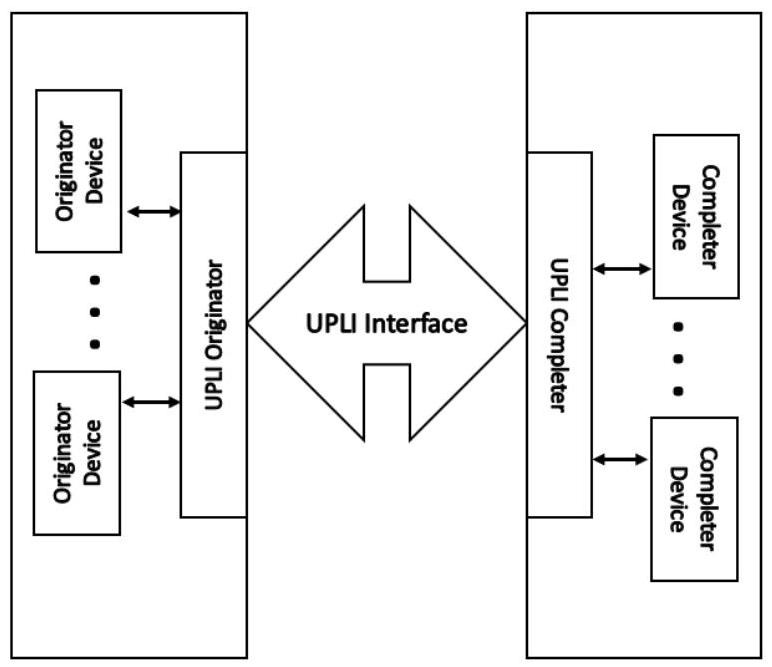
Figure 2-1 UALink Protocol Level Interface
图2-1 UALink协议层接口
In the UALink Protocol Level Interface, a device that initiates a Transaction by making a Request is called an Originator Device. A device that can respond to a Request is called a Completer Device. Requests are also called Commands. The terms Command and Request are used interchangeably in this specification.
在UALink协议层接口中，通过发出请求来发起事务的设备称为发起设备。能够响应请求的设备称为完成设备。请求也称为命令。本规范中，“命令”和“请求”这两个术语可互换使用。
The UALink Protocol Level Interface defines the Requests that can be issued by an Originator and the Responses that shall be returned to the Originator for each Request type.
UALink协议层接口定义了发起方可发出的请求，以及每种请求类型应返回给发起方的响应。
An Originator Device attaches to the UALink Protocol Level Interface via a UPLI Originator. Similarly, a Completer Device attaches to the UALink Protocol Level Interface via a UPLI Completer.
发起方设备通过 UPLI 发起方连接到 UA 链路协议层接口。同样，完成方设备通过 UPLI 完成方连接到 UA 链路协议层接口。
The Originator Device shall initiate a transaction by issuing a Read, Write, Atomic, UPLI Write Message, or Vendor Defined Command Request. When the Request is completed, the Completer Device shall issue a Response to the Originator Device. Transaction Tags allow the Originator Device to pair Requests with subsequent Responses. All Requests shall require a Response. In most of the figures in this specification, the Originator Devices and Completer Devices will not be shown for clarity.
发起方设备应通过发出读、写、原子操作、UPLI 写消息或供应商定义的命令请求来启动一个事务。当请求完成时，完成方设备应向发起方设备发出一个响应。事务标签允许发起方设备将请求与后续响应配对。所有请求都应需要一个响应。在本规范的大多数图中，为清晰起见，不会画出发起方设备和完成方设备。
A UPLI interface can be (and is typically) extend through a series of intermediate UPLI interfaces with Intermediate Logic Blocks as show in Figure 2-2 Extending a UPLI interface through Intermediate UPLI Interfaces below:
一个UPLI接口可以（并且通常）通过一系列带中间逻辑块的中间UPLI接口进行扩展，如下图2-2“通过中间UPLI接口扩展UPLI接口”所示：
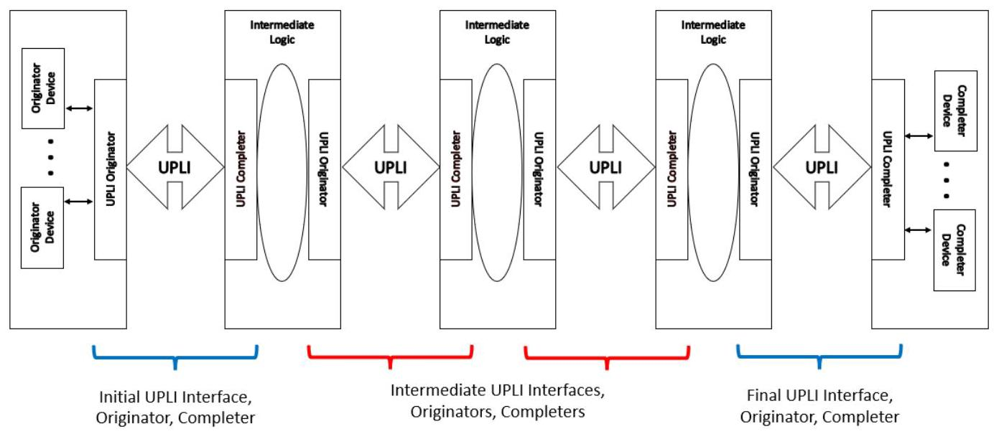
Figure 2-2 Extending a UPLI interface through Intermediate UPLI Interfaces
图 2-2 通过中间 UPLI 接口扩展 UPLI 接口
The Initial UPLI Interface connected to the Originator Devices is connected to a set of Intermediate Logic Blocks and Intermediate UPLI Interfaces that then ultimately connect to the Final UPLI Interface which is connected to the Completer Devices.
连接至发起者设备的初始 UPLI 接口连接到一组中间逻辑模块和中间 UPLI 接口，这些中间模块和接口最终连接到最终 UPLI 接口，而最终 UPLI 接口则连接到完成器设备。
As a typical use case, Figure 2-2 Extending a UPLI interface through Intermediate UPLI Interfaces corresponds to the single path from a specific Source Accelerator to a specific Destination Accelerator in a UALink use case utilizing a Switch. The first Intermediate Logic Block above represents the logic between a Source Accelerator and a Switch to implement a Transaction Layer Interface, a Data Link Layer Interface, a Physical Interface, and then another Data Link Layer and Transaction Layer Interface between the Source Accelerator and the Switch. The second Intermediate Logic Block represents the Switch core that routes UPLI Requests and Responses. While this figure represents only one path through the Switch from a specific Source Accelerator to a specific Destination Accelerator, the Switch core generally connects to multiple UPLI interfaces, not shown here, from multiple Source Accelerators. The third Intermediate Logic Block represents the Transaction Layer, Data Link Layer, and Physical Interfaces connecting the Switch to the Destination Accelerator.
作为一个典型用例，图2-2 通过中间UPLI接口扩展UPLI接口对应于在利用交换机的UALink用例中，从特定源加速器到特定目标加速器的单一路径。上方的第一个中间逻辑块表示源加速器与交换机之间的逻辑，用于实现事务层接口、数据链路层接口、物理接口，以及之后源加速器与交换机之间的另一个数据链路层和事务层接口。第二个中间逻辑块表示交换机核心，负责路由UPLI请求和响应。虽然此图仅表示通过交换机从特定源加速器到特定目标加速器的一条路径，但交换机核心通常连接到来自多个源加速器的多个UPLI接口，此处未显示。第三个中间逻辑块表示连接交换机与目标加速器的事务层、数据链路层和物理接口。
Generally speaking, but subject to rules explained later in 2.7.9 , an Intermediate Logic Block may reorder Requests and Responses received from one attached UPLI Interface before forwarding them on to the other attached UPLI Interface.
一般来说，但受后文 2.7.9 节所阐述规则的约束，中间逻辑块可以在将从一个所连接 UPLI 接口接收到的请求和响应转发到另一个所连接 UPLI 接口之前对其进行重新排序。
The UALink Protocol Level Interface contains four channels: The Request (Req) Channel, the Read Response/Data (RdRsp) Channel, the Originator Data (OrigData) Channel, and the Write Response (WrRsp) Channel.
UALink 协议层接口包含四个通道：请求（Req）通道、读响应/数据（RdRsp）通道、发起方数据（OrigData）通道和写响应（WrRsp）通道。
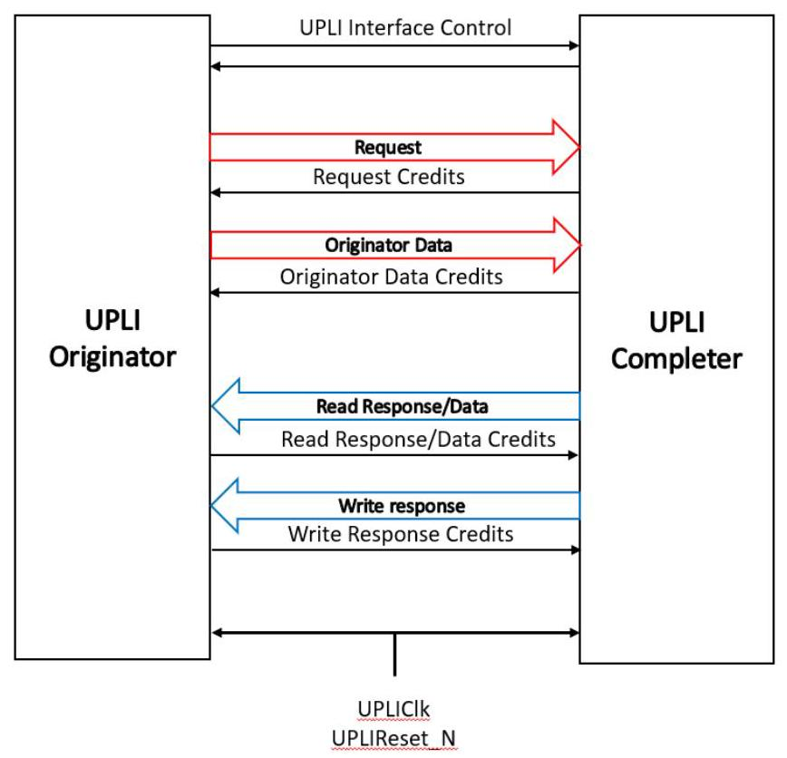
Figure 2-3 UALink Protocol Level Interface Channels and control signals
图 2-3 UALink 协议层接口通道与控制信号
The Request Channel shall contain a Request Address, the Request Type (Read, Write, Atomic, UPLI Write Message, Vendor Defined Command), fields controlling the size of the Request, a Source Accelerator Identifier, a Destination Accelerator Identifier, a Transaction Tag to uniquely identify the Request among outstanding Requests on the Request Channel, and various additional control and parity signals.
请求通道应包含请求地址、请求类型（读取、写入、原子操作、UPLI写入消息、供应商自定义命令）、控制请求大小的字段、源加速器标识符、目的加速器标识符、一个用于在请求通道上所有未完成请求中唯一标识该请求的事务标签，以及各种附加的控制与奇偶校验信号。
The Originator Data Channel shall contain 64 bytes of data for a Beat of a Write Request, Vendor Defined Write class Request, or UPLI Write Message Request (a Write Request, Vendor Defined Write class Request or UPLI Write Message Request may require up to four Beats) or Operand data for an Atomic Request or Vendor Defined Atomic class Request, Byte Enables for data or Operand Data, an indication of which Beat is present, and various additional control and parity signals. The Source Accelerator and Destination Accelerator for the Request are specified by the Request in the Request Channel associated with the Data Beats.
发起方数据通道应包含：对于“写入请求”、“供应商定义写入类请求”或“UPLI写入消息请求”的一个节拍，需提供64字节数据（“写入请求”、“供应商定义写入类请求”或“UPLI写入消息请求”最多可要求四个节拍）；或对于“原子请求”或“供应商定义原子类请求”，需提供操作数数据；以及用于数据或操作数数据的字节使能、当前节拍指示，以及多种附加控制与奇偶校验信号。请求的“源加速器”与“目的加速器”由与这些数据节拍关联的、位于请求通道中的请求指定。
The Read Response/Data Channel shall contain 64 bytes of data for a Beat of the Read Response (a Read Response may require up to four Beats), a Source Accelerator Identifier, a Destination Accelerator Identifier (a swap of the original Request Source and Destination values), a Transaction Tag to identify the Request among outstanding Read Requests from the Request Channel, indicators of the Read Response status, an indication of which Beat is present, and various additional control and parity signals.
读取响应/数据通道应包含读取响应的一个 Beat 的 64 字节数据（一个读取响应最多可能需要四个 Beat）、一个源加速器标识符、一个目的加速器标识符（即原始请求的源和目的值互换）、一个事务标签（用于在来自请求通道的未完成读取请求中标识该请求）、读取响应状态指示符、当前 Beat 的序号指示，以及各种附加的控制和奇偶校验信号。
The Write Response Channel shall contain a Source Accelerator Identifier, a Destination Accelerator Identifier (a swap of the original Request Source and Destination values), a Transaction Tag to identify the Request among outstanding write Requests from the Request Channel, indicators of the Write Response status, and various additional control and parity signals.
写响应通道应包含一个源加速器标识符、一个目的加速器标识符（原请求的源与目的值互换）、一个用于在请求通道的待处理写请求中标识对应请求的事务标签、写响应状态指示符，以及各种额外的控制与奇偶校验信号。
For each of these channels, there is a subset of signals for Credit Management. These signals flow from the Receiver of the Channel to the Source of the Channel. These Credit Management Signals
对于这些通道中的每一个，都有一组用于信用管理的信号子集。这些信号从该通道的接收端流向源端。这些信用管理信号
Ultra Accelerator Link Consortium Inc. (UALink) - UALink_200 Rev 1.0 Specification return Credits from the Receiver of the Channel to the Source of the Channel to allow the source to emit new valid Beats on the Channel. The source of the Channel shall not emit a new Beat without possessing the appropriate Credit(s).
Ultra Accelerator Link Consortium Inc. (UALink) - UALink_200 Rev 1.0 规范将信用从通道的接收端返回给通道的源端，以允许源端在通道上发出新的有效节拍。通道的源端在未拥有适当信用值的情况下不得发出新节拍。
The UPLIClk signal is the clock delineating the cycle boundaries on the clock synchronous UALink Protocol Level Interface. The UPLIReset_N signal is a low-active signal to reset the UALink Protocol Level Interface.
UPLIClk信号是用于划分时钟同步UALink协议层接口周期边界的时钟。UPLIReset_N信号是一个低有效信号，用于复位UALink协议层接口。
In this specification, similar signals that occur in different channels may be referred to using a shorthand notation. For example, The ReqVld signal in the Request Channel, the RdRspVld signal in the Read Response/Data Channel, the WrRspVld signal in the Write Response Channel, and the OrigDataVld signal in the Originator Data Channel are collectively referred to by the following notation: *Vld. These signals indicate, in each channel, whether a valid "Beat" of information is present on the channel.
在本规范中，出现在不同通道中的相似信号可能会使用简写记法来指代。例如，请求通道中的 ReqVld 信号、读响应/数据通道中的 RdRspVld 信号、写响应通道中的 WrRspVld 信号以及发起方数据通道中的 OrigDataVld 信号，统一用以下记法表示：*Vld。这些信号指示，在各通道中，是否存在一个有效的信息“Beat”。
Other examples include:
其他示例包括：
*Data: (RdRspData signal in the Read Response/Data Channel; OrigData signal in the Originator Data Channel)
数据：（读响应/数据通道中的 RdRspData 信号；发起者数据通道中的 OrigData 信号）
*CreditVld: (ReqCreditVld signal in the Request Channel; RdRspCreditVld signal in the Read Response/Data Channel; WrRspCreditVld signal in the Write Response Channel; OrigDataCreditVld signal in the Originator Data Channel).
*CreditVld：（请求通道中的 ReqCreditVld 信号；读响应/数据通道中的 RdRspCreditVld 信号；写响应通道中的 WrRspCreditVld 信号；发起方数据通道中的 OrigDataCreditVld 信号）。
2.2 UALink Stack Component
Figure 2-4, below illustrates the UALink Stack Component which consists of an independent UPLI Originator and an independent UPLI Completer and logic units to implement the UALink Protocol Layers. The UPLI Completer and UPLI Originator within a given UALink Stack shall not communicate directly with one another. Rather, the UPLI Completer and UPLI Originator are connected to an UALink TL (Transport Layer).
图2-4如下所示，展示了UALink堆栈组件，它由一个独立的UPLI发起端、一个独立的UPLI完成端以及实现UALink协议层的逻辑单元组成。在给定的UALink堆栈内，UPLI完成端与UPLI发起端不应直接相互通信，而是连接到UALink传输层（TL）。
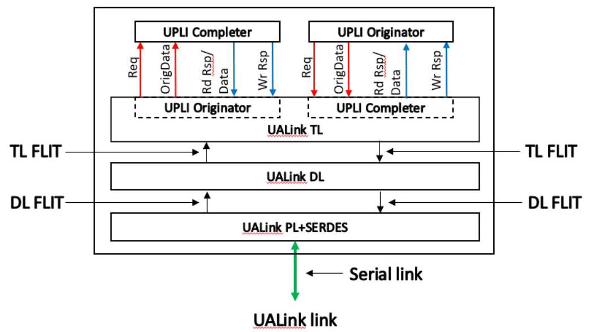
Figure 2-4 UALink Stack Component
图2-4 UALink协议栈组件
The UALink TL converts the UPLI Protocol Channels driven by the UPLI Originator and UPLI Completer (Req and OrigData for the UPLI Originator and Rd Rsp/Data and Wr Rsp for the UPLI Completer) into a TL Flit that is passed to the UALink DL Layer. Similarly, the UALink TL receives a TL Flit from the UALink DL that is unpacked into the UPLI Protocol Channels received by the UPLI Completer and the UPLI Originator (Req and OrigData for the Completer and Rd Rsp/Data and Wr Rsp for the Originator).
UALink 事务层（TL）将由 UPLI 发起方和 UPLI 完成方驱动的 UPLI 协议通道（发起方对应 Req 和 OrigData，完成方对应 Rd Rsp/Data 和 Wr Rsp）转换为 TL Flit，并传递至 UALink 数据链路层（DL）。类似地，UALink 事务层（TL）从 UALink 数据链路层（DL）接收 TL Flit，并将其解包为供 UPLI 完成方和 UPLI 发起方接收的 UPLI 协议通道（完成方对应 Req 和 OrigData，发起方对应 Rd Rsp/Data 和 Wr Rsp）。
The UALink DL receives several TL Flits and adds CRC protection and a header to the Flit to form a DL Flit and passes this DL Flit on to the UALink PL. Similarly, the UALink DL receives DL Flits from the UALink PL, strips the CRC and header from that Flit, and forms TL Flits that are passed on to the UALink TL.
UALink DL 接收多个 TL 微片，为其添加 CRC 保护和一个头部，从而构成 DL 微片，并将该 DL 微片传递给 UALink PL。类似地，UALink DL 从 UALink PL 接收 DL 微片，剥除该微片的 CRC 和头部，形成 TL 微片并传递给 UALink TL。
The UALink PL receives DL Flits and produces a code word with FEC encoding that is serialized and transmitted to a UALink PL in a connected UALink PL Stack Component. Similarly, the UAlink PL receives a serialized code word with FEC from the UALink PL in the connected UALink Stack Component performs FEC decode and converts that into DL Flit.
UALink PL 接收 DL Flit，并生成带有 FEC 编码的码字，该码字经串行化后传输至相连 UALink PL 协议栈组件中的 UALink PL。类似地，UAlink PL 从相连 UALink 协议栈组件中的 UALink PL 接收带有 FEC 的串行化码字，执行 FEC 解码并将其转换为 DL Flit。
To create an interface between an Accelerator and the Switch, two UALink Stack Components are connected as shown below in Figure 2-5, this overall interface shall be bi-directional and symmetric with the UPLI Originator in the Accelerator communicating with the UPLI Completer in the Switch and the UPLI Originator in the Switch communicating with the UPLI Completer in the Accelerator.
为了在加速器与交换机之间创建接口，两个UALink栈组件按下文图2-5所示进行连接，该整体接口应为双向且对称的，其中加速器中的UPLI发起者与交换机中的UPLI完成者通信，交换机中的UPLI发起者与加速器中的UPLI完成者通信。
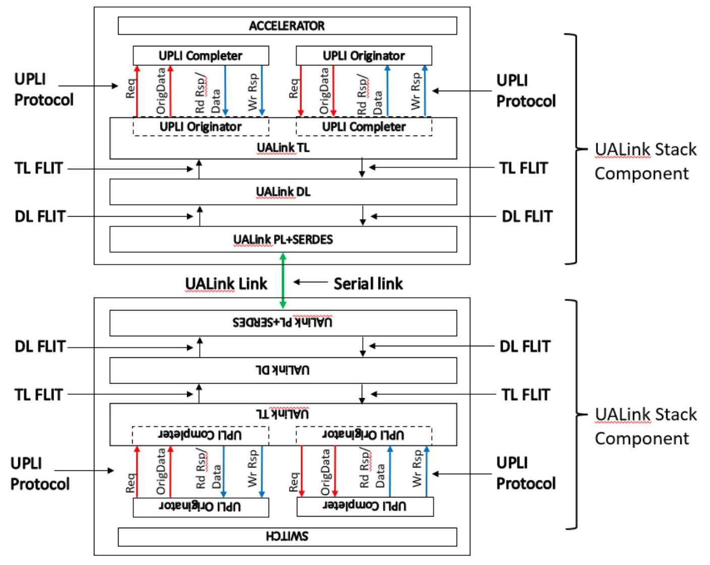
Figure 2-5 Connected UALink Stack Components
图2-5 连接的UALink协议栈组件
2.3 UALink UPLI Request and Response Paths
Figure 2-6, shows a logical representation of two different Accelerators (ACC "A" and ACC "B") connected through different pairs of UALink Stack Components through a Switch:
图2-6展示了两个不同的加速器（ACC “A”和ACC “B”）通过交换机的不同UALink协议栈组件对连接的逻辑表示：
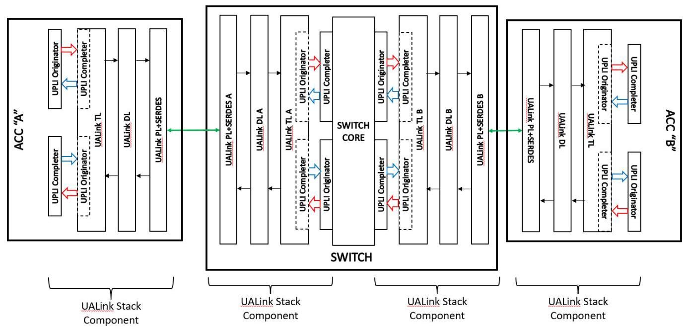
Figure 2-6 End-to End UALink Connection Between two Accelerators
图 2-6 两个加速器之间的端到端 UALink 连接
To issue a Request from Accelerator A to Accelerator B, the UPLI Originator in Accelerator A shall issue a Request on the Request Channel (and if the Request is a Write, UPLI Write Message, Vendor Defined write Class Command also issues the first Beat of data on the Originator Data Channel. Atomic or Vendor Defined Atomic write Class Commands issue Operand Data on the Originator Data Channel on the first Beat of data on the Originator Data Channel). The UALink TL receives the Request and shall package it into a TL Control Half-Flit (Data Beats shall be packaged as subsequent Data Half-Flits). TL Half-Flits are combined to create a TL Flit and a TL Flit shall consist of two TL Half-Flits. The TL Flit is then modified by the UALink DL to add FEC and CRC and becomes a DL Flit which is then passed through the PHY on Accelerator A as a bitstream to PHY A on the Switch. The PHY A on the Switch is one of several possible PHYs on the Switch where traffic from Accelerator A can be received. The bitstream is reconstituted into the DL Flit by PHY A and passed through UALink DL A and converted to a TL Flit. Finally, the TL Flit passes through UALink TL A and is presented to the UPLI Completer in the Switch attached to UALink TL A.
要从加速器A向加速器B发出请求，加速器A中的UPLI发起方需在请求通道上发出请求（若请求为写操作、UPLI写消息、厂商自定义写类命令，还需在发起方数据通道上发出数据的首拍。原子操作或厂商自定义原子写类命令则在发起方数据通道上发出操作数数据，作为数据首拍）。UALink TL接收该请求，并将其打包成TL控制半片（数据拍应打包为随后的数据半片）。TL半片合并生成TL片，一个TL片必须由两个TL半片构成。随后，该TL片由UALink DL层修改，添加FEC和CRC，成为DL片，再经由加速器A的物理层以比特流形式传递至交换机上的PHY A。交换机上的PHY A是交换机上可接收来自加速器A流量的多个物理接口之一。PHY A将比特流重组为DL片，并经由UALink DL A传递，转换为TL片。最后，TL片通过UALink TL A，呈现给与该UALink TL A相连的交换机中的UPLI完成方。
The UPLI Completer at the Switch attached to UALink TL A shall package the UPLI Protocol elements and the Switch Core shall route these elements to the UPLI Originator attached to UALink TL B that can deliver the Request to Accelerator B. The process of transiting the two UALink Stack Components to reach Accelerator B from the Switch shall be the same process as transiting from Accelerator A to the Switch and terminates at the UPLI Completer in Accelerator B.
交换机中连接到 UALink TL A 的 UPLI 完成器应打包 UPLI 协议元素，交换核心应将这些元素路由到连接到 UALink TL B 的 UPLI 发起器，该发起器可将请求交付给加速器 B。通过两个 UALink 协议栈组件从交换机到达加速器 B 的传输过程，应与从加速器 A 到交换机并终止于加速器 B 中 UPLI 完成器的过程相同。
When the Request has been processed in Accelerator B, Responses (and data for Read , Vendor Defined Read class Commands , Atomic Requests, or Vendor Defined Atomic class Commands) shall be issued by the UPLI Completer on Accelerator B and pass through the two UALink Stack Components to reach the UPLI Originator connected to UALink TL B. These Responses are routed through the Switch Core and then pass through the two UALink Stack Components starting at the Switch UPLI Completer attached to UALink TL A and terminate at the UPLI Originator in Accelerator A.
当请求在加速器B中被处理完毕后，响应（以及针对读取、供应商定义读取类命令、原子请求或供应商定义原子类命令的数据）应由加速器B上的UPLI完成方发出，并穿过两个UALink栈组件到达与UALink TL B相连的UPLI发起方。这些响应通过交换机核心进行路由，然后穿过从连接UALink TL A的交换机UPLI完成方开始的两个UALink栈组件，最终终止于加速器A中的UPLI发起方。
The following diagram, Figure 2-7, illustrates the flow of Responses and Requests for a pair of Accelerators. For clarity, this figure omits the UALink DL and UALink PHY blocks. Requests initiated by the Accelerator A UPLI Originator are ultimately sent to the UPLI Completer in Accelerator B. However, the Accelerator A Request is first received by the UPLI Completer in the Switch and is then routed to the UPLI Originator in the Switch ultimately connected to Accelerator B which passes the Request on to Accelerator B's UPLI Completer.
以下图表，图 2-7，展示了一对加速器的响应与请求流程。为清晰起见，该图省略了 UALink DL 和 UALink PHY 模块。由加速器 A 的 UPLI 发起端发起的请求最终发送至加速器 B 的 UPLI 完成端。然而，加速器 A 的请求首先由交换机中的 UPLI 完成端接收，然后路由至交换机中最终连接到加速器 B 的 UPLI 发起端，后者再将请求传递给加速器 B 的 UPLI 完成端。
In a similar fashion, the Response for Accelerator A's Request is ultimately sent from the UPLI Completer in Accelerator B to the UPLI Originator in Accelerator A via first the UPLI Originator at the Switch connected to Accelerator B and then the UPLI Completer in the Switch ultimately connected to Accelerator A.
以类似的方式，加速器A所发请求的响应最终从加速器B中的UPLI Completer返回至加速器A中的UPLI Originator，其传递路径首先经过与加速器B相连的交换机处的UPLI Originator，再经由最终连接至加速器A的交换机中的UPLI Completer。
The requests and Responses for Accelerator B's Requests and Responses follow paths that are symmetrical to Accelerator A's requests and Responses, but in the opposite direction.
加速器 B 的请求和响应所遵循的路径与加速器 A 的请求和响应对称，但方向相反。
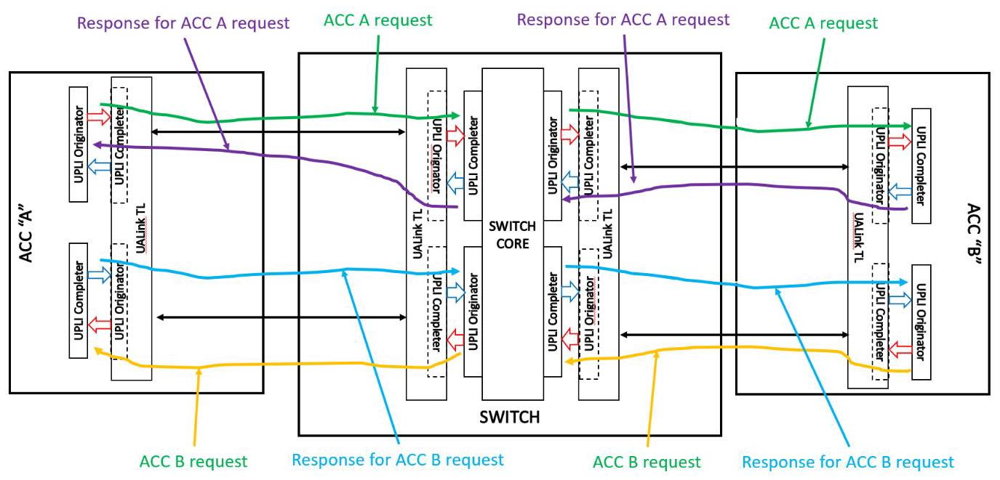
Figure 2-7 UPLI Request and Response Flows
图 2-7 UPLI 请求与响应流
2.4 Routing a Transaction from End-to-End
This Section illustrates the flow of a Request from an Originator Device to a Completer Device and the corresponding Response from the Completer Device to the Originator Device.
本节展示请求从发起端设备流向完成端设备的过程，以及相应的响应从完成端设备返回至发起端设备的过程。
A UALink station has four UALink lanes which can be bifurcated into one x4, two x2, or four x1 UALink Ports. All UALink stations in a Pod (both on the Switches and at the Accelerators) must be bifurcated in the same manner.
一个 UALink 站点有四条 UALink 通道，可将其分叉为一个 x4、两个 x2 或四个 x1 UALink 端口。Pod 内的所有 UALink 站点（无论是交换机还是加速器）都必须以相同的方式进行分叉。
The number of UALink Ports on each Accelerator shall be equal. The Port identifier within a station shall start at 0 and shall be numbered consecutively. UALink Stations shall be numbered contiguously, and a Request or Response is routed from a Source Port of a Switch to a Destination Port of a Switch by routing from the Source Port on the Source Station to the Target Station and then to the Target Port within the station. How a Request or Response is routed from within a Switch is ultimately up to the implementation.
每个加速器上的 UALink 端口数量应相等。站点内的端口标识符应从 0 开始并连续编号。UALink 站点应连续编号，请求或响应通过从源站点上的源端口路由到目标站点，然后再路由到该站点内的目标端口，从而从交换机的源端口路由到交换机的目的端口。请求或响应在交换机内部如何路由最终由实现决定。
In a Pod, a Physical Switch shall have at least as many Ports as the number of Accelerators in the Pod and the number of Ports on a Physical Switch should equal the Number of Accelerators in the Pod (when the number of Ports on a Physical Switch matches the Number of Accelerators in the system - as shown below in Figure 2-8 Example system with 32 Accelerators with 32 x1 UALink Links -- the concept of Switch and Physical Switch are equivalent) . This lets each Switch connect to every Accelerator in the Pod via a specific Port. The example system shown below in Figure 2-8 illustrates a Pod with 32 Accelerators numbered Accelerators 0, 1, to 31 and 32 Switches numbered 0, 1, to 31.For clarity, certain of the UALink Links have been shown while the other links are omitted.
在Pod中，物理交换机应至少具有与Pod内加速器数量同样多的端口，且物理交换机的端口数应与Pod内加速器数量相等（当物理交换机的端口数与系统中的加速器数量匹配时——如下方图2-8所示的具有32个加速器和32条x1 UALink链路的示例系统——交换机与物理交换机的概念是等同的）。这使得每台交换机都能通过特定端口连接到Pod中的每个加速器。下方图2-8所示的示例系统展示了一个包含32个加速器（编号为加速器0、1至31）和32台交换机（编号为0、1至31）的Pod。为清晰起见，图中显示了部分UALink链路，其他链路已省略。
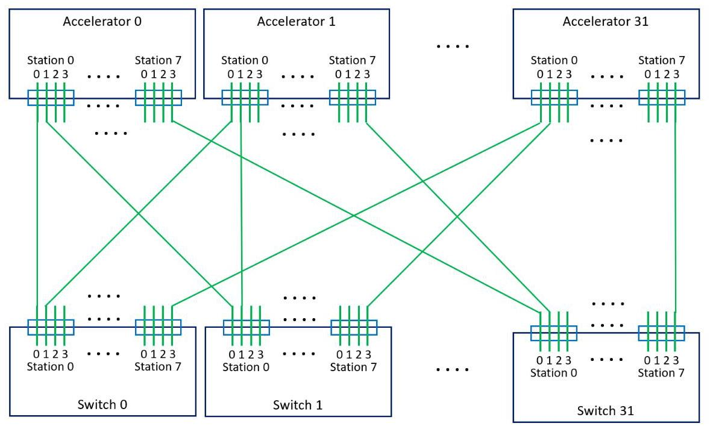
Figure 2-8 Example system with 32 Accelerators with 32 x1 UALink Links
图2-8 具有32个加速器和32条x1 UALink链路的示例系统
The Accelerators and Switches shall use a specific subset of signals in the various UPLI Channels to route and process Requests and data through the system. The rest of the signals within a Channel are conveyed, usually unmodified, with the Transaction. However, specific signals may be modified at various points as the Transaction progresses through the Pod. In addition to the routing signals and the other signals, a set of Credit Management signals shall provide flow control within a each UALink Channel within any given UALink Protocol Level Interface.
加速器和交换机应使用各UPLI通道中特定的信号子集，对系统中的请求和数据进行路由与处理。通道内的其余信号通常不作修改，随事务一同传输。然而，随着事务在Pod中逐步推进，某些特定信号可能在关键节点被修改。除路由信号及其他信号外，一套信用管理信号将在任一给定UALink协议层接口内的每条UALink通道中提供流控机制。
UPLI Interface Definition and Operation Rules
UPLI接口定义与操作规则
Ultra Accelerator Link Consortium Inc. (UALink) - UALink_200 Rev 1.0 Specification
超级加速器链路联盟 (UALink) - UALink_200 修订版 1.0 规范
Specifically, the Request Channel (Req) shall contain two 10-bit signals, "ReqSrcPhysAccID" and "ReqDstPhysAccID" that specify the Source Accelerator and Destination Accelerator of the Request. In addition, the Request Channel shall contain a 2-bit signal "ReqPortID" that shall control, at certain UALink Protocol Level Interfaces, the routing of the Request onto the bifurcated UALink Links at the associated UALink Stack Component and shall control the Time Division Multiplexing (TDM) of the UALink Protocol Level Interfaces, as described in a later section, at all UALink Protocol Level Interfaces.
具体而言，请求通道（Req）应包含两个10位信号“ReqSrcPhysAccID”和“ReqDstPhysAccID”，分别指定请求的源加速器和目标加速器。此外，请求通道应包含一个2位信号“ReqPortID”，该信号在特定UALink协议层接口上应控制请求路由到相关UALink堆栈组件处的分叉UALink链路上，并在所有UALink协议层接口上应控制UALink协议层接口的时分复用（TDM），如后文所述。
The Read Response/Data (RdRsp) Channel shall contain signals "RdRspSrcPhysAccID", "RdRspDstPhysAccID", and "RdRspPortID" and the Write Response (WrRsp) Channel shall contain signals "WrRspSrcPhysAccID", "WrRspDstPhysAccID", and "WrRspPortID". These signals shall function in those UPLI Channels in an analogous way to the respective signals in the Request Channel.
读响应/数据（RdRsp）通道应包含信号“RdRspSrcPhysAccID”、“RdRspDstPhysAccID”与“RdRspPortID”，写响应（WrRsp）通道应包含信号“WrRspSrcPhysAccID”、“WrRspDstPhysAccID”与“WrRspPortID”。这些信号在这些UPLI通道中的作用方式，应与请求通道中相应信号类似。
A sample Read Request to address "X" from an Accelerator A (numbered "0") to an Accelerator B (numbered "31") in a Pod connected as shown above (Figure 2-8 Example system with 32 Accelerators with 32 x1 UALink Links) will be used to illustrate the processing of a transaction using the following figure (Figure 2-9 Read Request end-to-end flow with Response):
在如上方图示（图2-8 含有32个加速器及32条x1 UALink链路的示例系统）所连接的Pod中，从一个加速器A（编号为“0”）向加速器B（编号为“31”）发出一个针对地址“X”的示例读请求，将借助下图（图2-9 带响应的读请求端到端流程）来阐明一个事务的处理过程：
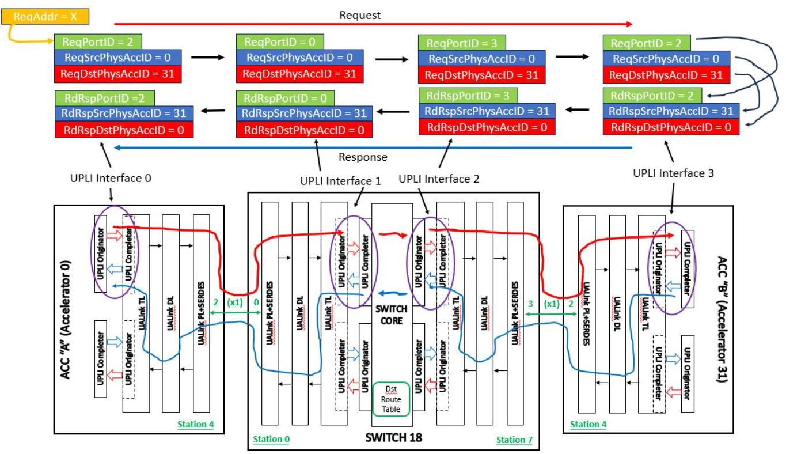
Figure 2-9 Read Request end-to-end flow with Response
图2-9 带响应的读请求端到端流程
The Read Request begins with an Originator Device (not shown) forming a Read Request to address "X". Conceptually, Requests can go out any UALink Link on the Accelerator (each UALink Link is attached to a Switch which is capable of routing any Request to any Destination Accelerator). However, generally speaking, to enforce ordering for Requests all accesses within any given 256- byte region of memory must be routed out the same UALink Port (in this example, arbitrarily chosen to be Station 4, Port 2 for the address "X" - see section 2.7.9 for complete details).
读取请求始于发起方设备（未显示）向地址“X”构造一个读取请求。从概念上讲，请求可以通过加速器上的任何 UALink 链路发出（每条 UALink 链路都连接到一个交换机，该交换机能够将任何请求路由到任何目标加速器）。然而，一般来说，为了保证请求的排序，对任意给定 256 字节内存区域的所有访问都必须通过相同的 UALink 端口路由（在此示例中，地址“X”被任意选定为通过站点 4 的端口 2 进行路由——完整细节请参见第 2.7.9 节）。
The Read Request is formed at the Originator Device and is issued to the UPLI Originator at Station 4 with an indication to use UALink Port 2, an indication of the Source Accelerator (0 in this example), an indication of the Destination Accelerator (31 in this example), and any other
读请求在发起方设备形成，并在站点 4 发出至 UPLI 发起方，并附有使用 UALink 端口 2 的指示、源加速器指示（本例中为 0）、目标加速器指示（本例中为 31），以及任何其他
UPLI Interface Definition and Operation Rules
UPLI接口定义与操作规则
Ultra Accelerator Link Consortium Inc. (UALink) - UALink_200 Rev 1.0 Specification information associated with the Read Request. The UPLI Originator issues the Request on UALink Protocol Level Interface 0 with ReqPortID set to '2', ReqSrcPhysAccID set to '0' and ReqDstPhysAccID set to '31'. The ReqSrcPhysAccID and ReqDstPhysAccID fields shall remain unchanged from the initial Originator in the Source Accelerator A to the final UPLI Completer in the Destination Accelerator B.
与读取请求关联的 Ultra Accelerator Link Consortium Inc. (UALink) - UALink_200 Rev 1.0 规范信息。UPLI 发起方在 UALink 协议层接口 0 上发出该请求，其中 ReqPortID 设置为 '2'，ReqSrcPhysAccID 设置为 '0'，ReqDstPhysAccID 设置为 '31'。ReqSrcPhysAccID 和 ReqDstPhysAccID 字段应保持从源加速器 A 中的初始发起方到目标加速器 B 中的最终 UPLI 完成方不变。
The Read Request is then conveyed across the UALink Link attached to Station 4, Port 2 (as controlled by the ReqPortID value) on Accelerator 0. The ReqPortID value shall not propagated over the UALink Link but rather instead be locally generated at the Switch based on the Port the Read Request entered the Switch. The Read Request enters Switch 18 (the UALink Link at Station 4, Port 2 on all Accelerators are attached to Switch 18 in this example topology) at Station 0, Port 0 (The UALink Links at Station 0, Port 0 on all Switches are attached to Accelerator 0 in this example topology). Based on the entry port at the Switch, a new value for ReqPortID of 0 is assigned and used at UALink Protocol Level Interface 1 in the Switch. The ReqPortID value at Ultra Link Protocol Interface 1 only controls the TDM for the Read Request while transiting UALink Protocol Level Interface 1 into the Switch core.
读请求随后通过加速器 0 上连接至 Station 4, Port 2 的 UALink 链路进行传输（由 ReqPortID 值控制）。ReqPortID 值不得通过 UALink 链路传播，而应由交换机基于该读请求进入交换机的端口在本地生成。读请求在 Station 0, Port 0 进入交换机 18（在本示例拓扑中，所有加速器上位于 Station 4, Port 2 的 UALink 链路均连接至交换机 18），（在本示例拓扑中，所有交换机上位于 Station 0, Port 0 的 UALink 链路均连接至加速器 0）。基于交换机上的入口端口，一个新的 ReqPortID 值 0 被分配，并在交换机内的 UALink 协议层接口 1 上使用。该值仅控制读请求在通过 UALink 协议层接口 1 进入交换机核心时的 TDM 调度。
Once in the Switch core, a look up, based on the ReqDstPhysAccID signal, is performed in the Destination Route Table (Dst Route Table) to determine the proper Station and Port the Read Request should be routed through to get to the destination Accelerator (in this case, Station 7, Port 3 - Accelerator 31 is connected to Station 7, Port 3 on all Switches in this example topology) and routes the Read Request to that station (Station 7) and presents the Read Request on UALink Protocol Level Interface 2 with the newly assigned ReqPortID value of 3.
一旦进入交换核心，便会基于 ReqDstPhysAccID 信号在目标路由表（Dst Route Table）中执行查找，以确定读请求应经由的合适站点和端口，从而到达目标加速器（在此示例中为站点 7、端口 3——加速器 31 在本拓扑中的所有交换机上均连接至站点 7、端口 3），并将该读请求路由至该站点（站点 7），在 UALink Protocol Level Interface 2 上呈现该读请求，且为其新分配的 ReqPortID 值为 3。
The UPLI Originator at UALink Protocol Level Interface 2 issues the Read Request which exits the Switch on Port 3 and drops the ReqPortID value. The Read Request then enters Accelerator 31 at Station 4, Port 2 and the value of ReqPortID is regenerated to a value of '2' indicating the Port on which this Request entered Accelerator 31. This regenerated ReqPortID value is used when the Request is issued on UALink Protocol Level Interface 3 and controls the TDM for that interface. The UPLI Completer at UALink Protocol Level Interface 3 retains the value of ReqPortID, ReqSrcPhysAccID, and ReqDstPhysAccID while the Request is being processed by a Completer Device in the Destination Accelerator.
UALink 协议层级接口 2 处的 UPLI 发起方发出读请求，该请求在交换机端口 3 离开，并丢弃 ReqPortID 值。随后，读请求在站点 4、端口 2 进入加速器 31，此时 ReqPortID 值被重新生成为 '2'，表示该请求进入加速器 31 所用的端口。此重新生成的 ReqPortID 值将在请求被发往 UALink 协议层级接口 3 时使用，并控制该接口的时分复用（TDM）。UALink 协议层级接口 3 处的 UPLI 完成方在目标加速器中的完成方设备处理该请求时，会保留 ReqPortID、ReqSrcPhysAccID 和 ReqDstPhysAccID 的值。
When the information for a Read Response is ready (Read Responses may contain more than one Response Beat), the UPLI Completer at UALink Protocol Level Interface 3 forms a Response Beat with RdRspPortID set to the retained ReqPortID value of '2' and uses the retained Station value to deliver the Response Beat to Station 4. This allows the Completer at UALink Protocol Level Interface 3 to route the Response Beat to the correct output Port and Station without referring to the address of the original Read Request. At UALink Protocol Level Interface 2, the RdRspPortID signal has the regenerated value of ' 3 ' reflecting the port the Read Response entered the Switch on.
当读响应信息就绪时（读响应可能包含多个响应节拍），UALink协议层接口3处的UPLI完成者会形成一个响应节拍，将其RdRspPortID设置为保留的ReqPortID值“2”，并使用保留的Station值将响应节拍传递至站4。这使得UALink协议层接口3处的完成者能够将响应节拍路由至正确的输出端口和站，而无需参考原始读请求的地址。在UALink协议层接口2处，RdRspPortID信号具有重新生成的值“3”，反映读响应进入交换机时所经过的端口。
At UALink Protocol Level Interface 1, the RdRspPortID signal value '0' indicates the Port on Station 0 where the Read Response should exit. This value is obtained from a lookup of the Destination Route Table indexed by RdRspDstAccPhysID at UALink Protocol Level Interface 2 which indicates the destination Accelerator is connected to Port 0, Station 0 on this Switch. Finally, the value of RdRspPortID at UALink Protocol Level Interface 0 is '2', matching the Port the Read Response entered the Source Accelerator. For Read Responses containing more than one Beat of Data, the same process is followed for each Beat.
在 UALink 协议层接口 1（ULink Protocol Level Interface 1）处，RdRspPortID 信号值 '0' 表示读响应应在站 0 的端口 0 退出。该值通过 UALink 协议层接口 2 以 RdRspDstAccPhysID 为索引查找目标路由表获得，表明目标加速器连接在此交换机的端口 0、站 0 上。最终，在 UALink 协议层接口 0 处，RdRspPortID 的值为 '2'，与该读响应进入源加速器的端口相匹配。对于包含多拍数据的读响应，每一拍都遵循相同的处理流程。
Writes Requests shall act similarly to Read Requests with the exception that data is issued on the Originator Data Channel to the Destination Accelerator with a single Beat Write Response containing no data being returned.
写入请求的行为应与读取请求类似，不同之处在于数据会在发起者数据通道上发送至目标加速器，并返回一个不含数据的单节拍写入响应。
Evaluation Copy
CHANGSHUSLIVINGTIVONIMINGONOONNITHOLVHATIONVYALTON SZOZ @
CHANGSHUSLIVINGTIVONIMINGONOONNITHOLVHATIONVYALTON SZOZ @
2.5 UPLI Channel Time Division Multiplexing (TDM)
Each UALink Station driven by an UALink Stack Component can interface to 4 UALink Lanes that can be bifurcated into four x1 UALink Links, two x2 UALink Links, or one x4 UALink Link. The UALink Ports attached to the UALink Links shall be numbered " 0 " for a x4 bifurcation, "0, 1 " for a x2 bifurcation, and " 0, 1, 2,3 " for a x1 bifurcation.
由 UALink 堆栈组件驱动的每个 UALink 站点均可连接 4 条 UALink 通道，这些通道可分叉为四个 x1 UALink 链路、两个 x2 UALink 链路或一个 x4 UALink 链路。连接到 UALink 链路的 UALink 端口应编号如下：x4 分叉时为“0”，x2 分叉时为“0, 1”，x1 分叉时为“0, 1, 2, 3”。
Each Channel in an UALink Protocol Level Interface shall be Time Division Multiplexed (TDM), meaning that for a given cycle, the signals within the UALink Protocol Level Interface channel (aside from the Credit Management signals) are associated with a specific bifurcated Port on the UALink Stack Component attached to a UALink Link. Figure 2-10 illustrates an example UALink Stack Component with two associated UALink Protocol Level Interfaces with the UALink station bifurcated into four x1 UALink Links:
UALink 协议层接口中的每个通道都应采用时分复用(TDM)，即对于给定周期，该 UALink 协议层接口通道内的信号（信用管理信号除外）均关联到连接至 UALink 链路的 UALink 堆栈组件上的特定分叉端口。图 2-10 展示了一个示例 UALink 堆栈组件，它带有两个关联的 UALink 协议层接口，其中 UALink 站点被分叉为四个 x1 UALink 链路：
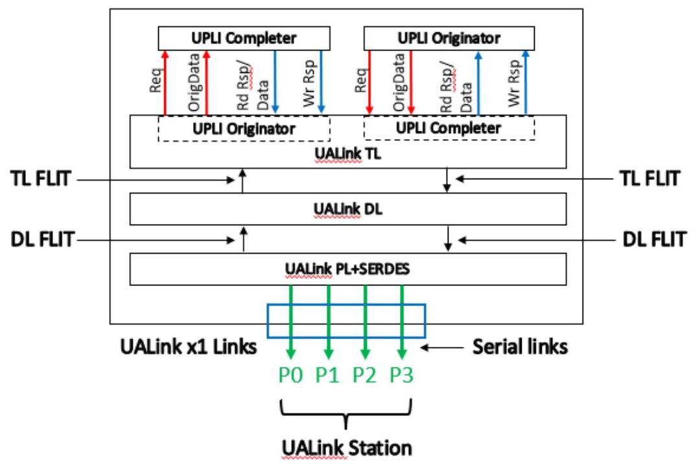
Figure 2-10 UALink Station with x1 bifurcation
图 2-10 具有 x1 分叉的 UALink 站
Each Channel in the UALink Protocol Level Interface in the UALink Stack Component shall have a unique "Valid" signal ("ReqVld" for the Request Channels, "OrigDataVld" for the Originator Data Channels, "RdRspVld" for the Rd Response/Data Channels, and "WrRspVld" for the Write Response Channels) that indicates when valid data is being driven onto the Channel. The "PortID" signal ("ReqPortID" for the Request Channels, "OrigDataPortID" for the Originator Data Channels, "RdRspPortID" for the Rd Response/Data Channels, and "WrRspPortID" for the Write Response Channels) for a given UALink Protocol Level Interface channel shall signify the TDM value for the current cycle when the "Valid" signal for that Channel is asserted and shall be ignored otherwise.
UALink 堆栈组件中的 UALink 协议层接口中的每个通道应具有一个唯一的“Valid”信号（请求通道为“ReqVld”，发起者数据通道为“OrigDataVld”，读响应/数据通道为“RdRspVld”，写响应通道为“WrRspVld”），用于指示何时正在向通道驱动有效数据。给定 UALink 协议层接口通道的“PortID”信号（请求通道为“ReqPortID”，发起者数据通道为“OrigDataPortID”，读响应/数据通道为“RdRspPortID”，写响应通道为“WrRspPortID”），应在该通道的“Valid”信号被置为有效时，表示当前周期的 TDM 值，否则应忽略。
The TDM value shall cycle through a sequence of all the possible Port values (based on the bifurcation) in ascending order, wrapping back to 0 at the maximum value, every 'N' cycles, where \(\mathrm{N}\) is the number of ports in the station. Valid cycles for a given PortID may only be presented on any UALink Protocol Level Interface Channel every N cycles.
TDM 值应每 'N' 个周期以升序循环遍历所有可能的端口值序列（基于分岔），并在最大值处绕回至 0，其中 \(\mathrm{N}\) 是站内的端口数。给定 PortID 的有效周期仅可在任何 UALink 协议层接口通道上每 N 个周期出现一次。
The TDM cycle for the Request Channel and the Originator Data Channel shall be set by the "PortID" signal value on the first ReqVld Beat for that Request Channel (whether the Request is a Read or Vendor Defined Read class Command where the OrigData field is unused or is a Write, Atomic, UPLI UPLI Interface Definition and Operation Rules
请求通道和发起方数据通道的TDM周期应由该请求通道首个ReqVld节拍上的“PortID”信号值设置（无论请求是读取还是供应商定义读取类命令，其中OrigData字段未使用，或是写入、原子、UPLI UPLI接口定义与操作规则）
Ultra Accelerator Link Consortium Inc. (UALink) - UALink_200 Rev 1.0 Specification
Ultra Accelerator Link 联盟 (UALink) —— UALink_200 修订版 1.0 规范
Write Message, Vendor Defined Write class Command, Vendor Defined Atomic class Command, or Atomic Request where the OrigData field is used) and shall remain fixed thereafter for those channels (the Request and Originator Data Channel must be on the same TDM phase to allow the Req and OrigData Channel to both be valid for the first beat of any Request that issues data on the Originator Data Channel). For example, if after reset, if the first valid packet on a Request Channel has a ReqPortID value of '2', the TDM for that Request Channel and Originator Data starts on that cycle with a value of 2 and cycles through the values in the following fashion: \(2,3,0,1,2,3,0,1,\ldots\) thereafter (for a x1 bifurcation. For a x2 bifurcation, the sequence is \(0,1,0,1,\ldots\) and for a x4 bifurcation the sequence is 0, 0, 0.......). The TDM cycle for the Read Response/Data and Write Response Channels shall be set independently based on the PortID value for the initial Read and Write Response Beats respectively.
写消息、厂商定义的写类命令、厂商定义的原子类命令，或 OrigData 字段被使用的原子请求）且此后对于这些通道保持固定（请求通道与发起者数据通道必须处于同一 TDM 相位，以允许在任何在发起者数据通道上发出数据的请求的第一个节拍中，Req 与 OrigData 通道均有效）。例如，若复位后请求通道上的第一个有效分组的 ReqPortID 值为“2”，则该请求通道与发起者数据的 TDM 在该周期以值 2 开始，并按以下方式循环：\(2,3,0,1,2,3,0,1,\ldots\)（对于 x1 分叉而言。对于 x2 分叉，序列为 \(0,1,0,1,\ldots\)；对于 x4 分叉，序列为 0,0,0.......）。读响应/数据通道与写响应通道的 TDM 周期应分别基于初始读响应节拍和写响应节拍的 PortID 值独立设置。
The PortID signal for any subsequent "Valid" cycle on the Channel shall match the established TDM value for the current cycle. The explicit PortID signal removes the need for an explicit synchronization sequence to establish the TDM value and allows a receiver to simply use PortID to identify the TDM cycle without having to explicitly track the current TDM cycle (though the receiver implementation can choose to track the TDM cycle to check for the correct TDM cycle value on received Beats). Finally, an explicit PortID signal is useful for debug.
信道上任何后续“有效”周期的 PortID 信号，均须与当前周期已确立的 TDM 值匹配。显式的 PortID 信号消除了为确立 TDM 值而需显式同步序列的必要，并允许接收器仅使用 PortID 来标识 TDM 周期，而无需显式跟踪当前的 TDM 周期（尽管接收器实现可选择跟踪 TDM 周期，以便检查接收到的 Beat 上的 TDM 周期值是否正确）。此外，显式的 PortID 信号对调试也很有用。
The UALink TL shall be responsible for assembling the various valid packets for differing Ports on the differing UPLI Channels into outbound TL Flits and placing the various received TL Flits onto the correct UPLI TDM cycles on each UPLI Interface.
UALink 事务层负责将各 UPLI 接口上不同端口、不同 UPLI 通道的各种有效数据包组装成出站 TL 微片，并将接收到的各种 TL 微片放置到每个 UPLI 接口上正确的 UPLI TDM 周期中。
2.6 UALink Protocol Level Interface Flow Control and overall UALink Flow control
Flow control in the UALink Protocol Level Interface shall utilize a Credit-based control mechanism with Credits being per Port, per UPLI Channel. At initialization or after reset of the UPLI Interface, the Sender side of a UPLI Channel shall have no Credits and the Receiver side of a UPLI channel shall issue an initial set of Credits to the Sender side.
UALink协议层接口中的流量控制应采用基于信用的控制机制，信用量按端口、按UPLI通道进行管理。在UPLI接口初始化或重置后，UPLI通道的发送方应无任何信用量，而UPLI通道的接收方应向发送方发放初始信用量集。
The Receiver shall indicate a Credit or Credits is being initially issued (or, after initialization, being returned) using the following signals:
接收方应使用以下信号指示信用点正在初次发放（或初始化后，正在返还）：
- A CreditVld[3:0] signal (ReqCreditVld[3:0], OrigDataCreditVld[3:0], RdRspCreditVld[3:0], WrRspCreditVld[3:0]) shall indicate a Credit or Credits is being returned to the Sender and for what port (CreditVal[0]=1 indicates Port 0 and so on). Credits may be returned on any Port of set of Ports simultaneously by asserting the appropriate signals within *CreditVld[3:0]. Credit returns shall be independent of the Time Division Multiplexing of the UPLI interface (i.e. Credits for any Port may be returned in any cycle).
- CreditVld[3:0]信号（ReqCreditVld[3:0]、OrigDataCreditVld[3:0]、RdRspCreditVld[3:0]、WrRspCreditVld[3:0]）应指示一个或多个信用正被返回给发送方，并指示对应的端口（CreditVal[0]=1 表示端口 0，以此类推）。信用可同时在任何端口集合上返回，只需在*CreditVld[3:0]中置位相应的信号。信用返回应独立于 UPLI 接口的时分复用（即任何端口的信用可在任何周期返回）。
- A CreditPool[3:0] signal (ReqCreditPool[3:0], OrigDataCreditPool[3:0], RdRspCreditPool[3:0], WrRspCreditPool[3:0]) shall indicate the "type" of the Credit being returned ('0' indicates a VC Credit, '1' indicates a Pool Credit) and for what Port (CreditPool[0] indicates the Credit Type for Port0 and so on). This signal shall only be considered valid when the corresponding *CreditVld[3:0] signal is asserted.
- 一个 CreditPool[3:0] 信号（ReqCreditPool[3:0]、OrigDataCreditPool[3:0]、RdRspCreditPool[3:0]、WrRspCreditPool[3:0]）应指示所返回信用的“类型”（‘0’表示 VC 信用，‘1’表示池信用）以及对应的端口（CreditPool[0] 指示端口0的信用类型，依此类推）。该信号仅在对应的 *CreditVld[3:0] 信号有效时才被视为有效。
- A set of CreditPort[0,1,2,3]VC[1:0] signals (ReqCreditPort0VC[1:0], ReqCreditPort1VC[1:0], ReqCreditPort2VC[1:0], ReqCreditPort3VC[1:0], OrigDataPort0VC[1:0], OrigDataPort1VC[1:0], OrigDataPort2VC[1:0], OrigDataPort3VC[1:0], RdRspCreditPort0VC[1:0], RdRspCreditPort1VC[1:0], RdRspCreditPort2VC[1:0], RdRspCreditPort3VC[1:0], WrRspCreditPort0VC[1:0], WrRspCreditPort1VC[1:0], WrRspCreditPort2VC[1:0], WrRspCreditPort3VC[1:0]) shall indicate the Virtual Channel of the credit being returned for the Channel and Port associated with the signal (for example, ReqCreditPort0VC[1:0] is the Virtual Channel of the credit being returned for the Request Channel on Port0 and similarly for the other signals). This signal shall only be considered valid when the corresponding CreditVld[3:0] signal is asserted.
- 一组 CreditPort[0,1,2,3]VC[1:0] 信号（ReqCreditPort0VC[1:0]、ReqCreditPort1VC[1:0]、ReqCreditPort2VC[1:0]、ReqCreditPort3VC[1:0]、OrigDataPort0VC[1:0]、OrigDataPort1VC[1:0]、OrigDataPort2VC[1:0]、OrigDataPort3VC[1:0]、RdRspCreditPort0VC[1:0]、RdRspCreditPort1VC[1:0]、RdRspCreditPort2VC[1:0]、RdRspCreditPort3VC[1:0]、WrRspCreditPort0VC[1:0]、WrRspCreditPort1VC[1:0]、WrRspCreditPort2VC[1:0]、WrRspCreditPort3VC[1:0]）应指示为该信号所关联的通道和端口返回的信用信息的虚拟通道（例如，ReqCreditPort0VC[1:0] 表示 Port0 上请求通道返回的信用信息的虚拟通道，其他信号同理）。仅当对应的 CreditVld[3:0] 信号被置位时，此信号才被视为有效。
- A set of CreditPort[0,1,2,3]Num[1:0] signals (ReqCreditPort0Num[1:0], ReqCreditPort1Num[1:0], ReqCreditPort2Num[1:0], ReqCreditPort3Num[1:0], OrigDataPort0Num[1:0], OrigDataPort1Num[1:0], OrigDataPort2Num[1:0], OrigDataPort3Num[1:0], RdRspCreditPort0Num[1:0], RdRspCreditPort1Num[1:0], RdRspCreditPort2Num[1:0], RdRspCreditPort3Num[1:0], WrRspCreditPort0Num[1:0], WrRspCreditPort1Num[1:0], WrRspCreditPort2Num[1:0], WrRspCreditPort3Num[1:0]) that shall indicate the number of Credits being returned for the channel and port associated with the signal (for example ReqCreditPort0Num[1:0]+1 is the number of Credits being returned for the Request Channel on Port0 and similarly for the other signals).. This signal shall only be considered valid when the corresponding CreditVld[3:0] signal is asserted.
- 一组 CreditPort[0,1,2,3]Num[1:0] 信号（ReqCreditPort0Num[1:0]、ReqCreditPort1Num[1:0]、ReqCreditPort2Num[1:0]、ReqCreditPort3Num[1:0]、OrigDataPort0Num[1:0]、OrigDataPort1Num[1:0]、OrigDataPort2Num[1:0]、OrigDataPort3Num[1:0]、RdRspCreditPort0Num[1:0]、RdRspCreditPort1Num[1:0]、RdRspCreditPort2Num[1:0]、RdRspCreditPort3Num[1:0]、WrRspCreditPort0Num[1:0]、WrRspCreditPort1Num[1:0]、WrRspCreditPort2Num[1:0]、WrRspCreditPort3Num[1:0]），应指示为该信号关联的通道和端口返回的信用点数（例如，ReqCreditPort0Num[1:0]+1 是为端口0上的请求通道返回的信用点数，其他信号类似）。仅当对应的 CreditVld[3:0] 信号被置位时，此信号才应被视为有效。
At initialization or after Reset, the Receive Side of the UPLI Channel will release a set of Credits corresponding to the available buffering at the Receive side of the UPLI Channel.
在初始化时或复位之后，UPLI 通道的接收端将释放一组与 UPLI 通道接收端可用缓冲对应的信用。
The Receive side may issue a set of Pool credits equal to the number of Pool buffers in the Receive side. The Receive side Pool buffers indicated by these Credits shall be able to process UPLI beats for any Virtual Channel. The Receive side may issue a set of VC credits associated with specific Virtual
接收方可以发布一组池信用，其数量等于接收方中的池缓冲区数量。这些信用所指示的接收方池缓冲区应能够处理任何虚拟通道的UPLI节拍。接收方可以发布一组与特定虚拟相关联的VC信用
Ultra Accelerator Link Consortium Inc. (UALink) - UALink_200 Rev 1.0 Specification
超级加速器链接联盟公司 (UALink) - UALink_200 Rev 1.0 规范
Channels equal to the number of VC buffers in the Receive side for each of the Virtual Channels supported by the Receive side VC buffers. A Receive Side VC buffer need only process UPLI beats for a specific Virtual Channel.
通道数量等于接收侧VC缓冲区所支持的每个虚拟通道的VC缓冲区数量。接收侧VC缓冲区仅需处理特定虚拟通道的UPLI节拍。
The Receiver Side shall release one of only Pool Credits, only Virtual Channel Credits, or some combination of Pool Credits and Virtual Channel Credits.
接收方应仅释放池信用、仅释放虚拟通道信用，或者释放池信用和虚拟通道信用的某种组合。
When the Receiver side is done releasing the initial Credits, the Receiver side asserts the CreditInitDone[3:0] signals (ReqCreditInitDone[3:0], OrigDataCreditInitDone[3:0], RdRspCreditInitDone[3:0], WrRspCreditInitDone[3:0]) as each port finishes. Each signal in CreditInitDone[3:0] is associated with a given Port (CreditInitDone[2] corresponds to Port 2 on the associated Channel). The CreditInitDone[3:0] signals may be asserted independently and once asserted shall remain asserted until the UPLI Interface is reset or powered off.
当接收端完成初始信用量的释放后，接收端会在每个端口完成时，将 CreditInitDone[3:0] 信号（ReqCreditInitDone[3:0]、OrigDataCreditInitDone[3:0]、RdRspCreditInitDone[3:0]、WrRspCreditInitDone[3:0]）置位。CreditInitDone[3:0] 中的每个信号与给定端口相关联（CreditInitDone[2] 对应于相关通道的端口 2）。CreditInitDone[3:0] 信号可以独立置位，并且一旦置位，将保持置位状态，直至 UPLI 接口被复位或断电。
The Sender side shall monitor the *CreditInitDone signal until that signal has been asserted an implementation specific number of cycles greater than 1. Once that has occurred, the Sender side shall consider the initial issuance of the Credits to be complete and shall no longer monitor the signal.
发送端应监测 *CreditInitDone 信号，直到该信号在大于1的特定实现周期数内被置位。一旦发生该情况，发送端应认为信用的初始发布已完成，并不再监测该信号。
The monitoring of the signal for an implementation specific sized burst of asserted values ensures that an error on this signal shorter in duration that the burst length will not errantly terminate the initial credit release early. Further, ignoring the signal after this burst will ensure any subsequent errors on the signal do not impact the Channel.
对特定长度的连续有效值脉冲串进行信号监测，可确保持续时间短于该脉冲串长度的信号错误不会错误地提前终止初始信用释放。此外，在此脉冲串之后忽略该信号，将确保后续任何信号错误都不会影响信道。
Once the initial credit release is complete for a given port and Channel, the Send side may start issuing UPLI Beats for that Port and Channel if all other constraints are met. For example, when the Sender wishes to issue a write, it shall have the necessary credits in both the Request Channel (to issue the Request) and the Originator Data Channel (to issue the Beats contiguously and starting with the Request) before the Request can be issued. When a Beat is issued, the Send side shall set the VC[1:0] signal (ReqVC[1:0], OrigDataVC[1:s0], RdRspVC[1:0], WrRspVC[1:0]) to indicate the Virtual Channel of the Beat and shall set the Pool signal (ReqPool, OrigDataPool, RdRspPool, WrRspPool) to indicate if a Virtual Channel Credit or a Pool Credit was used to issue the beat.
一旦某个给定端口和通道完成了初始信用的释放，若满足所有其他约束条件，发送端即可开始为该端口和通道发出UPLI拍。例如，当发送端希望发起一次写操作时，在可发出请求之前，其请求通道（用以发出请求）和发起者数据通道（用以发出连续的数据拍，且首拍与请求同时开始）中都必须拥有必要的信用。每当发出一个拍，发送端应置位VC[1:0]信号（ReqVC[1:0]、OrigDataVC[1:s0]、RdRspVC[1:0]、WrRspVC[1:0]）以指示该拍所属的虚拟通道，并应置位Pool信号（ReqPool、OrigDataPool、RdRspPool、WrRspPool）以指示发出该拍所用的是虚拟通道信用还是池信用。
If any Pool Credits were initially released, the sender side shall issue UPLI beats for differing Virtual Channels using those Pool Credits (indicated by setting Pool = b'1') according to an allocation of those Pool Credits to the various Virtual Channels that the Sender selects (and which the Sender may vary over time). If any Virtual Channel Credits were initially released, the Sender side shall issue UPLI beats using Virtual Channel Credits for the Virtual Channels (indicated by setting Pool = b'0') in accordance with the number of Virtual Channel Credits initially released for each Virtual Channel.
如果最初释放了任何池信用，发送方应根据其选择（且可随时间变化）的池信用向各虚拟通道的分配方案，使用这些池信用（通过设置 Pool = b'1' 指示）为不同的虚拟通道发出 UPLI 数据拍。如果最初释放了任何虚拟通道信用，发送方应根据最初为每个虚拟通道释放的虚拟通道信用数量，使用虚拟通道信用（通过设置 Pool = b'0' 指示）为各虚拟通道发出 UPLI 数据拍。
When a UPLI Beat is received at the Receive side, the Virtual Channel of the Beat (VC[1:0]) and the Pool indication (Pool) shall be recorded by the Receive side and these values are played back to the Sender when returning the Credit for that beat. The Sender side shall return the Credit to the appropriate Pool or Virtual Credit count.
当在接收侧接收到 UPLI 节拍时，接收侧应记录该节拍的虚拟通道（VC[1:0]）和池指示（Pool），并在返回该节拍的信用时将上述值回放给发送方。发送侧应将信用返还到相应的池或虚拟信用计数。
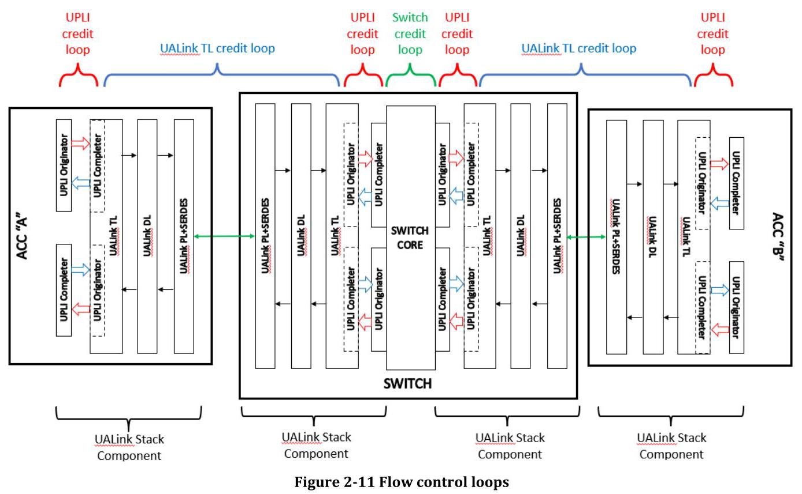
The figure above (Figure 2-11) illustrates the various flow control Credit loops in the full path between two Accelerators. UALink Protocol Level Interface Credit controls are used at each instance of the UALink Protocol Level Interface along the path. A distinct independent Credit loop mechanism from one UALink TL to the next UALink TL is used to pace Requests and Responses between the UALink TL's.
上图（图 2-11）展示了在两个加速器之间的完整路径中各种流量控制 Credit 环路。UAlink 协议层接口 Credit 控制用于路径上 UALink 协议层接口的每个实例。从一个 UALink TL 到下一个 UALink TL 的独立的 Credit 环路机制用于调节 UALink TL 之间的请求和响应。
2.7 Interface Signals
This section describes the signals that make up the UALink Protocol Level Interface and how transactions are conveyed on the various channels of the UALink Protocol Level Interface.
”中只提供中文翻译，不做任何解释。
我要翻译成简体中文，保留任何内联 Markdown，但这里似乎没有内联 Markdown，只是纯文本。没有数学公式、链接等。所以直接翻译。
翻译：本节描述了构成UALink协议层接口的信号，以及事务如何在UALink协议层接口的各个通道上传输。
需要保持术语一致，之前给出的摘要提到“UALink Protocol Level Interface”可能是“UALink协议层接口”。可以这样翻译。
直接给出翻译。本节描述构成UALink协议层接口的信号，以及事务如何在UALink协议层接口的各个通道上传输。
2.7.1 Signal Groups
The UALink Protocol Level Interface shall be organized in the following groups of signals:
UALink 协议层接口应按以下信号组进行组织：
- Common signals
- 通用信号
- UALink Protocol Level Interface Control signals
- UALink协议层接口控制信号
- Request Channel
- 请求通道
- Read Response/Data Channel
- 读取响应/数据通道
- Write Response Channel
- 写响应通道
- Originator Data Channel
- 发起方数据通道
In this specification, similar signals that occur in different channels may be referred to using a shorthand notation. For example, The ReqVld signal in the Request Channel, the RdRspVld signal in the Read Response/Data Channel, the WrRspVld signal in the Write Response Channel, and the OrigDataVld signal in the Originator Data Channel are collectively referred to by the following notation: *Vld. These signals shall indicate, in each Channel, whether a valid Beat of information is present on the Channel.
在本规范中，不同通道中出现的相似信号可使用简写符号来指代。例如，请求通道中的 ReqVld 信号、读响应/数据通道中的 RdRspVld 信号、写响应通道中的 WrRspVld 信号以及发起方数据通道中的 OrigDataVld 信号，统一用以下符号表示：*Vld。这些信号应在各自通道内指示是否存在有效的信息拍。
Other examples include:
其他示例包括：
*Data: (RdRspData signal in the Read Response/Data Channel; OrigData signal in the Originator Data Channel)
*数据：（RdRspData信号在读响应/数据通道中；OrigData信号在发起者数据通道中）
*CreditVld: (ReqCreditVld signal in the Request Channel; RdRspCreditVld signal in the Read Response/Data Channel; WrRspCreditVld signal in the Write Response Channel; OrigDataCreditVld signal in the Originator Data Channel).
*CreditVld：（请求通道中的 ReqCreditVld 信号；读响应/数据通道中的 RdRspCreditVld 信号；写响应通道中的 WrRspCreditVld 信号；发起方数据通道中的 OrigDataCreditVld 信号）。
2.7.2 Common Signals
Table 2-1 lists the signals that make up the Common Signal group. SOC-pervasive logic shall supply these to each UALink Protocol Level Interface.
表2-1列出了组成公共信号组的信号。SOC全片逻辑应向每个UALink协议层接口提供这些信号。
Table 2-1 Common Signals
表2-1 通用信号
| Name | Size | Description |
| UPLICIk | 1 | Interface clock, sourced from the SOC pervasive logic. UALink Protocol Level Interface signals are synchronous to this clock as well as the UPLIReset_N, *ClkReq, and *ClkAck signals. |
| UPLIReset_N | 1 | Interface reset signal, active LOW and is asserted and de-asserted and asserted synchronously to UPLIClk. |
The rising edge of UPLIClk shall determine the timing of information transfer across the interface. In general, all signals shall be stable prior to and immediately following the rising edge of UPLIClk.
UPLIClk 的上升沿应决定接口上信息传输的时序。通常，所有信号应在 UPLIClk 上升沿之前及紧随其后保持稳定。
UPLIReset_N shall be a negative-active signal (that is, the signal is asserted when the voltage level of the signal is low.) and may be asserted at any time.
UPLIReset_N 应为负有效信号（即当信号的电压电平为低时，该信号被断言），并可在任何时候被断言。
2.7.3 UPLI Transactions/Channel usage
A Transaction on the UALink Protocol Level Interface can contain a Read, Write, a Vendor Defined Command, a UPLI Write Message Request, a Vendor Defined UPLI Write Message Request, or an Atomic. These Transactions read from memory, write to memory, atomically modify memory while
UALink 协议层接口上的事务可以包含一个读、写、供应商定义的命令、UPLI 写消息请求、供应商定义的 UPLI 写消息请求或原子操作。这些事务从内存读取、向内存写入、原子性地修改内存，同时
UPLI Interface Definition and Operation Rules
UPLI接口定义与操作规则
Ultra Accelerator Link Consortium Inc. (UALink) - UALink_200 Rev 1.0 Specification optionally returning the original value in memory, or deliver a UPLI message, or performs a Vendor defined operation.
Ultra Accelerator Link Consortium Inc.（UALink）——UALink_200 Rev 1.0 规范，可选地返回内存中的原始值，或传递 UPLI 消息，或执行供应商定义的操作。
A UPLI transaction consists of multiple cycles (also called "Beats"), which shall occur in a specific order on a specific subset of the UPLI channels (Request, Read Response/Data, Write Response, Originator Data) in the UALink Protocol Level Interface depending on the type of the UPLI Transaction. Transactions shall be issued at the UPLI Originator and shall be processed at the UPLI Completer. The UPLI Completer shall return a Response to the Request on either the Read Response/Data Channel or the Write Response Channel, but not both. Which Channel is used to return a Response shall depends on the transaction type.
UPLI 事务由多个周期（也称“节拍”）组成，这些节拍必须根据 UPLI 事务的类型，在 UALink 协议层接口的特定 UPLI 通道子集（请求、读响应/数据、写响应、发起者数据）上以特定顺序出现。事务应在 UPLI 发起者处发出，并在 UPLI 完成者处处理。UPLI 完成者应在读响应/数据通道或写响应通道上但非两者同时，返回对请求的响应。使用哪个通道返回响应取决于事务类型。
Each UPLI transaction shall be initiated by a Request in the Request Channel indicated by the assertion of the Valid Signal (ReqVld) in the Request Channel (a Beat). A Request Beat shall contain other information about the Request involved with routing and identifying the Request such as the Port ID (ReqPortID), the Source Accelerator and Destination Accelerator physical IDs (ReqSrcPhysAccID and ReqDstPhysAccID), and a Transaction Tag to identify the Request from among other Requests (ReqTag). In addition, the Request Beat shall also contains information about the Request such as the Address (ReqAddr), the Command Type (ReqCmd), an indication of the number of doublewords to transfer (ReqLen), and attributes about the Request (ReqAttr) among other fields.
每个UPLI事务应当由请求通道中的一个请求发起，其标志是请求通道中有效信号（ReqVld）的置位（一拍）。一个请求拍应包含与该请求相关的其他信息，这些信息用于路由和标识该请求，例如端口ID（ReqPortID）、源加速器和目标加速器的物理ID（ReqSrcPhysAccID 和 ReqDstPhysAccID），以及一个用于将该请求与其他请求区分开的事务标签（ReqTag）。此外，请求拍还应包含有关该请求的信息，例如地址（ReqAddr）、命令类型（ReqCmd）、指示要传输的双字数（ReqLen）、请求的属性（ReqAttr）以及其他字段。
The data returned for a Read Transaction shall be conveyed from the Completer to the Originator as data Beats on the Read Response/Data Channel along with fields providing additional information about the Read Response. This information shall include the status of the Read Transaction (RdRspStatus), which Beat of data is being returned in this beat (RdRspOffset), the total number of Data Beats in the Response (RdRspNumBeats), whether the Beat has been corrupted (RdRspDataError), and if the current Beat is the last Beat to be transmitted (RdRspLast), A Read Response may contain one to four Data Beats.
读事务返回的数据应由完成端通过读响应/数据通道以数据拍的形式传送给发起端，同时附带提供读响应附加信息的字段。这些信息应包括读事务的状态（RdRspStatus）、本拍返回的是哪一拍数据（RdRspOffset）、响应中数据拍的总数（RdRspNumBeats）、该拍是否已损坏（RdRspDataError）以及当前拍是否为要传输的最后一拍（RdRspLast）。一个读响应可包含一至四个数据拍。
Read Response Beats shall occur on the Read Response/Data Channel after the Read Request has been received and processed by the Final Completer.
读响应节拍应当在最终完成器接收并处理读请求之后，在读响应/数据通道上发生。
For Write Transactions, the Data shall be conveyed from the Initial Originator to the Final Completer as one to four Data Beat(s) on the Originator Data Channel, each Beat shall Contain the Port ID (OrigPortID) field to provide partial routing information. The first Originator Data Beat for a given transaction shall occur in the same cycle as the Request for the Write. This shall allow the Originator Data beats to inherit the remaining routing and identifying information (ReqSrcPhysAccID, ReqDstPhysAccID, ReqTag) from the Write Request in the Request Channel as well as the number of Data Beats in the Transaction (ReqNumBeats).
对于写事务，数据应作为一到四个数据节拍在发起者数据通道上从初始发起者传送到最终完成者，每个节拍均应包含端口ID（OrigPortID）字段以提供部分路由信息。给定事务的第一个发起者数据节拍应与该写操作的请求在同一周期内发生。这应允许发起者数据节拍从请求通道中的写请求继承其余的路由和识别信息（ReqSrcPhysAccID、ReqDstPhysAccID、ReqTag）以及事务中的数据节拍数（ReqNumBeats）。
A Write Request Beat shall also include information such as a set of Byte Enables to indicate the bytes to be updated in memory (OrigDataByteEn), which Beat of Data is being sent in this Beat (OrigDataOffset), whether this Beat has been corrupted (OrigDataError), and if the current Beat is the last Beat to be transmitted (OrigDataLast).
一个写请求拍还应包括一些信息，例如一组字节使能，用于指示内存中要更新的字节（OrigDataByteEn），当前拍正在发送的是数据的哪一拍（OrigDataOffset），该拍是否已损坏（OrigDataError），以及当前拍是否为要传输的最后一拍（OrigDataLast）。
In the UALink Protocol Level Interface, an Atomic Request can either return the initial value of memory before the modification and atomically modify memory (referred to as an AtomicR command) or only perform the modification of memory (referred to in UPLI as an AtomicNR command).
在UALink协议级接口中，原子请求可以返回修改前内存的初始值并原子地修改内存（称为AtomicR命令），或者仅执行内存修改（在UPLI中称为AtomicNR命令）。
In addition, all atomic commands (AtomicR and AtomicNR) shall require one or two operands to control the atomic update of memory. For example, an "Atomic add" would require one parameter to specify the value to Atomically add to memory location(s) and a "Compare-and-Swap" would require two parameters: one for the value to initially compare the memory location to, and a value
此外，所有原子命令（AtomicR 和 AtomicNR）应要求一个或两个操作数来控制内存的原子更新。例如，“Atomic add” 需要一个参数来指定要原子性地加到内存位置的值，而 “Compare-and-Swap” 则需要两个参数：一个用于初始比较内存位置的值，以及一个值
Ultra Accelerator Link Consortium Inc. (UALink) - UALink_200 Rev 1.0 Specification to swap into the memory location if the initial comparison matched. The exact semantics of the various AtomicR/AtomicNR Commands and the number of parameters they need is not specified by this Specification; however all Atomic Commands shall be limited to no more than two parameters.
Ultra Accelerator Link Consortium Inc. (UALink) - UALink_200 Rev 1.0 规范，用于在初始比较匹配时交换到内存位置。各种 AtomicR/AtomicNR 命令的确切语义及其所需参数数量未由本规范规定；但所有原子命令应限制为不超过两个参数。
In the case of an Atomic Request for either an AtomicR Command or an AtomicNR Command, the Transaction proceeds as described above for a Write Request with the exception that the OrigData Channel shall be used to transfer operand data for the Atomic instead of transferring write data. For an AtomicNR Command, the Completer shall provide a Response on the Write Response Channel. For an AtomicR command, the Completer shall return the values initially read from memory as data on the Read Response/Data Channel along with status information about the transaction.
对于 AtomicR 命令或 AtomicNR 命令的原子请求，事务按照上文对写请求的描述进行，不同之处在于应使用 OrigData 通道传输原子的操作数数据，而非传输写数据。对于 AtomicNR 命令，完成者应在写响应通道上提供响应。对于 AtomicR 命令，完成者应将最初从内存读取的值作为数据在读响应/数据通道上返回，并附上事务的状态信息。
2.7.4 Request Channel
An Originator shall use the Request Channel to request that data be written to or read from the system memory space. Table 2-2, Request Channel Signals, lists the signals that shall make up a Request Channel.
发起方应使用请求通道来请求将数据写入系统内存空间或从中读取数据。表2-2“请求通道信号”列出了构成请求通道的信号。
The column labeled Driver indicates whether the Originator or the Completer drives the signal.
标有
Driver的列指示是发起方（Originator）还是完成方（Completer）驱动该信号。
Table 2-2 Request Channel Signals
表 2-2 请求通道信号
| Name | Size (bits) | Driver | Description |
| Request Channel Information and Control Signals These signals are Time Division Multiplexed (TDMed) according to ReqPortID value. | |||
| ReqVld | 1 | Originator | Request valid. This signal indicates that the Originator is presenting valid information (a Beat) on this channel. |
| ReqPortID | 2 | Originator | Request Port ID. Where the Originator drives the Request Channel to a TL, indicates the Port associated with that TL that the Request Channel Beat is to be presented on. For all Originators, ReqPortID indicates the TDM cycle for the Request Channel. |
| ReqASI | 2 | Originator | Request Address Space Identifier. For any Request that is not a UPLI Write Message Request or Vendor Defined Command, identifies the address space. For a UPLI Write Message Request, this field is either Reserved or specifies a specific function for the type of the UPLI Write Message Request (the type of UPLI Write Message is specified in the ReqMetaData field) and for a Vendor Defined Command this signal is vendor defined. |
| ReqAuthTag | 64 | Originator | Request Authorization Tag. Authorization Tag for the Request. See the Chapter on Security for more details about this signal and Authorization. When Authorization is not active for the Request or ReqVld is de-asserted, this field shall be driven to zero. |
| ReqSrcPhysAccID | 10 | Originator | Request Source Physical Accelerator ID. Physical Accelerator ID for the Source Accelerator of the Request (i.e. the Accelerator with the Initial UPLI Originator that initiated the Request). |
| ReqDstPhysAccID | 10 | Originator | Request Destination Physical Accelerator ID.. Physical Accelerator ID for the Destination Accelerator of the Request (i.e. the Accelerator with the Final UPLI Completer that will satisfy the Request |
| ReqTag | 11 | Originator | Request Tag. This field is the Transaction Tag used to uniquely identify each outstanding Request (tag shared across all command types) from the Source Accelerator UALink Port within the Station that issued the Request. |
| ReqNumBeats | 2 | Originator | Request Number of Data Beats. Indicates the number of Data Beats transferred on the OrigData Channel for this Request for a Write, Vendor Defined Write class Command, Atomic, Vendor Defined Atomic class Command or UPLI Write Message. The number of Data Beats transferred is (ReqNumBeats+1). This field is intended to relieve Switches of the need to compute the number of Beats transferred on the OrigData Channel for the Request from other fields in the interface. Switches shall rely on this field to determine the number of Beats for Requests transferred on the OrigData Channel. This field shall only valid for Requests with ReqCmd[5] = 1 (Atomics, Writes, Vendor Defined Write class Commands, UPLI Write Message Requests, and Vendor Defined UPLI Write Message Requests). For Requests with ReqCmd[5] = 0 that are not Read class Vendor Defined Commands (Reads), this field shall be driven to 0 . For Requests that are Read class Vendor Defined Commands, this signal shall be valid and may be, but is not required to be, used to compute the number of Data Beats returned on the Read Response. |
| ReqAddr | 57 | Originator | Request Address. For any Request that is not a UPLI Write Message Request, Vendor Defined Command, or Vendor Defined UPLI Write Message, this field shall specify the Request address. For a UPLI Write Message Request, this field is either Reserved or specifies control information for the UPLI Writt Message (the type of the UPLI Write Message shall be specified in the ReqMetadata field). Unless the type of UPLI Write Message defines this field as carrying an address, this field does not specify an address for the UPLI Write Message. UPLI Write Message data is issued as one, two, three, or four 64-byte beats of data without regard to the value in the ReqAddress field. For a Vendor Defined Command, this signal is vendor defined. For Vendor |
| Name | Size (bits) | Driver | Description |
| Defined Commands, Vendor Defined UPLI Write Messages, this field is Vendor Defined. | |||
| ReqCmd | 6 | Originator | Request command. This field indicates the Command for this Request and is detailed below. |
| ReqLen | 6 | Originator | Request Length. For any Request that is not a UPLI Write Message, Vendor Defined UPLI Write Message or Vendor Defined Command, this field indicates number of doublewords of data to be transferred by the transaction Request. The requested transfer size is (ReqLen + 1) doublewords. For a WriteFull Request , this field shall indicate a transfer of either 64, 128, 192, or 256 bytes corresponding to one, two, three or four 64-byte data beats. For a UPLI Write Message Request, this field is either Reserved or specifies a specific function for the type of the UPLI Write Message Request (the type of UPLI Write Message is specified in the ReadMetaData field). For a Vendor Defined Command or Vendor Defined UPLI Write Message Request, this signal is vendor defined. |
| ReqAttr | 8 | Originator | Request Attributes. For any Request that is not a UPLI Write Message, a Vendor Defined UPLI Write Message, or a Vendor Defined Command, this field shall specify extended transaction attributes to be used at the Destination Accelerator. The encoding of this field depends on the Request and is detailed below. For a UPLI Write Message Request, this field is either Reserved or specifies a specific function for the type of the UPLI Write Request (the type of the UPLI Write Message is defined by the ReqMetadata field). For a Vendor Defined Command or Vendor Defined UPLI Write Message, this field is vendor defined. |
| ReqMetaData | 8 | Originator | For any Request that is not a UPLI Write Message Request, Vendor Defined UPLI Write Message Request or a Vendor Defined Command, this field shall be an implementation defined control information field conveyed to the Final Completer with the Request. For a UPLI Write Message or Vendor Defined UPLI Write Message, this field specifies the type of the UPLI Write Message as described below. For a Vendor Defined Command, this field is Vendor Defined |
| ReqVC | 2 | Originator | Request Virtual Channel. Specifies the Virtual Channel of the Request. In UALink 1.0, this field is informational only to the Switch with the exception that this value is returned to the Originator in the Credit Return signals. The Switch has one virtual channel and passes this field through to the Destination Accelerator unchanged. |
| ReqPool | 1 | Originator | Request Pool. Specifies whether the Request was issued using a Pool Credit (ReqPool = 1) or a Virtual Channel Credit (ReqPool = 0). |
| Request Channel Credit Return signals | |||
| These signals are not Time Division Multiplexed (TDMed). A Credit or Credits for any port may be returned on any cycle. | |||
| ReqCreditInitDone | 4 | Completer | Request Credit Initialization Done. When Asserted, indicates to Originator that the initial Credit release for the Port associated with the individual signal is complete (ReqCreditInitDone[2] indicates Port 2 is complete). The individual "done" signals can be asserted independently and once asserted remain asserted until the interface is reset or powered off. |
| ReqCreditVld | 4 | Completer | Request Credit Valid. Indicates a Credit or Credits is being released to the Originator. Credits are per port and a Station may have 1, 2 or 4 ports. ReqCreditVld[n] corresponds to Port[n]. Credits can be released on more than one port simultaneously. |
| ReqCreditPool | 4 | Completer | Request Credit Pool. Indicates the type of Credit indicated on ReqPool for the Request that consumed the Pool or Virtual Channel Credit or Credits being released. If '0', the Credit or Credits being released is a Virtual Channel Credit and if '1', the Credit or Credits released is a Pool Credit. The ReqVC value for the Request corresponding to the returned Credit or Credits is placed on the appropriate ReqCreditPort[0,1,2,3]VC signal. |
| ReqCreditPort0VC | 2 | Completer | Request Credit Port 0 Virtual Channel. Indicates the Virtual Channel indicated on ReqVC for the Request that consumed the Pool or Virtual Channel Credit or Credits being released for Port0. Valid when ReqCreditVld[0] is asserted. |
| ReqCreditPort1VC | 2 | Completer | Request Credit Port 1 Virtual Channel. Indicates the Virtual Channel indicated on ReqVC for the Request that consumed the Pool or Virtual Channel Credit or Credits being released for Port1. Valid when ReqCreditVld[1] is asserted. |
| ReqCreditPort2VC | 2 | Completer | Request Credit Port 2 Virtual Channel. Indicates the Virtual Channel indicated on ReqVC for the Request that consumed the Pool or Virtual Channel Credit or Credits being released for Port2. Valid when ReqCreditVld[2] is asserted. |
UPLI Interface Definition and Operation Rules
UPLI 接口定义与操作规则
| Name | Size (bits) | Driver | Description |
| ReqCreditPort3VC | 2 | Completer | Request Credit Port 3 Virtual Channel. Indicates the Virtual Channel indicated on ReqVC for the Request that consumed the Pool or Virtual Channel Credit or Credits being released for Port3. Valid when ReqCreditVld[3] is asserted. |
| ReqCreditPort0Num | 2 | Completer | Request Credit Port 0 Number of Credits. Indicates the number of Credits being returned for Port0 (up to 4, ReqCreditPort0Num+1). Only valid when ReqCreditVld[0] is asserted. |
| ReqCreditPort1Num | 2 | Completer | Request Credit Port 1 Number of Credits. Indicates the number of Credits being returned for Port0 (up to 4, ReqCreditPort1Num+1). Only valid when ReqCreditVld[1] is asserted. |
| ReqCreditPort2Num | 2 | Completer | Request Credit Port 2 Number of Credits. Indicates the number of Credits being returned for Port0 (up to 4, ReqCreditPort2Num+1). Only valid when ReqCreditVld[2] is asserted. |
| ReqCreditPort3Num | 2 | Completer | Request Credit Port 3 Number of Credits. Indicates the number of Credits being returned for Port0 (up to 4, ReqCreditPort3Num+1). Only valid when ReqCreditVld[3] is asserted. |
| Request Channel Parity Signals | |||
| ReqVldParity | 1 | Originator | Request Valid Parity. Even parity across ReqVld. Checked every cycle. |
| ReqAddrParity | 1 | Originator | Request Address Parity. Even Parity across ReqAddr. Checked only when RegVld is asserted. |
| ReqParity | 1 | Originator | Request Parity. ReqParity provides even parity over ReqTag, ReqLen, ReqAttr, ReqCmd, ReqMetaData, ReqVC, ReqSrcPhysAccID, ReqDstPhysAccID, ReqPortID, ReqNumBeats. Checked only when ReqVld is asserted. |
| ReqCreditVldParity | 1 | Completer | Request Credit Valid Parity. Even parity across ReqCreditVld. Checked every cycle. |
| ReqCreditParity | 1 | Completer | Request Credit Parity. Even parity across ReqCreditPort0VC, ReqCreditPort1VC, ReqCreditPort2VC, ReqCreditPort3VC, ReqCreditPort0Num, ReqCreditPort1Num, ReqCreditPort2Num, ReqCreditPort3Num, and ReqCreditPool. Checked in beats where RegCreditVld is non-zero. |
An Originator Device shall use the Request Channel to request the transfer of data to or from the system memory space. The amount of data requested shall be no more than 256 bytes and shall not cross a 256-byte boundary. Up to 64 bytes of data can be transferred in one clock cycle, referred to as a Beat. Transfers larger than 64 bytes are transferred in a series of Beats (also referred to as a Burst).
发起者设备应使用请求通道来请求向系统存储器空间传输数据或从系统存储器空间传输数据。请求的数据量不应超过256字节，且不应跨越256字节边界。在一个时钟周期内最多可传输64字节数据，此传输单位称为一个节拍（Beat）。超过64字节的传输以一系列节拍（亦称为突发，Burst）的形式进行。
2.7.4.1 ReqASI
The use of the ReqASI (Request Address Space Identifier) field shall be defined by the Accelerators and is implementation dependent. A possible use of the ReqASI field is to identify Requests that are in-node communication vs cross-node communication. This allows the Accelerators, for example, to identify the different sets of Requests and process translation, protection restrictions, maximum address sizes, etc. differently for the different sets of Requests.
ReqASI（请求地址空间标识符）字段的使用应由加速器定义，且取决于具体实现。ReqASI字段的一个可能用途是识别请求是节点内通信还是跨节点通信。例如，这使得加速器可以识别不同的请求集合，并对不同的请求集合分别处理地址转换、保护限制、最大地址尺寸等。
2.7.4.2 ReqTag
Each Originating Device may not reuse a ReqTag (Request Tag) until the last Beat of the Response has been received. Request Tags shall be unique per port.
每个发起设备在收到响应的最后一个Beat（拍）之前，不得重用ReqTag（请求标签）。请求标签应在每个端口上保持唯一。
2.7.4.3 ReqAddr
The ReqAddr (Request Address) field shall provide the byte address of the first doubleword being transferred.
ReqAddr（请求地址）字段应提供被传输的第一个双字的字节地址。
2.7.4.4 ReqLen
The ReqLen (Request Length) field shall specify the number of doublewords to be transferred. The transfer size indicated shall be (ReqLen + 1).
ReqLen（请求长度）字段应指定要传输的双字数。指示的传输大小应为 (ReqLen + 1)。
2.7.4.5 ReqAttr
ReqAttr (Request Attributes) shall provide specific attribute information about the Transaction Request. Encoding shall depend on the type of the Request as shown in the following tables.
ReqAttr（请求属性）应提供有关事务请求的特定属性信息。编码应取决于请求的类型，如下表所示。
Table 2-3 Read, ReqAttr Usage
表2-3 读取、ReqAttr 使用
| Bit Range | Sub-field |
| ReqAttr[7:4] | Byte enables, last DW. Ignored if the last DW is also the first DW. |
| ReqAttr[3:0] | Byte enables, first DW |
Table 2-4 Atomic Request ReqAttr Usage
表2-4 原子请求ReqAttr用法
| Bit Range | Sub-field |
| ReqAttr[7:4] | Operation Type (OpType[3:0]). |
| ReqAttr[3:2] | Operand Size (OpSize). |
| ReqAttr[1] | Reserved |
| ReqAttr[0] | Operation Type (OpType[4]). |
The Operation Type for the atomic read-modify-write is encoded in OpType[4:0] (ReqAttr[0] concatenated with ReqAttr[7:4]). The precise semantics for the read-modify-write and whether the read-modify-write uses one or two operations is implementation defined.
原子读-改-写的操作类型编码在 OpType[4:0]（ReqAttr[0] 与 ReqAttr[7:4] 拼接）中。读-改-写的精确语义以及该操作使用一个还是两个操作，由实现定义。
The operand size OpSize is encoded in ReqAttr[3:2] field as shown below.
操作数大小 OpSize 在 ReqAttr[3:2] 字段中编码，如下所示。
Table 2-5 Atomic OpSize Encoding
表2-5 原子操作大小编码
| OpSize | Operand Size |
| 00b | 32 bits |
| 01b | 64 bits |
| 10b | 16-bits |
| 11b | 8-bits |
For Writes, the ReqAttr field may be used in an implementation specific manner to convey additional metadata for writes.
对于写入操作，ReqAttr字段可按特定实现方式用于传递写入的附加元数据。
For Vendor Defined Commands, the ReqAttr field shall be Vendor Defined.
对于供应商定义的命令，ReqAttr 字段应为供应商定义。
For UPLI Write Message Requests and Vender Defined UPLI Write Message Requests, the ReqAttr field shall be defined as shown below in Table 2-7.
对于 UPLI 写消息请求和供应商定义的 UPLI 写消息请求，ReqAttr 字段应按下面表 2-7 所示定义。
2.7.4.6 ReqCmd
The ReqCmd (Request Command) field shall indicate the Command for this Request. When ReqCmd[5] is 1b, the Originator shall transfer data on an Originator Data Channel. For such Commands, in addition to obtaining a Credit from the Request Channel flow control to issue the Request, one or more Credits shall be obtained for the Originator Data Channel.
ReqCmd（请求命令）字段应指示该请求的命令。当 ReqCmd[5] 为 1b 时，发起者应在发起者数据通道上传输数据。对于此类命令，除了从请求通道流控获取一个信用以发出请求之外，还应为一个或多个发起者数据通道获取一个或多个信用。
The legal Command types and legal encoding for the ReqCmd field of the Request Channel is shown in Table 2-6, below.
请求通道的 ReqCmd 字段的合法命令类型及合法编码如下表 2-6 所示。
The column labeled "Data Channels" lists the Data Channel or Channels utilized by the command and for what purpose. The Resp Chan column indicates whether the Response to the command is returned to the Originator on a Read Response/Data Channel or a Write Response Channel.
标有“数据通道”(Data Channels)的列列出了该命令所使用的一个或多个数据通道及其用途。响应通道(Resp Chan)列指示该命令的响应是通过读响应/数据通道还是写响应通道返回给发起方。
ReqCmd [5] = 1 indicates that the command will transfer data on an Originator Data Channel.
ReqCmd [5] = 1 表示该命令将在发起方数据通道上传输数据。
- ReqCmd [5:4] = 00 indicates Read type Requests (i.e. Requests that do not have data or byte masks with the Request).
- ReqCmd [5:4] = 00 表示读取类型请求（即请求本身不携带数据或字节掩码的请求）。
Ultra Accelerator Link Consortium Inc. (UALink) - UALink_200 Rev 1.0 Specification
超加速器链路联盟公司（UALink）——UALink_200 版本 1.0 规范
- ReqCmd [5:4] = 10 indicates Write type Requests (i.e. Requests that provide data and possibly byte masks with the Request).
- ReqCmd [5:4] = 10 表示写类型请求（即，随请求一同提供数据并可能提供字节掩码的请求）。
- ReqCmd [5:4] = 11 indicates Atomic type Requests (i.e. Requests that provide Operand Data and byte masks with the Request).
- ReqCmd [5:4] = 11 表示原子类型请求（即请求中一并提供操作数数据和字节掩码的请求）。
Table 2-6 Commands
表 2-6 命令
| UPLI Command | ReqCmd | Data Channels | Resp Chan | Description |
| Reserved | 000000b/00h - 00-0010b/02h | |||
| Read | 00 0011b/03h | Rd Rsp/Data (read data) | Read | Read. I/O Coherent read, up to 256 bytes (4 beats). |
| Reserved | 00 0100b/04h - 00 0111b/07h | |||
| Reserved for Vendor Defined Commands | 00 1000b/08h - 00 1111b/0Fh | Command encodings reserved for Read class Vendor Defined Commands. | ||
| Reserved | 010000b/10h - 10-0111b/27h | |||
| Write | 10 1000b/28h | Orig Data (write data) | Write | Write. I/O Coherent write, up to 256 bytes (4 beats). |
| WriteFull | 10 1001b/29h | Orig Data (write data) | Write | WriteFull. I/O Coherent store of one or more full (i.e. all Byte Enables for all Beats are asserted) Data Beats. |
| UPLI Write Message | 10 1010b/2Ah | Orig Data (write data) | Read or Write | UPLI Write Message, issues a UPLI message from the Source Accelerator Originator to the Destination Accelerator Completer. The type of the UPLI message is encoded in the ReqMetaData field. Depending on the type of UPLI message, the Response is returned on the Read or Write Response Channel. |
| Reserved | 10 1011b/2Bh - 10-1011b/2Bh | |||
| Reserved for Vendor Defined Commands | 10-1100b/2Ch - 10-1111b/2Fh | Command encodings reserved for Write class Vendor Defined Commands. | ||
| AtomicR | 110000b/30h | Rd Rsp/Data (returned read data) OrigData (atomic operands) | Read | Atomic Return Data. I/O Coherent atomic read-modify-write with data returned. |
| Reserved | 11-0001b/31h | |||
| AtomicNR | 11 0010b/32h | OrigData (atomic operands) | Write | Atomic No-Return Data. I/O Coherent atomic read-modify-write with no data returned. |
| Reserved | 11-0011b/33h - 11-0110b/3Bh | |||
| Reserved for Vendor Defined Commands. | 11-1100b/3Ch - 11-1111b/3Fh | Command encodings reserved for Atomic classVendor Defined Commands. |
Reads
The Read Command shall be the following:
读取命令应为：
- Read
- 读取
Ultra Accelerator Link Consortium Inc. (UALink) - UALink_200 Rev 1.0 Specification
超级加速器链路联盟 (UALink) - UALink_200 修订版 1.0 规范
Originators shall perform Read Requests to read data. Requests shall be up to 256 bytes in size and shall not cross a 256-byte boundary. Read Requests shall be considered complete on UPLI when the read Response is returned.
发起方应执行读请求以读取数据。请求大小最多为256字节，且不得跨越256字节边界。在UPLI上，当读响应返回时，读请求应视为完成。
A Read Request shall participate in the local coherence protocol in the Destination Accelerator and shall return a coherent value for the read from that Accelerator.
读请求应参与目标加速器中的本地一致性协议，并应从该加速器返回读取的一致性值。
Writes
The Write Commands shall be the following:
写命令应如下所示：
- Write
- 写入操作
- WriteFull
- WriteFull
Originators shall perform Writes to write data to system memory on the destination Accelerator. Data shall be sent on the Originator Data Channel with valid bytes indicated by the OrigDataByteEn field. Write Requests shall be up to 256 bytes (4 OrigData beats), and shall not cross a 256-byte boundary.
发起方应执行写操作以将数据写入目标加速器上的系统内存。数据应通过发起方数据通道发送，有效字节由 OrigDataByteEn 字段指示。写请求最大为 256 字节（4 个发起方数据节拍），且不得跨越 256 字节边界。
WriteFull Requests shall be Writes that are restricted to being 64, 128, 192, or 256 bytes in length and shall have all Byte Enables active for all the bytes referenced by the WriteFull Request (this allows the Transaction Layer to not transmit the Byte Enables for the write and have the TL at the Destination Accelerator reconstruct the Byte Enables saving link bandwidth).
WriteFull 请求应为长度限于 64、128、192 或 256 字节的写操作，并且必须为 WriteFull 请求所涉及的所有字节激活所有字节使能（这使得事务层无需传输该写入的字节使能，而由目标加速器的事务层重构字节使能，从而节省链路带宽）。
Write Requests and WriteFull Requests shall participate in the local coherence protocol in the Destination Accelerator and shall update memory and those caches, if any, necessary to perform a coherent update at the Destination Accelerator.
写请求（Write Requests）和写全请求（WriteFull Requests）应参与目标加速器中的本地一致性协议，并应更新内存以及为目标加速器中执行一致性更新所必需的那些缓存（若有）。
Atomics
The Atomics Commands are the following:
原子命令如下：
- AtomicR
- AtomicR
- AtomicNR
- AtomicNR
Originators shall issue Atomic Commands to perform atomic (at the Completer) read-modify-write operations. The AtomicR command shall performs an atomic read-modify-write operation and shall return the initial value read from memory. The AtomicNR Command performs an atomic read-modify-write operation in memory and shall not return the initial value read from memory. The exact semantics of how memory is modified and whether the Atomic command requires one or two operands is implementation specific and not defined in this specification.
发起方应发出原子命令，以在完成方执行原子性的读-修改-写操作。AtomicR命令应执行原子性的读-修改-写操作，并应返回从内存读取的初始值。AtomicNR命令在内存中执行原子性的读-修改-写操作，且不应返回从内存读取的初始值。关于内存如何修改以及原子命令需要单操作数还是双操作数的具体语义，属于实现细节，本规范不予定义。
An Atomic Request shall participate in the local coherence protocol in the Destination Accelerator and shall update memory and whatever caches necessary to perform a coherent update at the Destination Accelerator. If the Atomic is an AtomicR, a coherent value for the location(s) before the update shall be returned.
原子请求应参与目标加速器内的本地一致性协议，并应更新内存以及任何必要的缓存，以在目标加速器中执行一致性更新。如果该原子操作为 AtomicR，则应返回更新前该位置的一致性值。
UPLI Write Messages
The UPLI Write Messages shall consist of the following command:
UPLI 写消息应由以下命令组成：
- UPLI Write Message
- UPLI 写消息
The UPLI Write Message shall be a message from the UPLI Originator in the Source Accelerator to the UPLI Completer in the Destination Accelerator. This message shall be conveyed as a Request with semantics similar to an Atomic. The UPLI Write Message shall convey a one to four 64-byte Data Beat payload on the OrigData Channel that may contain no content, the ReqMetaData field shall be used to signify which specific UPLI Write Message type the message is (up to 256 choices).
UPLI 写消息应是一条从源加速器中的 UPLI 发起方发往目标加速器中的 UPLI 完成方的消息。该消息应作为一条语义类似于原子操作的请求进行传送。UPLI 写消息应在 OrigData 通道上传送一个至四个可能不包含实质内容的 64 字节数据拍有效载荷；ReqMetaData 字段应用于标识该消息具体为何种 UPLI 写消息类型（最多 256 种选择）。
Ultra Accelerator Link Consortium Inc. (UALink) - UALink_200 Rev 1.0 Specification
超加速器链路联盟股份有限公司（UALink）—— UALink_200 Rev 1.0 规范
For each UPLI Write Message the required Response for the UPLI Write Message shall be conveyed on either the Read Response/Data Channel or the Write Response Channel based on the UPLI Write Message type (similar to how AtomicR and AtomicNR requests are handled). If the Response to the Write UPLI Message is conveyed on the Read Response/Data Channel, the number of 64-byte Data Beats in the Response is specific to the type of the UPLI Write Message, may vary from a minimum of one Beat to four Beats, and does not have to match the number of 64-byte Data Beats transferred with the UPLI Write Message Request. A set of the values of the ReqMetaData field (0xF0-0xFF) for a UPLI Write Message Request specify Vendor Defined UPLI Write Message types.
对于每个 UPLI 写消息，所需的响应应根据 UPLI 写消息类型，在读响应/数据通道或写响应通道上传送（类似于如何处理 AtomicR 和 AtomicNR 请求）。如果对写 UPLI 消息的响应在读响应/数据通道上传送，响应中 64 字节数据节拍的数量特定于 UPLI 写消息的类型，可能从最少一个节拍到四个节拍不等，且不必与 UPLI 写消息请求传输的 64 字节数据节拍数量匹配。UPLI 写消息请求的 ReqMetaData 字段的一组值（0xF0-0xFF）指定了供应商定义的 UPLI 写消息类型。
The semantic effect(s), if any, in the Source Accelerator or Destination Accelerator due the UPLI Write Message or Vendor Defined UPLI Write Message and/or the associated Response are specific to the particular type of the UPLI Write Message or Vendor Defined UPLI Write Message.
UPLI 写消息或厂商定义的 UPLI 写消息和/或相关响应在源加速器或目的加速器中可能产生的语义效应（如有）特定于该 UPLI 写消息或厂商定义的 UPLI 写消息的具体类型。
Vendor Defined Commands
The UPLI Interface defines three different classes of Vendor Defined Commands (VDCs): Read class VDCs (ReqCMD = 0x08h-0x0Fh), Write class VDCs (ReqCMD = 0x2Ch-0x2Fh), and Atomic class VDCs (ReqCMD = 0x3Ch-0x3Fh). For each Vendor Defined Command, the following UPLI Request Interface signals shall be Vendor defined: ReqASI, ReqAddr, ReqLen, ReqAttr, and ReqMetaData. The remaining signals in the UPLI Request Interface shall retain the same functionality as for a non-VDC.
UPLI 接口定义了三种不同类别的供应商定义命令（VDC）：读类 VDC（ReqCMD = 0x08h–0x0Fh）、写类 VDC（ReqCMD = 0x2Ch–0x2Fh）和原子操作类 VDC（ReqCMD = 0x3Ch–0x3Fh）。对于每一条供应商定义命令，以下 UPLI 请求接口信号应由供应商定义：ReqASI、ReqAddr、ReqLen、ReqAttr 和 ReqMetaData。UPLI 请求接口中的其余信号应保持与非 VDC 情况相同的功能。
The number of UPLI Data Beats transferred on the OrigData channel for a Write class or for an Atomic Class Vendor Defined Request shall be controlled solely by the value of the ReqNumBeats signal in the Vendor Defined Request.
对于写类或原子类厂商定义请求，在 OrigData 通道上传输的 UPLI 数据节拍数量应仅由厂商定义请求中的 ReqNumBeats 信号值控制。
For a Read class Vendor Defined Command or for an Atomic class Vendor Defined Command that returns data, the number of Beats of data returned in the associated Read Response shall be an implementation specific function of signals (possibly including ReqCMD and ReqNumBeats) in the Vendor Defined Command. The number of Data Beats returned in the associated Read Response shall be controlled solely by the RdRspNumBeats signal.
对于返回数据的读类供应商定义命令或原子类供应商定义命令，在相关读响应中返回的数据节拍数量应为供应商定义命令中信号（可能包括ReqCMD和ReqNumBeats）的实现特定函数。相关读响应中返回的数据节拍数量应仅由RdRspNumBeats信号控制。
The layout and contents of the Data Beats for Vendor Defined Commands are vendor defined.
供应商定义命令的数据节拍（Data Beats）的布局和内容由供应商定义。
Any VDC that accesses memory shall be issued on the same port on the Accelerator that the non-VDCs that have an address within the same 256-byte memory region accessed by the VDC.
任何访问内存的 VDC 都应通过加速器上的同一端口发出，该端口也是地址位于该 VDC 所访问的同一 256 字节内存区域内的非 VDC 所使用的端口。
No VDC shall access and/or alter more than one 256-byte region of memory.
任何 VDC 不得访问和/或更改超过一个 256 字节的内存区域。
Read class VDCs shall not issue Data Beat(s) on the OrigData channel and the Response for a Read class VDR shall be returned on the Read Response channel.
读类 VDC 不得在发起者数据通道上发出数据节拍，读类 VDR 的响应应在读响应通道上返回。
Write class VDCs shall issue Data Beat(s) (with associated Byte Enables) on the OrigData Channel and the Response for a Write class VDC shall be returned on the Write Response channel.
写类 VDC 应在 OrigData 通道上发出数据节拍（及其关联的字节使能），且写类 VDC 的响应应在写响应通道上返回。
Atomic class VDCs shall issue Data Beat(s) on the OrigData Channel and the Response for an Atomic VDC shall be returned on either the Read Response Channel or the Write Response Channel.
原子类VDC应在发起方数据通道上发送数据节拍，且原子VDC的响应应在读响应通道或写响应通道上返回。
2.7.4.7 ReqMetaData
For Requests that are not UPLI Write Message Requests, the ReqMetaData field shall convey implementation defined control information.
对于非 UPLI Write Message 请求的请求，ReqMetaData 字段应传递实现定义的控制信息。
For a UPLI Write Message Request, the ReqMetadata field shall indicate the particular type (up to 256) of the UPLI Write Message. The following table indicates the legal UPLI Write Message Request types, how the various fields that may be Reserved or use for the UPLI Write Message and defined for each type, and the number of 64-byte OrigData Beats are sent with the Request:
对于 UPLI 写消息请求，ReqMetadata 字段应指明 UPLI 写消息的具体类型（最多 256 种）。下表列出了合法的 UPLI 写消息请求类型、可能为保留或用于 UPLI 写消息的各字段如何定义，以及随请求发送的 64 字节 OrigData Beat 的数量：
Table 2-7 UPLI Write Message Request Types
表 2-7 UPLI 写消息请求类型
| ReqMetaData value | Type | ReqAddr | ReqASI | ReqAttr | #Write Beats/ Content | Response Channel/ #Beats if Read |
| 0x00 | NOP | Reserved | Reserved | Reserved | 1 / Null (all zeros) | Write |
| 0x01 | KeyRollMsg.ReqChannel | Reserved | Reserved | Reserved | 1 / Null (all zeros) | Write |
| 0x02 | KeyRollMsg.RdRspChannel | Reserved | Reserved | Reserved | 1 / Null (all zeros) | Read |
| 0x03 | KeyRollMsg.WrRspChannel | Reserved | Reserved | Reserved | 1 / Null (all zeros) | Write |
| 0x04-0xEF | Reserved | |||||
| 0xF0- 0xFF | Vendor Defined UPLI Write Messages | Vendor Defined | Vendor Defined | Vendor Defined | Vendor Defined | Vendor Defined |
To ease compatibility issues with future version of the UALink specification, implementations should consume bits of ReqMetaData from the low order bit and leave as many high-order bits of ReqMetaData unused as possible (this will allow future version of the UALink specification to more easily reclaim bits of ReqMetaData for new predefined uses if necessary).
为缓解与未来版本 UALink 规范的兼容性问题，实现应从低位开始消耗 ReqMetaData 的比特位，并尽可能保留 ReqMetaData 的高位比特位不使用（这将允许未来版本的 UALink 规范在必要时更容易回收 ReqMetaData 的比特位用于新的预定义用途）。
2.7.5 Read Response/Data Channel
The Read Response/Data Channel shall provide the Read Response and Read Response Data for a specific Read Request.
读响应/数据通道应当为特定的读请求提供读响应及读响应数据。
Data shall be returned in the RdRspData field in one or more Beats. A Response shall be matched to the Request that evoked it based on the information in the RdRspTag fields. For a Read Response to correspond to a Read Request the RdRspTag shall match the ReqTag of the Request that initiated the Data Transfer.
数据应在一个或多个节拍（Beat）中通过 RdRspData 字段返回。响应应根据 RdRspTag 字段中的信息与其触发的请求相匹配。要使读响应对应读请求，RdRspTag 必须与发起数据传输的请求的 ReqTag 匹配。
The column labeled Driver indicates whether the Originator or the Completer drives the signal.
标记为“Driver”的列指示是发起方还是完成方驱动该信号。
Table 2-8 Read Response/Data Channel Signals
表 2-8 读响应/数据通道信号
| Name | Size | Driver | Description |
| Read Response and Data Channel Information and Control signals | These signals are Time Division Multiplexed (TDMed) according the RdRspPortID value. | ||
| RdRspVld | 1 | Completer | Read Response Valid. This signal indicates that the Completer is presenting valid information (a Data Beat) on this Channel. |
| RdRspPortID | 2 | Completer | Read Response/Data Port ID. Where the Completer drives the Read Response/Data Channel to a TL, indicates the Port associated with that TL that the Read Response/Data Channel Beat is to be presented on. For all Completers, RdRspPortID indicates the TDM cycle for the Read Response/Data Channel. |
| RdRspAuthTag | 64 | Completer | Read Response Authorization Tag. Authorization Tag for the Read Response. See the Chapter on Security for more details about this signal and Authorization. When Authorization is not active for the Response or RdRspVld is de-asserted this field shall be driven to zero. |
| RdRspSrcPhysAccID | 10 | Completer | Read Response Source Physical Accelerator ID. The source Accelerator ID of the Read Response. This field should contain the value of ReqDstPhysAccID for the Request that caused this Read Response (the Destination Accelerator of the original Request is the source Accelerator of the Read Response). This information is not required for functionality but is useful for debug (the Read Response is routed using the RdRspDstPhysAccID field). Carrying a correct value in this field is optional (i.e. UALink TL or UALink DL may compress this field out). When the field does not contain an accurate value, the field should be driven to zero. Because this field may be inaccurate, it may not be used for a functional purpose. |
| RdRspDstPhysAccID | 10 | Completer | Read Response Destination Physical Accelerator ID. The Destination Accelerator ID of the Read Response. This field shall contain the value of ReqSrcPhysAccID for the Request that caused this Read Response (the Source Accelerator of the original Request is the Destination Accelerator of the Read Response). This field is used to route the Read Response back to the Accelerator that originally sourced the Request. |
| RdRspTag | 11 | Completer | Read Response Transaction Tag. This field contains the value of ReqTag field from the initial Request. |
| RdRspNumBeats | 2 | Completer | Read Response Number of Data Beats. Indicates the number of Beats for this Read Response. The number of beats transferred is (RdRspNumBeats+1). This signal is intended to allow Switches to gather multiple Beats together more easily into a larger entity for routing and relieve Switches of the need to compute the number of Beats being transferred. Switches shall rely on this field to determine the number of beats being transferred for Read Responses. |
| RdRspData | 512 | Completer | Read Response Data. If the Read was successful, this field carries the requested data. The transfer of the requested data may require more than one Data Beat. |
| RdRspStatus | 4 | Completer | Read Response status. This field indicates the status of the Read Request. RdRspStatus is required to be the same across all beats of a Response. |
| RdRspOffset | 2 | Completer | Read Response Offset. Indicates the index of the current Data Beat. Data to be returned to the Originator is transferred from the Completer in the RdRspData field in one or more Data Beats. Each Beat is sequentially assigned a number starting at 0 and ending with n-1 , based on the order of the data in memory; n is the total number of Beats required to transfer the data to be returned. When the transfer requires more than one Beat and the transfer is in Multi-Beat Mode, the Completer must begin with RdRspOffset 0 and continue in Beat order. In single-beat mode, the Beats may come in any order. This field provides the number of the Beat being presented on this transfer cycle. |
UPLI Interface Definition and Operation Rules
UPLI 接口定义与操作规则
| Name | Size | Driver | Description |
| RdRspLast | 1 | Completer | Read Response Last. This signal is asserted with the last Response Data Beat of a data transfer. |
| RdRspDataError | 1 | Completer | Read Response Data Error. This field is sent with the same timing as RdRspData and indicates the status (error - or "poisoned" - or not) of the Beat.. This field shall be ignored when RdRspVld is not asserted. This field may have differing values in the different beats unlike RdRspStatus and this field shall not be used to indicate errors other than parity issues with Data or Byte Enable fields. As one example, Data Response Beats with a RdRspStatus of DECODE_ERROR should provide beats of a fixed data pattern - say all 0xF's - and have RdRspDataError = 0 for these Beats unless a parity error occurred during transmission. The DECODE ERROR is indicated solely by the RdRspStatus field. |
| RdRspVC | 2 | Completer | Read Response Virtual Channel. Specifies the Virtual Channel of the read Response. Matches the Virtual Channel of the originating Request (ReqVC). In UALink 1.0, this field is informational only to the Switch with the exception that this value is returned to the Sender in the Credit Return signals. The Switch has one virtual channel and passes this field through to the source Accelerator unchanged. |
| RedRspPool | 1 | Completer | Read Response Pool. Specifies whether the Read Response was issued using a Pool Credit (RdRspPool = 1) or a Virtual Channel Credit (RdRspPool = 0). |
| Read Response and Data Channel Credit Return signals These signals are not Time Division Multiplexed (TDMe TDMed). A Credit or Credits for any port may be returned on any cycle. | |||
| RdRspCreditInitDone | 4 | Originator | Read Response Credit Initialization Done. When Asserted, indicates to Completer that the initial Credit release for the port associated with the individual signal is complete (RdRspCreditInitDone[2] indicates port 2 is complete). The individual "done" signals can be asserted independently and once asserted remain asserted until the interface is reset or powered off. |
| RdRspCreditVld | 4 | Originator | Read Response Credit Valid. Indicates a Credit or Credits is being released to the Completer. Credits are per port and a Station may have 1, 2 or 4 ports. RdRspCreditVld[n] corresponds to Port[n]. Credits can be released on more than one port simultaneously. |
| RdRspCreditPool | 4 | Originator | Read Response Credit Pool. Indicates the type of Credit indicated on RdRspPool for the Read Response that consumed the Pool or Virtual Channel Credit or Credits being released. If '0', the Credit or Credits being released is a Virtual Channel Credit and if '1', the Credit or Credits released is a Pool Credit. The RdRspVC value for the Write Response corresponding to the returned Credit or Credits is placed on the appropriate RdRspCreditPort[0,1,2,3]VC signal. |
| RdRspCreditPort0VC | 2 | Originator | Read Response Credit Port 0 Virtual Channel. Indicates the Virtual Channel indicated on RdRspVC for the Read Response that consumed the Pool or Virtual Channel Credit or Credits being released for Port0. Valid when RdRspCreditVld[0] is asserted. |
| RdRspCreditPort1VC | 2 | Originator | Read Response Credit Port 1 Virtual Channel. Indicates the Virtual Channel indicated on RdRspVC for the Read Response that consumed the Pool or Virtual Channel Credit or Credits being released for Port1. Valid when RdRspCreditVld[1] is asserted. |
| RdRspCreditPort2VC | 2 | Originator | Read Response Credit Port 2 Virtual Channel. Indicates the Virtual Channel indicated on RdRspVC for the Read Response that consumed the Pool or Virtual Channel Credit or Credits being released for Port2. Valid when RdRspCreditVld[2] is asserted. |
| RdRspCreditPort3VC | 2 | Originator | Read Response Credit Port 3 Virtual Channel. Indicates the Virtual Channel indicated on RdRspVC for the Read Response that consumed the Pool or Virtual Channel Credit or Credits being released for Port3. Valid when RdRspCreditVld[3] is asserted. |
| RdRspCreditPort0Num | 2 | Originator | Read Response Credit Port 0 Number of Credits. Indicates the number of Credits being returned for Port0 (up to 4, RdRspCreditPort0Num+1). Only valid when RdRspCreditVld[0] is asserted. |
| RdRspCreditPort1Num | 2 | Originator | Read Response Credit Port 1 Number of Credits. Indicates the number of Credits being returned for Port1 (up to 4, RdRspCreditPort1Num+1). Only valid when RdRspCreditVld[1] is asserted. |
| RdRspCreditPort2Num | 2 | Originator | Read Response Credit Port 2 Number of Credits. Indicates the number of Credits being returned for Port2 (up to 4, RdRspCreditPort2Num+1). Only valid when RdRspCreditVld[2] is asserted. |
| RdRspCreditPort3Num | 2 | Originator | Read Response Credit Port 3 Number of Credits. Indicates the number of Credits being returned for Port3 (up to 4, RdRspCreditPort3Num+1). Only valid when RdRspCreditVld[3] is asserted. |
| Read Response and Data Channel Parity signals | |||
| RdRspVldParity | 1 | Completer | Read Response Valid Parity. Even parity across RdRspVld. Checked every cycle. |
UPLI Interface Definition and Operation Rules
UPLI接口定义与操作规则
Ultra Accelerator Link Consortium Inc. (UALink) - UALink_200 Rev 1.0 Specification
Ultra Accelerator Link 联盟公司 (UALink) - UALink_200 1.0 版规范
| Name | Size | Driver | Description |
| RdRspDataParity | 8 | Completer | Read Response Data Parity. Each bit in RdRspDataParity provides even parity based error protection for 64 bits of the RdRspData field. The number of set bits in RdRspDataParity[i] and RdRspData[((i+1)*64-1):(i*64)] is always even. Even parity must be provided by the completer, including cases when read data was masked due to the length or the address of the command, and beats where RdRspDataError is asserted. Checked only when RdRspVld is asserted. This field is sent with the same timing as RdRspData. |
| RdRspParity | 1 | Completer | Read Response Parity. RdRspParity provides even parity over RdRspTag, RdRspStatus, RdRspOffset, RdRspLast, RdRspNumBeats, RdRspVC, RdRspSrcPhysAccID, RdRspDstPhysAccID, RdRspPortID, RdRspDataError. Checked only when RdRspVld is asserted. |
| RdRspCreditVldParity | 1 | Originator | Read Response Credit Valid Pairty. Even parity across RdRspCreditVld. Checked every cycle. |
| RdRspCreditParity | 1 | Originator | Read Response Credit Parity. Even parity across RdRspCreditPort0VC RdRspCreditPort1VC, RdRspCreditPort2VC, RdRspCreditPort3VC, RdRspCreditPort0Num, RdRspCreditPort1Num, RdRspCreditPort2Num, RdRspCreditPort3Num, and RdRspCreditPool. Checked in beats where RdRspCreditVld is non-zero. |
2.7.5.1 RdRspStatus
The four-bit RdRspStatus field shall provide a success/fail indication of the read Response. The encoding of RdRspStatus[3:0] field shall be encoded as shown in Table 2-9 and Table 2-10. The Switch shall deliver the RdRspStatus to the Initial UPLI Originator of the Request.
4位RdRspStatus字段应提供读响应的成功/失败指示。RdRspStatus[3:0]字段的编码应如表2-9和表2-10所示进行编码。交换机应将RdRspStatus传递给请求的初始UPLI发起者。
Table 2-9 RdRspStatus [3:0] Encoding for Predefined Commands
表2-9 预定义命令的RdRspStatus[3:0]编码
| RdRspStatus[3:0] | Response | Comment |
| 0000b | OKAY (Normal completion) | The transaction completed normally. |
| 0001b | Reserved | |
| 0010b | TARGET ABORT | Indicates that the end-target of the transaction had an error while handling the transaction or is otherwise unable to complete the transaction. |
| 0011b | DECODE ERROR | Address Decode Error |
| 0100b-0101b | Reserved | |
| 0110b | PROTECTION VIOLATION | Protection violation. Indicates that certain security or protection checks caused the transaction to be aborted. This error is normally persistent. |
| 0111b | Reserved | |
| 1000b | CMPTO (Completion Timeout) | The Completer in the destination Accelerator was unable to complete the Request and timed out. |
| 1001b-1111b | Reserved |
Table 2-10 RdRspStatus[3:0] Encoding for Vendor Defined Command
表2-10 供应商定义命令的RdRspStatus[3:0]编码
| RdRspStatus[3:0] | Response | Comment |
| 0000b | OKAY (Normal completion) | The transaction completed normally. |
| 0001b-1111b | Vendor Defined |
If RdRspStatus shall indicate an error (TARGET ABORT, DECODE ERROR, PROTECTION VIOLATION, CMPTO), the Completer shall transfer all requested data beats including the assertion of RdRspLast, using Manufactured Data if there is no data available due to the error. A Manufactured Data pattern of all ones (0xFF) is recommended.
如果 RdRspStatus 指示错误（TARGET ABORT、DECODE ERROR、PROTECTION VIOLATION、CMPTO），则 Completer 应传输所有请求的数据节拍，包括断言 RdRspLast，并在因错误而无可用数据时使用构造数据。推荐构造数据模式为全 1（0xFF）。
If the Data for a Read Response would otherwise be cached in some cache in the Accelerator, this shall be prevented for Read Responses with RdRspStatus indicating an error. The Originator shall not cache the returned Data. In general, any transaction that completes with RdRspStatus indicating
如果读取响应（Read Response）的数据原本会在加速器的某个缓存中被缓存，那么对于RdRspStatus指示错误的读取响应，应阻止此缓存行为。发起方不得缓存返回的数据。通常，任何以RdRspStatus指示
Ultra Accelerator Link Consortium Inc. (UALink) - UALink_200 Rev 1.0 Specification an error does shall not alter the cache state of the requested cache line(s) in the Accelerator that is the Source Accelerator for the Request associated with this Response.
Ultra Accelerator Link Consortium Inc. (UALink) - UALink_200 Rev 1.0 规范 一个错误确实不得更改加速器中请求的缓存行（一条或多条）的缓存状态，该加速器是与本响应关联的请求的源加速器。
For UPLI Write Message Requests that utilize a Read Response but for which the ReqAddr field is either defined as Reserved or used to convey information other than an address, the DECODE ERROR and PROTECTION VIOLATION Response Status values shall not be legal.
对于使用读取响应但其 ReqAddr 字段被定义为保留或用于传递地址之外信息的 UPLI 写入消息请求，DECODE ERROR 和 PROTECTION VIOLATION 响应状态值不应为合法。
2.7.5.2 RdRspDataError
The RdRspDataError (Read Response Data Error) signal is a data "poison" indicator that shall be asserted at any UALink Protocol Level Interface on a Switch or on an Accelerator that detects a parity error on the RdRsp Data Beat, or by the Switch Core detecting an error on Read Response Data (data only, not control signals) according to the Switch soft error detection scheme. This signal is asserted individually for each Beat according to the error state of that Beat.
RdRspDataError（读响应数据错误）信号是一个数据“中毒”指示符，当交换机或加速器上的任意 UALink 协议层接口检测到 RdRsp 数据拍上的奇偶校验错误，或者交换核心根据交换机软错误检测方案检测到读响应数据（仅指数据，不含控制信号）上的错误时，该信号应被置为有效。该信号根据每一拍的错误状态，独立地为每一拍进行置位。
2.7.5.3 RdRspOffset
The RdRspOffset (Read Response Offset) shall be used to indicate the position of the current Beat in the Read Data being Returned to the originator in the RdRspData field. Each Beat required for a Response shall be sequentially assigned a number starting at 0 and ending with 3 in ascending address order or as defined by a Vendor Defined Command.
RdRspOffset（读响应偏移量）应用于指示当前节拍在通过 RdRspData 字段返回给发起方的读数据中的位置。响应所需的每个节拍应顺序分配一个编号，起始值为 0，并按地址升序或供应商自定义命令的规定，以 3 结束。
Beat 0 (RdRspOffset = 0) shall always contain the initial (lowest addressed) byte of the requested data payload for non-Vendor Defined Commands. Beats 1-3 (if present) shall provide the data in ascending address order for non-Vendor Defined Commands. For Vendor Defined Commands the ordering of the Data Beats shall be Vendor Defined.
对于非供应商定义命令，节拍0（RdRspOffset = 0）应始终包含所请求数据有效负载的起始（最低地址）字节。对于非供应商定义命令，节拍1至3（如果存在）应按地址升序提供数据。对于供应商定义命令，数据节拍的顺序应由供应商定义。
2.7.6 Write Response Channel
The Write Response Channel shall provide feedback to the Initial Originator of a Write Request indicating the outcome and completion of the Request at the Final Completer. Responses are matched with Requests based on the Request tag of the Request. Table 2-11 lists the signals that make up a Write Response Channel.
写响应通道应向写请求的初始发起者提供反馈，指示请求在最终完成者处的完成状态和结果。响应根据请求的请求标签与请求进行匹配。表 2-11 列出了构成写响应通道的信号。
The column labeled Driver indicates whether the Originator or the Completer drives the signal.
标记为“Driver”的列表示发起方（Originator）还是完成方（Completer）驱动该信号。
Table 2-11 Write Response Channel Signals
表2-11 写响应通道信号
| Name | Size (bits) | Driver | Description |
| Write Response Channel Information and Control signals These signals are Time Division Multiplexed (TDMed) according the WrRspPortID value. | |||
| WrRspVld | 1 | Completer | Write Response Valid. This signal indicates that the Completer is presenting valid information (a Beat) on this channel. |
| WrRspPortID | 2 | Completer | Write Response Port ID. Where the Completer drives the Write Response Channel to a TL, indicates the Port associated with that TL that the Write Response Channel Beat is to be presented on. For all Completers, WrRspPortID indicates the TDM cycle for the Write Response Channel. |
| WrRspAuthTag | 64 | Completer | Write Response Authorization Tag. If the WrRspStatus indicates a value other than ISOLATE, this field shall contain the Authorization Tag for the Write Response. See the Chapter on Security for more details about this signal and Authorization. When Authorization is not active for the Response or WrRspVld is de-asserted, this field is driven to zero. If the WrRspStatus field indicates ISOLATE, this field is a don't care and shall be ignored by the Completer and no Authentication failure shall be generated. |
| WrRspSrcPhysAccID | 10 | Completer | Write Response Source Physical Accelerator ID. The source Accelerator ID of the Write Response. If the WrRspStatus indicates a value other than ISOLATE, this field shall contain the value of ReqDstPhysAccID for the Request that caused this Write Response (the destination Accelerator of the original Request is the Source Accelerator of the Write Response). This information is not required for functionality but is useful for debug (the Write Response is routed using the WrRspDstPhysAccID). Carrying a correct value in this field is optional (i.e. UALink TL or UALink DL may compress this field out). When the field does not contain an accurate value, the field should be driven to zero. Because this field may be inaccurate, it may not be used for a functional purpose. If the WrRspStatus field indicates ISOLATE, this field is a don't care and shall be ignored by the Completer. |
| WrRspDstPhysAccID | 10 | Completer | Write Response Destination Physical Accelerator ID. The destination Accelerator ID of the Write Response. If the WrRspStatus indicates a value other than ISOLATE, this field shall contain the value of ReqSrcPhysAccID for the Request that caused this Write Response (the Source Accelerator of the original Request is the destination Accelerator of the Write Response). This field is used to route the Write Response back to the Accelerator that originally sourced the Request. If the WrRspStatus field indicates ISOLATE, this field is a don't care and shall be ignored by the Completer. |
| WrRspTag | 11 | Completer | Write Response Transaction Tag. If the WrRspStatus indicates a value other than ISOLATE, this field shall contain the value of the ReqTag field from the Request that caused this Write Response. If the WrRspStatus field indicates ISOLATE, this field is a don't care and shall be ignored by the Completer. |
| WrRspStatus | 4 | Completer | Write Response status. This field shall indicate the status of the Write Request. |
| WrRspVC | 2 | Completer | Write Response Virtual Channel. If the WrRspStatus indicates a value other than ISOLATE, this field shall specify the virtual channel of the Write Response. This signal shall matche the virtual channel of the originating Request (ReqVC). In UALink 1.0, this field is informational only to the Switch with the exception that this value is returned to the Sender in the Credit Return signals. The Switch has one virtual channel and passes this field through to the source Accelerator |
UPLI Interface Definition and Operation Rules
UPLI 接口定义与操作规则
| Name | Size (bits) | Driver | Description |
| unchanged. If the WrRspStatus field indicates ISOLATE, this field shall indicate the Virtual Channel Credit used to issue the command if WrRspPool=0. | |||
| WrRspPool | 1 | Completer | Write Response Pool. Specifies whether the Write Response was issued using a Pool Credit (WrRspPool = 1) or a Virtual Channel Credit (WrRspPool = 0). |
| Write Response Channel Credit Return signals These signals are not Time Division Multiplexed (TDMed). A Credit or Credits for any port may be returned on any cycle. | |||
| WrRspCreditInitDone | 4 | Originator | Write Response Credit Initialization Done. When Asserted, indicates to Completer that the initial Credit release for the port associated with the individual signal is complete (WrRspCreditInitDone[2] indicates port 2 is complete). The individual "done" signals can be asserted independently and once asserted remain asserted until the interface is reset or powered off. |
| WrRspCreditVld | 4 | Originator | Write Response Credit Valid. Indicates a Credit or Credits is being released to the Completer. Credits are per port and a Station may have 1, 2 or 4 ports. WrRspCreditVld[n] corresponds to Port[n]. Credits can be released on more than one port simultaneously. |
| WrRspCreditPool | 4 | Originator | Write Response Credit Pool. Indicates the type of Credit indicated on WrRspPool for the Write Response that consumed the Pool or Virtual Channel Credit or Credits being released. If '0', the Credit or Credits being released is a Virtual Channel Credit and if '1', the Credit or Credits released is a Pool Credit. The WrRspVC value for the Write Response corresponding to the returned Credit or Credits is placed on the appropriate WrRspCreditPort[0,1,2,3]VC signal. |
| WrRspCreditPort0VC | 2 | Originator | Write Response Credit Port 0 Virtual Channel. Indicates the Virtual Channel indicated on WrRspVC for the Write Response that consumed the Pool or Virtual Channel Credit or Credits being released for Port0. Valid when RdRspCreditVld[0] is asserted. |
| WrRspCreditPort1VC | 2 | Originator | Write Response Credit Port 1 Virtual Channel. Indicates the Virtual Channel indicated on WrRspVC for the Write Response that consumed the Pool or Virtual Channel Credit or Credits being released for Port1. Valid when WrRspCreditVld[1] is asserted. |
| WrRspCreditPort2VC | 2 | Originator | Write Response Credit Port 2 Virtual Channel. Indicates the Virtual Channel indicated on WrRspVC for the Write Response that consumed the Pool or Virtual Channel Credit or Credits being released for Port2. Valid when WrRspCreditVld[2] is asserted. |
| WrRspCreditPort3VC | 2 | Originator | Write Response Credit Port 3 Virtual Channel. Indicates the Virtual Channel indicated on WrRspVC for the Write Response that consumed the Pool or Virtual Channel Credit or Credits being released for Port3. Valid when WrRspCreditVld[3] is asserted. |
| WrRspCreditPort0Num | 2 | Originator | Write Response Credit Port 0 Number of Credits. Indicates the number of Credits being returned for Port0 (up to 4 WrRspCreditPort0Num+1). Only valid when WrRspCreditVld[0] is asserted. |
| WrRspCreditPort1Num | 2 | Originator | Write Response Credit Port 1 Number of Credits. Indicates the number of Credits being returned for Port1 (up to 4, WrRspCreditPort1Num+1). Only valid when WrRspCreditVld[1] is asserted. |
| WrRspCreditPort2Num | 2 | Originator | Write Response Credit Port 2 Number of Credits. Indicates the number of Credits being returned for Port2 (up to 4, WrRspCreditPort2Num+1). Only valid when WrRspCreditVld[2] is asserted. |
| WrRspCreditPort3Num | 2 | Originator | Write Response Credit Port 3 Number of Credits. Indicates the number of credits being returned for Port3 (up to 4, WrRspCreditPort3Num+1). Only valid when WrRspCreditVld[3] is asserted. |
| Write Response Channel Parity signals | |||
| WrRspVldParity | 1 | Completer | Write Response Valid Parity. Even parity across WrRspVld. Checked every cycle. |
| WrRspParity | 1 | Completer | Write Response Parity. WrRspParity provides even parity over WrRspTag, WrRspStatus, WrRspSrcPhysAccID, WrRspDstPhysAccID, WrRspPortID, WrRspVC. Checked only when WrRspVld is asserted. |
| WrRspCreditVldParity | 1 | Originator | Write Response Credit Valid Parity. Even parity across WrRspCreditVld. Checked every cycle.4 |
UPLI Interface Definition and Operation Rules
UPLI接口定义与操作规则
Ultra Accelerator Link Consortium Inc. (UALink) - UALink_200 Rev 1.0 Specification
Ultra Accelerator Link 联盟公司 (UALink) - UALink_200 Rev 1.0 规范
| Name | Size (bits) | Driver | Description |
| WrRspCreditParity | 1 | Originator | Write Response Credit Parity. Even parity across WrRspCreditPort0VC, WrRspCreditPort1VC, WrRspCreditPort2VC, WrRspCreditPort3VC, WrRspCreditPort0Num, WrRspCreditPort1Num, WrRspCreditPort2Num, WrRspCreditPort3Num, and WrRspCreditPool. Checked in beats where WrRspCreditVld is non-zero. |
2.7.6.1 WrRspStatus
Table 2-12 WrRspStatus[3:0] Encoding for Predefined Commands
表 2-12 预定义命令的 WrRspStatus[3:0] 编码
| WrRspStatus[3:0] | Response | Comment |
| 0000b | OKAY (Normal Completion) | The transaction completed normally |
| 0001b | Reserved | |
| 0010b | TARGET ABORT | Indicates that the end-target of the transaction had an error while handling the transaction or is otherwise unable to complete the transaction. |
| 0011b | DECODE ERROR | Address Decode Error |
| 0100b-0101b | Reserved | |
| 0110b | PROTECTION VIOLATION | Protection Violation. Indicates that certain security or protection checks caused the transaction to be aborted. This error is normally persistent. |
| 0111b | Reserved | |
| 1000b | CMPTO (Completion Timeout) | The Completer in the destination Accelerator was unable to complete the Request and timed out. |
| 1001b-1110b | Reserved | |
| 1111b | ISOLATE | Write Response from UALink TL to an Accelerator UPLI Originator to place the UPLI Originator into Isolation Mode. Valid only for UALink TL to UPLI Completer Write Response channel on an Accelerator. |
Table 2-13 WrRspStatus[3:0] Encoding for Vendor Defined Commands
表 2-13 用于供应商定义命令的 WrRspStatus[3:0] 编码
| WrRspStatus[3:0] | Response | Comment |
| 0000b | OKAY (Normal Completion) | The transaction completed normally |
| 0001b-1110b | Vendor Defined | |
| 1111b | RESERVED | A Vendor defined Command shall not use this WrRspStatus encoding. This encoding is used for ISOLATE responses only which is not a legal status response for a Vendor Defined Command. |
2.7.7 Originator Data Channel
The Originator Data Channel shall be utilized to transmit Write Data for Write Requests, Write Data for Vendor Defined Write class Commands, operand data for Atomic Requests, Vendor Defined Atomic class Commands, Message Data for UPLI Write Message Requests and Vendor Defined UPLI Write Requests.
发起者数据通道应用于传输写请求的写数据、厂商定义写类命令的写数据、原子请求的操作数数据、厂商定义原子类命令、UPLI写消息请求的消息数据以及厂商定义UPLI写请求。
The column labeled Driver indicates whether the Originator or the Completer drives the signal.
标有 Driver 的列指示信号是由发起方（Originator）还是完成方（Completer）驱动。
Table 2-14 Originator Data Channel Signals
表 2-14 发起者数据通道信号
| Name | Size (bits) | Driver | Description |
| Originator Data Channel Information and Control signals | |||
| These signals are Time Division Multiplexed (TDMed) according the OrigDataPortID value. | |||
| OrigDataVld | 1 | Originator | Originator Data Valid. This signal indicates that the Originator is presenting valid information (a data beat) on this channel. |
| OrigDataPortID | 2 | Originator | Originator Data Port ID. Where the Originator drives the Originator Data Channel to a TL, indicates the Port associated with that TL that the Originator Data Channel Beat is to be presented on. For all Originators, OrigDataPortID indicates the TDM cycle for the Originator Data Channel. |
| OrigData | 512 | Originator | Originator Data. This field contains the data for Writes, Vendor Defined Write class Commands, UPLI Write Message Requests, and Vendor Defined UPLI Write Message Requests. This field also contains the Operand Data for Atomics and Vendor Define Atomic class Commands. |
| OrigDataByteEn | 64 (one bit per byte) | Originator | Originator Data Byte Enables. OrigDataByteEn bit for each eight bits of the OrigData field. These signals indicate which byte lanes of OrigData hold valid information. |
| OrigDataOffset | 2 | Originator | Originator Data Offset. Indicates the index of the current Data Beat. Data to be written is transferred from the Originator in the OrigData field in one or more Beats. Each beat is sequentially assigned a number starting at 0 and ending with n-1 , based on the order of the data in memory; $\mathrm{n}$ is the total number of beats required to transfer the data to be written. When the transfer requires more than one Beat, the originator shall begin with beat 0 and continue in Beat order. This field indicates the number of the Beat being presented on this transfer cycle. |
| OrigDataLast | 1 | Originator | Originator Data Last. This signal is asserted with the last Data Beat of an Originator Data Transfer. |
| OrigDataError | 1 | Originator | Originator Data Error. When asserted this signal indicates that the current Data Beat contains a data error. |
| OrigDataVC | 2 | Originator | Originator Data Virtual Channel. Specifies the Virtual Channel of the Originator Data Beat. Matches the Virtual Channel of the original Request (ReqVC). In UALink 1.0, this field is informational only to the Switch with the exception that this value is returned to the Sender in the Credit Return signals. The Switch has one virtual channel and passes this field through to the Destination Accelerator unchanged. |
| OrigDataPool | 1 | Originator | Originator Data Pool. Specifies whether the Originator Data Beat was issued using a Pool Credit (OrigDataPool = 1) or a Virtual Channel Credit (OrigDataPool = 0). |
| Originator Data Channel Credit Return signals | |||
| These signals are not Time Division Multiplexed (TDMed). A Credit or Credits for any port may be returned on any cycle. | |||
| OrigDataCreditInitDone | 4 | Completer | Originator Data Credit Initialization Done. When Asserted, indicates to Originator that the initial Credit release for the port associated with the individual signal is complete (OrigDataCreditInitDone[2] indicates port 2 is complete). The individual "done" signals can be asserted independently and once asserted remain asserted until the interface is reset or powered off. |
| OrigDataCreditVld | 4 | Completer | Originator Data Credit Valid. Indicates a Credit or Credits is being released to the Originator. Credits are per port. A Station may have 1, 2 or 4 ports. OrigDataCreditVld[n] corresponds to Port[n]. Credits can be released on more than one port simultaneously. |
| OrigDataCreditPool | 4 | Completer | Indicates the type of Credit indicated on OrigDataPool for the Originator Data Beat that consumed the Pool or Virtual Channel Credit of Credits being released. If '0', the Credit or Credits being released is a Virtual Channel Credit and if '1', the Credit or Credits released is a Pool Credit. The OrigDataVC value for the Originator Data Beat corresponding to the returned Credit or Credits is placed on the appropriate OrigDataCreditPort[0,1,2,3]VC signal. |
| OrigDataCreditPort0VC | 2 | Completer | Originator Data Credit Port 0 Virtual Channel. Indicates the Virtual Channel indicated on OrigDataVC for the Originator Data Beat that consumed the Pool or Virtual Channel Credit or Credits being released for Port0. Valid when OrigDataCreditVld[0] is asserted. |
UPLI Interface Definition and Operation Rules
该文件摘录对超加速器链路协议层接口（UPLI）进行了定义，详细阐述了其架构、信令以及加速器设备间数据交换的操作规则。
主要议题是UPLI逻辑接口的精确规范。其关键贡献在于定义了一种使用显式请求/响应消息对的拆分事务协议，以最大限度地提高带宽利用率。该接口利用事务标签支持多个未完成请求。一个核心架构要素是将通信分解为四个独立通道：请求、发起者数据、读响应/数据以及写响应。数据传输通过基于信用的、按通道、按端口的流控系统进行管理，并借助时分复用（TDM）来支持分支链路端口。
规范确立了严格的操作规则。写事务和原子事务的首个数据节拍必须与对应的请求在同一周期内发出，并且该事务的所有后续数据节拍必须连续发送。排序规则与上下文相关：在“严格排序模式”（由安全特性启用）下，所有请求和响应均保持有序；否则，仅发往同一虚拟通道上同一256字节内存区域的请求有序，而响应可以自由重排。定义了单副本原子性概念，允许将非单副本原子操作分解。该接口支持多种命令类型，包括读取、写入、原子操作和供应商自定义命令，并规定了地址对齐、节拍排序及字节使能使用的详细规则。
Ultra Accelerator Link Consortium Inc. (UALink) - UALink_200 Rev 1.0 Specification
超加速器链路联盟公司 (UALink) - UALink_200 Rev 1.0 规范
| Name | Size (bits) | Driver | Description |
| OrigDataCreditPort1VC | 2 | Completer | Originator Data Credit Port 1 Virtual Channel. Indicates the Virtual Channel indicated on OrigDataVC for the Originator Data Beat that consumed the Pool or Virtual Channel Credit or Credits being released for Port1. Valid when OrigDataCreditVld[1] is asserted. |
| OrigDataCreditPort2VC | 2 | Completer | Originator Data Credit Port 2 Virtual Channel. Indicates the Virtual Channel indicated on OrigDataVC for the Originator Data Beat that consumed the Pool or Virtual Channel Credit or Credits being released for Port2. Valid when OrigDataCreditVld[2] is asserted. |
| OrigDataCreditPort3VC | 2 | Completer | Originator Data Credit Port 3 Virtual Channel. Indicates the Virtual Channel indicated on OrigDataVC for the Originator Data Beat that consumed the Pool or Virtual Channel Credit or Credits being released for Port3. Valid when OrigDataCreditVld[3] is asserted. |
| OrigDataCreditPort0Num | 2 | Completer | Originator Data Credit Port 0 Number of Credits. Indicates the number of Credits being returned for Port0 (up to 4, OrigDataCreditPort0Num+1). Only valid when OrigDataCreditVld[0] is asserted. |
| OrigDataCreditPort1Num | 2 | Completer | Originator Data Credit Port 1 Number of Credits. Indicates the number of Credits being returned for Port1 (up to 4, OrigDataCreditPort1Num+1). Only valid when OrigDataCreditVld[1] is asserted. |
| OrigDataCreditPort2Num | 2 | Completer | Originator Data Credit Port 2 Number of Credits. Indicates the number of Credits being returned for Port2 (up to 4, OrigDataCreditPort2Num+1). Only valid when OrigDataCreditVld[2] is asserted. |
| OrigDataCreditPort3Num | 2 | Completer | Originator Data Credit Port 3 Number of Credits. Indicates the number of Credits being returned for Port3 (up to 4, OrigDataCreditPort3Num+1). Only valid when OrigDataCreditVld[3] is asserted. |
| Originator Data Channel Parity signals | |||
| OrigDataVldParity | 1 | Originator | Originator Data Valid Parity. Even parity across OrigDataVld. Checked every cycle. |
| OrigDataParity | 8 | Originator | Originator Data Parity. Originator data parity. Each bit in OrigDataParity provides even-parity based error protection for 64 bits of the OrigData field. The number of set bits in OrigDataParity[i] and OrigData[((i+1)*64-1):(i*64)) is always even, including data bytes where the OrigDataByteEn masks some or all bytes in that parity group. Checked only when OrigDataVld is asserted. |
| OrigDataByteEnParity | 1 | Originator | Originator Data Byte Enables Parity. Even parity across OrigDataByteEnParity. Checked only when OrigDataVld is asserted. |
| OrigDataFieldsParity | 1 | Originator | Originator Data Fields Parity. OrigDataFieldsParity provides even parity over OrigDataLast, OrigDataError, OrigDataOffset, OrigDataPortID, OrigDataVC. Checked only when OrigDataVld is asserted. |
| OrigDataCreditVldParity | 1 | Completer | Originator Data Credit Valid Parity. Even parity across OrigDataCreditVld. Checked every cycle. |
| OrigDataCreditParity | 1 | Completer | Originator Data Credit Parity. Even parity across OrigDataCreditPort0VC, OrigDataCreditPort1VC, OrigDataCreditPort2VC, OrigDataCreditPort3VC, OrigDataCreditPort0Num, OrigDataCreditPort1Num, OrigDataCreditPort2Num, OrigDataCreditPort3Num, and OrigDataCreditPool. Checked in beats where OrigDataCreditVld is non-zero. |
2.7.7.1 OrigDataError
The OrigDataError (Originator Data Error) signal is a data "poison" indicator that shall be set at any UALink Protocol Level Interface that detects a parity error on the Originator Data, or by the Switch detecting an error on data (data only, not control signals including Byte Enables) according to the Switch soft error detection scheme.
OrigDataError（发起方数据错误）信号是一个数据“毒化”指示符，任何检测到发起方数据上奇偶校验错误的 UALink 协议层接口，或交换机根据其软错误检测方案检测到数据错误（仅限数据，不包括字节使能等控制信号）时，都必须将该信号置位。
2.7.8 Relationships between UPLI Channels and requirements within the Channels
The following dependencies and rules shall exist between Channel Types and within Channels:
通道类型之间及通道内部应存在以下依赖关系和规则：
- A UPLI Originator or UPLI Completer shall not transfer any information, including Credits or Request/Response/Data Beats on any channel until it has completed the UALink Protocol Level Interface control handshake.
- 在完成 UALink 协议层接口控制握手之前，UPLI 发起端或 UPLI 完成端不得在任何通道上传送任何信息，包括信用值或请求/响应/数据节拍。
- A UPLI Originator or UPLI Completer shall not issue a Request Beat, a Read Response/Data Beat, a Write Response Beat, or an Originator Data Beat without having sufficient Credit(s) signaled by the other agent.
- 在未收到对方代理发出的足够信用量信号时，UPLI 发起方或 UPLI 完成方不得发出请求节拍、读响应/数据节拍、写响应节拍或发起方数据节拍。
- The sender side of a UPLI channel shall be able to unconditionally receive returned Credits for that Channel.
- UPLI 通道的发送端应能够无条件接收该通道返回的信用。
- The first Beat of Originator Data (whether for an Atomic operation, a Write operation, a Write Full, or a UPLI Write Message) for a Request shall be issued on the same cycle as the Request is issued on the Request Channel (i.e. ReqVld and OrigDataVld shall be asserted in the same cycle for all Write and Atomic Requests).
- 请求的首拍发起者数据（无论是原子操作、写操作、全写入还是UPLI写入消息）应与请求在请求通道上发出的周期相同，即所有写和原子请求的ReqVld和OrigDataVld应在同一周期内被置位。
- All Originator Data Beats for any given Write, Write Full, or Atomic Request shall occur as a contiguous series of Data Beats, shall be in ascending address order (i.e. OrigDataOffset starts at 0 and is incremented for each of the up to four Beats in the Originator Data transfer), and the final Beat of an Originator Data transfer shall be indicated by the assertion of OrigDataLast. A consequence of this rule is that an Originator shall obtain Request Channel and Originator Data Channel Credits sufficient to issuing a Write or Atomic Request before issuing the Write or Atomic Request (e.g. a 256-byte Write would require one Request Channel Credit and four Originator Data Channel Credits).
- 对于任何给定的写入、完整写入或原子请求，所有发起方数据拍均应作为连续的数据拍序列出现，并遵循地址升序（即 OrigDataOffset 从 0 开始，在发起方数据传输的每一拍递增，最多四拍），且发起方数据传输的最后一拍应由 OrigDataLast 的置位指示。此规则的一个结果是，发起方在发出写入或原子请求之前，应获取足以发出该请求的请求通道信用和发起方数据通道信用（例如，一个 256 字节的写入将需要一个请求通道信用和四个发起方数据通道信用）。
- A consequence of the prior two rules is that Write and Atomic transactions shall not be pipelined on the Request and Originator Data Channels (i.e. when an Originator issues a Write or Atomic Request, the entire set of Originator Data Beats for that Request must be issued before any subsequent Write or Atomic Request may be issued).
- 前两条规则的一个结果是，写事务和原子事务不得在请求通道和发起方数据通道上进行流水线操作（即，当发起方发出写或原子请求时，该请求的全部发起方数据节拍必须在发出任何后续写或原子请求之前发出）。
- Read Requests may be issued in cycles where Originator Data Beats for a prior Write or Atomic Request are present on the Originator Data Channel (i.e. Read Requests can be pipelined on top of Write and Atomic Request Originator Data Beats).
- 读请求可在发起方数据通道上存在先前写请求或原子请求的发起方数据拍的那些周期中发出（即，读请求可以流水线方式叠加在写请求和原子请求的发起方数据拍之上）。
- To avoid deadlock, once an Originator on an Accelerator has issued a Request, it shall be able to process (or "sink") the Response Beat(s) associated with that Request without any requirements that the Completer processes any other transaction.
为避免死锁，一旦加速器上的发起者发出请求，它必须能够处理（或“接收”）与该请求关联的响应节拍，而无需完成者处理任何其他事务。
- Read Responses may take two different forms which may be freely chosen on each transaction's Read Response:
- 读响应可以采用两种不同的形式，每次事务的读响应均可自由选择：
- Multi-Beat mode: In this mode, like OrigData transfers, the Read Response/Data Beat(s) shall occurs as a contiguous group of Beats, in ascending address order (i.e. RdRspOffset starts with an initial value of 0 and increments for each of the up to four Beats in the transfer), and the last Read Response/Data beat shall be indicated by the assertion of RdRspLast. In addition, the RdRspNumBeats field shall indicate the number of beats -1 involved in the transfer and is the same for all beats (i.e. RdRspNumBeats=0 indicates one beat and RdRspNumBeats=3 indicates four beats).
多拍模式：在此模式下，与 OrigData 传输类似，读响应/数据拍应以一组连续拍的形式出现，按地址递增顺序排列（即 RdRspOffset 初始值为 0，并在传输中的每个拍递增，最多四个拍），最后一个读响应/数据拍应由 RdRspLast 的置位指示。此外，RdRspNumBeats 字段应指示传输中涉及的拍数减 1，并且对所有拍均相同（例如 RdRspNumBeats=0 表示一拍，RdRspNumBeats=3 表示四拍）。
- Single Beat mode: In this mode, the Read Response/Data beat(s) shall be returned as individual Read Response/Data Beats. These individual Beats can occur in any address order but shall include all values necessary for the size of the transfer. The individual Responses can have arbitrary gaps and may be interleaved with unrelated Data Beats. The final Read Response/Data beat to be transferred shall be indicated by the assertion of RdRspLast. A Switch shall keep all single beat read Responses from the same ingress port to egress port in order and shall pass along RdRspLast without modifying it. The RdRspNumBeats shall equal 0 (1 Beat transfer) for all the Beats for a given tag in a Single-Beat mode.
- 单拍模式：在此模式下，读响应/数据拍应以单独的读响应/数据拍返回。这些单独的拍可以按任意地址顺序出现，但必须包含传输大小所需的所有值。单独的响应可以有任意间隔，并可与无关的数据拍交织。待传输的最后一个读响应/数据拍应通过 RdRspLast 的断言来指示。交换机应将来自同一输入端口到输出端口的所有单拍读响应保持顺序，并原样传递 RdRspLast。对于单拍模式下给定标签的所有拍，RdRspNumBeats 应等于 0（1 拍传输）。
- The Read Response/Data Response for a Read transaction that only Requests one Beat of data is the same on the UALink Protocol Level Interface in either mode.
- 对于仅请求一拍数据的读取事务，其在UALink协议层接口上的读取响应/数据响应在任一模式下均相同。
- The Switch is not expected to attempt to "gather" the various beats of a Single Beat mode transfer, but rather to individually forward each beat immediately.
- 交换机不应尝试“收集”单拍模式传输的各个拍，而是应立即逐个转发每个拍。
Ultra Accelerator Link Consortium Inc. (UALink) - UALink_200 Rev 1.0 Specification
Ultra Accelerator Link 联盟公司 (UALink) - UALink_200 规范 1.0 版
- Write Response beats and Read Response/Data beats shall not be blocked from making progress in returning to the Originator.
- 写响应节拍和读响应/数据节拍在返回至发起方时，不得阻止其推进。
2.7.9 UPLI Request, Read Response, and Write Response ordering.
The ordering of UPLI Requests is defined independently for each Source/Destination Accelerator pair in terms of the set of Requests issued on an initial UPLI Interface on the given Source Accelerator that are destined for the final UPLI Interface on the Destination Accelerator.
UPLI 请求的排序是针对每个源/目的加速器对，根据在给定源加速器上的初始 UPLI 接口发出、且以目的加速器上的最终 UPLI 接口为目的地的请求集合来独立定义的。
The ordering of UPLI Responses is defined independently for Read and Write Responses and independently for each Destination/Source Accelerator pair in terms of the set of Responses issued from the final UPLI Interface on the given Destination Accelerator that are destined for the initial UPLI Interface on the given Source Accelerator.
UPLI 响应的排序对于读响应和写响应分别是独立定义的，并且对于每一个目标/源加速器对也是独立定义的，其依据是从给定目标加速器上的最终 UPLI 接口发出、并发往给定源加速器上的初始 UPLI 接口的那组响应。
If a Vendor Defined Command or a Vendor Defined UPLI Write Message Request requires an address and has semantics that require the Vendor Defined Request to be ordered with other Requests that have an address, the ReqAddr field shall be used to specify that address in the same manner as is used for the other non-vendor defined Requests with an address.
如果供应商定义命令或供应商定义的 UPLI 写消息请求需要地址，且其语义要求该供应商定义请求与其他具有地址的请求保持排序，则应使用 ReqAddr 字段来指定该地址，使用方式与用于其他非供应商定义、具有地址的请求的方式相同。
All Requests, whether they have an address or not, shall be ordered based on the ReqAddr signal value as if it that signal contained an address to memory.
所有请求，无论是否包含地址，都应视同 ReqAddr 信号包含一个内存地址，基于该信号值进行排序。
All Requests with an address (non-Vendor Defined Reqests with address and Vendor Defined Requests that define the ReqAddr field to be an address and how semantics require they are ordered with other Requests with an address) whose address fall within a given 256-byte region of memory shall egress the Accelerator on the same Port.
所有地址落在同一256字节内存区域内的带地址请求（包括非供应商定义的带地址请求，以及将ReqAddr字段定义为地址且语义要求与其他带地址请求排序的供应商定义请求）均应通过同一端口从加速器发出。
In what follows, the term "Strict Ordering Mode" is defined to mean Authentication and Encryption is enabled or Encryption alone is enabled.
在下文中，术语“严格排序模式”定义为启用了认证与加密，或仅启用了加密。
When not in Strict Ordering Mode, the set of all-Requests within each 256-byte aligned region of memory issued on the initial UPLI Interface on the Source Accelerator for a given Virtual Channel shall appear on the final UPLI Interface on the Destination Accelerator in that same order (i.e. remain ordered). Implementations may also choose to keep all Requests ordered when not in Strict Ordering Mode.
当不处于严格排序模式时，在源加速器上为给定虚拟通道在初始 UPLI 接口上发出的、针对每个 256 字节对齐内存区域的所有请求的集合，应在目的加速器的最终 UPLI 接口上以相同的顺序出现（即保持有序）。实现也可以选择在不处于严格排序模式时保持所有请求有序。
In Strict Ordering Mode, all Requests issued on the initial UPLI Interface on the Source Accelerator shall remain ordered.
在严格排序模式下，源加速器上初始UPLI接口发出的所有请求应保持有序。
The order that the initial Originator issues Requests on the Source Accelerator and the processing of those Requests on the Destination Accelerator after the final Completer are implementation specific characteristics of the Accelerator not specified by the UALink specification. However, if an Accelerator wishes to maintain coherence - the property that all writes to a given memory location are serialized in some order agreed to by all participants - the Accelerator will need to order at least those Requests addressing overlapping memory locations.
初始发起者在源加速器上发出请求的顺序，以及这些请求在最终完成者之后于目标加速器上的处理，属于加速器实现特定的特性，并非由UALink规范规定。然而，若加速器希望保持一致性——即对给定内存位置的所有写入均以所有参与者同意的某种顺序进行序列化——则加速器将需要至少对那些寻址重叠内存位置的请求进行排序。
When not in Strict Ordering Mode, Read Responses shall have no ordering requirements among themselves and therefore may appear on the initial UPLI Interface on the Source Accelerator in a different order than they were issued by the Destination Accelerator on the final UPLI Interface (i.e. they may be freely reordered). Write Reponses shall also have no ordering requirements among themselves and may also be freely reordered. There are no ordering requirements between Read Responses and Write Responses when not in Strict Ordering Mode.
当不处于严格排序模式时，读响应之间无排序要求，因此它们可能以不同于目标加速器在最终 UPLI 接口上发出它们的顺序出现在源加速器的初始 UPLI 接口上（即它们可被自由重排序）。写响应之间亦无排序要求，也可自由重排序。当不处于严格排序模式时，读响应与写响应之间无排序要求。
When in Strict Ordering Mode, Read Responses shall remain in order amongst themselves, and Write Responses shall remain in order amongst themselves. There are no ordering requirements between Read Responses and Write Responses in Strict Ordering Mode.
在严格排序模式下，读响应自身之间应保持顺序，写响应自身之间也应保持顺序。严格排序模式下，读响应与写响应之间没有顺序要求。
UPLI Interface Definition and Operation Rules
本文档节选定义了超级加速器链路协议级别接口（UPLI），详细阐述了其架构、信令以及加速器设备间数据交换的操作规则。
主题是UPLI逻辑接口的精确规范。其关键贡献在于定义了一个分离事务协议，利用显式的请求/响应消息对以最大化带宽利用率。该接口使用事务标签来支持多个未完成的请求。核心架构元素是将通信分解为四个独立通道：请求、发起者数据、读取响应/数据以及写入响应。数据传输通过基于信用的、每通道、每端口的流控制系统进行管理，并辅以时分复用（TDM）以支持分叉的链路端口。
该规范确立了严格的操作规则。写入和原子事务必须使其第一个数据拍与对应的请求在同一周期内发出，且该事务的所有后续数据拍必须连续发送。排序规则取决于上下文：在“严格排序模式”（由安全特性启用）下，所有请求和响应保持顺序；否则，仅对同一虚拟通道上相同256字节内存区域的请求进行排序，而响应可以自由重排。定义了单拷贝原子性概念，允许非单拷贝原子操作被分解。该接口支持多种命令类型，包括读取、写入、原子操作及供应商定义的命令，并针对地址对齐、拍排序以及字节使能的使用制定了详细规则。
A UPLI Originator on the initial UPLI Interface may issue multiple Read, Write, WriteFull or Atomic Requests to a given 256-byte aligned region of memory location before the Responses for previous Requests to the same 256-byte region have been returned.
初始 UPLI 接口上的 UPLI 发起器可以在对同一 256 字节对齐内存区域的先前请求的响应返回之前，向该 256 字节对齐内存区域发出多个读、写、写满或原子请求。
No ordering between Requests from different Accelerators is guaranteed even if it is known by other means that these Requests were initiated in some order.
即使通过其他方式知道这些请求是按某种顺序发起的，也不保证来自不同加速器的请求之间的顺序。
2.7.10 UPLI Request Single-Copy Atomicity
A UPLI access is Single-Copy atomic if it is always performed (i.e., the memory locations are updated for writes, and the values to be returned are bound for reads) in its entirety with no visible fragmentation.
一次 UPLI 访问如果是始终完整地执行（即对于写操作，内存位置被更新；对于读操作，要返回的值被绑定），且没有可见的碎片，那么它就是单副本原子的（Single-Copy atomic）。
That is, if a given set of locations is accessed only by Single-Copy atomic Reads, Single-Copy atomic Writes, or Single-Copy atomic Atomics, each of which accesses all the locations in the set, the values observed by a given Read or the read portion of the Atomic will be the values written by exactly one of the Writes or the write portion of one Atomic, and never a combination of the values written by more than one of the Writes or Atomics or both.
即，如果给定的一组位置仅由单拷贝原子读、单拷贝原子写或单拷贝原子 Atomics 访问，其中每个操作都访问该组中的所有位置，那么给定 Read 或 Atomic 的读部分所观测到的值，将恰好是其中一个 Write 或一个 Atomic 的写部分所写入的值，而绝不会是由多个 Write 或 Atomics 或两者共同写入的值的组合。
If an operation is not declared to be Single-Copy atomic, it may be decomposed into and performed as a set of smaller disjoint Single-Copy atomic operations, possibly of different sizes. For example, a 64-byte Write could be decomposed into a set of eight 8-byte Single-Copy atomic Write operations that are performed in some arbitrary order. As another example, a 64-byte Read could be decomposed into a set of four 8-byte Single-Copy atomic Read operations and eight 4-byte Single-Copy atomic Read operations that are performed in some arbitrary order.
若某操作未被声明为单拷贝原子性的，则其可被分解为一组较小的不相交的单拷贝原子操作来执行，这些操作可能具有不同的大小。例如，一个64字节的写操作可被分解为八个8字节的单拷贝原子写操作，这些操作以某种任意顺序执行。又如，一个64字节的读操作可被分解为四个8字节的单拷贝原子读操作与八个4字节的单拷贝原子读操作，这些操作以某种任意顺序执行。
Any given Read, Write, or Atomic operation not declared to be Single-Copy atomic can be performed in a Single-Copy atomic fashion or can be decomposed (i.e. the decomposition is not mandatory for a non-Single-Copy atomic operation, just allowed).
任何未声明为单副本原子的给定读、写或原子操作，既可以按单副本原子方式执行，也可以被分解（即，对于非单副本原子操作，分解并非强制要求，而仅仅是允许的）。
An Atomic operation that is not Single-Copy atomic can only be decomposed into some subset of operations having sizes that are multiples of the element size of the Atomic.
非单副本原子性的原子操作只能被分解为一组操作，这些操作的大小是该原子操作元素大小的整数倍。
While a non-Single-Copy atomic operation may be decomposed into a set of smaller disjoint Single-Copy atomic accesses, if two non-Single-Copy atomic operations are ordered for whatever reason (for example due to being in the same 256-byte memory region), all of the constituent decomposed operations of the first non-Single-Copy atomic operation shall be performed before the Response for the non-Single-Copy atomic operation is returned.
当非单拷贝原子操作可以分解为一组互不相交的更小单拷贝原子访问时，如果两个非单拷贝原子操作出于任何原因（例如由于位于同一256字节内存区域）而须保持顺序，则第一个非单拷贝原子操作的所有构成分解操作必须在返回该非单拷贝原子操作的响应之前执行。
While the UPLI and TL interfaces are required to deliver a UPLI operation from the Source accelerator to the Destination accelerator without any decomposition, the Single-Copy atomicity of any given UPLI operation, and the decomposition applied, if any, if the operation is not Single-Copy atomic are implementation specific characteristics of the Destination Accelerator and are not specified by the UALink Specification.
虽然 UPLI 与 TL 接口需要将 UPLI 操作从源加速器原封不动地递交给目标加速器，但任何给定 UPLI 操作的单拷贝原子性，以及当该操作不具备单拷贝原子性时是否应用及如何应用分解，均属于目标加速器的实现相关特性，且不在 UALink 规范中定义。
2.8 Data/Atomic Operands Transfer
The UALink Protocol Level Interface has an Originator Data Channel that is sourced from the Originator to the Completer. The Originator Data Channel is used to transfer Write data or Atomic operand data to the Completer. The UALink Protocol Level Interface also has a Read Response/Data Channel which is used to transmit Read data or Atomic read data (for AtomicR Requests) from the Completer to the Originator.
UALink 协议层接口包含一个发起方数据通道，该通道的数据从发起方传输至完成方。发起方数据通道用于向完成方传输写数据或原子操作数数据。UALink 协议层接口还包含一个读响应/数据通道，该通道用于将读数据或原子读数据（针对 AtomicR 请求）从完成方传输至发起方。
Reads
Ultra Accelerator Link Consortium Inc. (UALink) - UALink_200 Rev 1.0 Specification
Ultra Accelerator Link Consortium Inc. (UALink) - UALink_200 Rev 1.0 规范
The data transferred for a Read Request consists of a contiguous block of one or more aligned doublewords in a byte addressable system memory address space. The initial address of this block (the address of the least-significant byte of the first doubleword) is equal to the ReqAddr field of the Read Request. Since the address is doubleword aligned, ReqAddr[1:0] is always 2'b00.
对于读请求所传输的数据，由字节可寻址系统内存地址空间中的一个或多个对齐双字组成的连续块构成。该块的起始地址（第一个双字的最低有效字节的地址）等于读请求的ReqAddr字段。由于地址是双字对齐的，因此ReqAddr[1:0]始终为2'b00。
The ReqLen field specifies the requested number of doublewords minus one to be transferred (e.g. ReqLen = 0 implies transferring 1 doubleword, the minimum, and ReqLen = 63 implies transferring 64 doublewords, the maximum). The maximum size of a Read Request is 256 bytes (64 doublewords) and a Read Request may not cross a 256-byte boundary.
ReqLen字段指定请求传输的双字数减1（例如，ReqLen = 0 表示传输1个双字，即最小值，ReqLen = 63 表示传输64个双字，即最大值）。读请求的最大大小为256字节（64个双字），并且读请求不得跨越256字节边界。
Data is transferred on the Read Response/Data Channel within the 64-byte RdRspData field. The byte lanes within the RdRspData field are numbered 0 to 63 with byte lane 0 being the low order address. Data bytes transferred on the RdRspData field are placed in their naturally aligned byte lane within the 64-byte RdRspData field (e.g. a byte at address X is always placed in byte lane X mod 64 - for example address 0 is placed in byte lane 0 and address 129 is placed in byte lane 1). Transfers that span a 64-byte boundary or boundaries are transferred using multiple 64-byte Read Response beats. For example, an 8-byte read at address 60 will consist of two beats, one transferring addresses 60-63 on the high order byte lanes 60-63 and one transferring addresses 64-67 on the low order byte lanes 0-3). Each beat in such a multi-beat data Response is transferred exactly once. The beats are ordered from low address to high address in multi-beat mode and in single beat mode may come in any order. Beats are labeled by the RdRspOffset field with a value of 0, 1, 2, or 3 indicating the data beat number in ascending address order (RdRspOffset is 0 for the beat containing the initial doubleword).
数据在 Read Response/Data Channel 上通过 64 字节的 RdRspData 字段传输。RdRspData 字段内的字节通道编号为 0 至 63，其中字节通道 0 对应低位地址。在 RdRspData 字段上传输的数据字节被放置于其自然对齐的 64 字节 RdRspData 字段内的字节通道中（例如，地址 X 处的字节总是放在字节通道 X mod 64 中——如地址 0 放在字节通道 0，地址 129 放在字节通道 1）。跨越一个或多个 64 字节边界的传输使用多个 64 字节的读响应节拍完成。例如，在地址 60 处的 8 字节读取将包含两个节拍，一个在高位字节通道 60-63 上传输地址 60-63，另一个在低位字节通道 0-3 上传输地址 64-67）。在此类多节拍数据响应中，每个节拍仅传输一次。在多节拍模式下，节拍按地址从低到高排序；在单节拍模式下，它们可以以任意顺序出现。节拍由 RdRspOffset 字段标记，其值为 0、1、2 或 3，表示按地址升序排列的数据节拍编号（包含起始双字的节拍，RdRspOffset 为 0）。
To allow for arbitrarily sized and arbitrarily aligned Read accesses down to a single byte, byte enables for the first and last doubleword of the Read access are provided in the ReqAttr[7:0] field. ReqAttr[3:0] provides byte enables to specify the bytes(s) being accessed in the first doubleword (with ReqAttr[3] specifying the enable for the high-order byte in the doubleword and ReqAttr[0] specifying the enable for the low-order byte in the doubleword). ReqAttr[7:4] similarly specifies the bytes being accessed in the last doubleword for accesses of two or more doublewords. For an access of one doubleword, ReqAttr[7:4] is ignored. For accesses of three or more doublewords, all bytes in doublewords that are not the first and last doubleword are assumed to be accessed (i.e. byte enables are provided only for the first and last doublewords).
为支持小至单字节的任意大小和任意对齐的读访问，ReqAttr[7:0]字段提供了针对读访问的第一个和最后一个双字的字节使能。ReqAttr[3:0]提供字节使能，用于指定第一个双字中所访问的字节（其中ReqAttr[3]指定该双字中高位字节的使能，ReqAttr[0]指定该双字中低位字节的使能）。对于两个或更多双字的访问，ReqAttr[7:4]以类似方式指定最后一个双字中所访问的字节。对于单个双字的访问，ReqAttr[7:4]被忽略。对于三个或更多双字的访问，除第一个和最后一个双字之外的所有双字中的所有字节均视为被访问（即仅为第一个和最后一个双字提供字节使能）。
Bytes within the 64 byte RdRspData field that are masked out by ReqAttr[7:0] or are outside the range called out by ReqAddr/ReqLen are not valid and are ignored by the Originator, however these bytes still participate in the data parity computation.
64 字节 RdRspData 字段中，被 ReqAttr[7:0] 屏蔽或超出 ReqAddr/ReqLen 指定范围的字节无效，且被发起方忽略，但这些字节仍参与数据奇偶校验计算。
The following figure illustrates the beat and byte lane assignments for a 16-byte transfer starting at address 0:
下图展示了一个从地址 0 开始的 16 字节传输的节拍和字节通道分配：
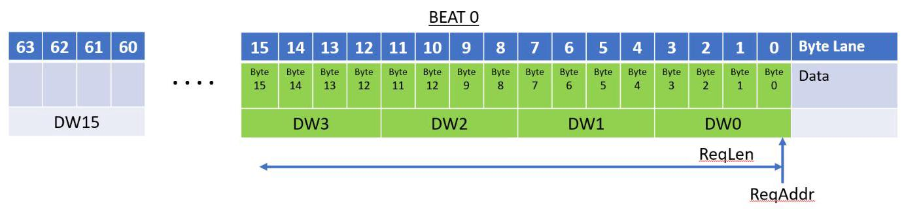
ReqAddr[6:0] = 000_0000b (0); ReqLen = 3 (4 doublewords); ReqAttr[7:4] = 1111b; ReqAttr[3:0] = 1111b
ReqAddr[6:0] = 000_0000b (0)；ReqLen = 3（4个双字）；ReqAttr[7:4] = 1111b；ReqAttr[3:0] = 1111b
Figure 2-12 Four DoubleWorld Read Request Not Straddling a 64-Byte Boundary
图 2-12 四个不跨越 64 字节边界的双字读请求
Bytes 0 through 15 are transferred in a single beat. The ReqAttr byte enables are all 1's to transfer all bytes in the first and last beat.
字节0到15在单次节拍中传输。ReqAttr字节使能全部为1，以在首次和末次节拍中传输所有字节。
The next figure illustrates another 16 byte transfer but starting at byte 56:
下一张图展示了另一个16字节传输，但起始地址为字节56：
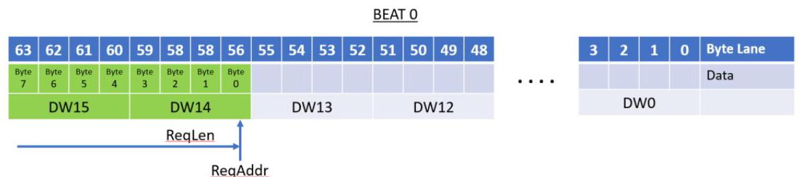
BEAT 1
节拍1
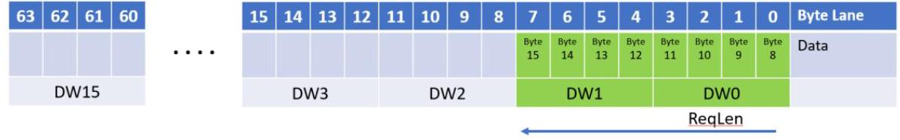
ReqAddr[6:0] = 011_1000b (56); ReqLen = 3 (4 doublewords); ReqAttr[7:4] = 1111b; ReqAttr[3:0] = 1111b
ReqAddr[6:0] = 011_1000b（56）；ReqLen = 3（4个双字）；ReqAttr[7:4] = 1111b；ReqAttr[3:0] = 1111b
Figure 2-13 Four DoubleWord Read Request Straddling a 64-byte boundary
图 2-13 跨越 64 字节边界的四双字读请求
Unlike the previous transfer, this transfer spans a 64-byte boundary and therefore must be transferred using multiple data beats.
与之前的传输不同，本次传输跨越了一个 64 字节边界，因此必须通过多个数据节拍（data beats）进行传输。
The next figure illustrates accessing a single byte (byte 54):
下一张图展示了访问单个字节（字节 54）的过程：
Ultra Accelerator Link Consortium Inc. (UALink) - UALink_200 Rev 1.0 Specification
超加速器链路联盟有限公司（UALink）——UALink_200 修订版 1.0 规范
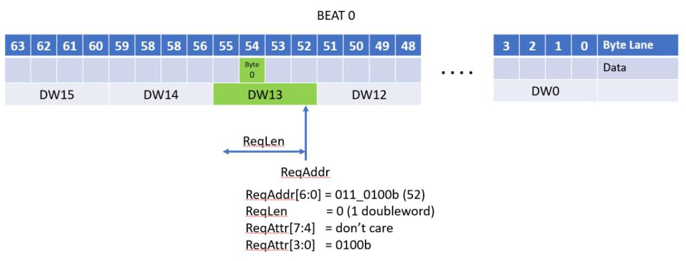
Figure 2-14 Single Byte Read
图 2-14 单字节读
The ReqAddr/ReqLen fields call out a single double word (DW13 at address 52 in the data field), and ReqAttr[3:0] selects the byte (byte 54) to be accessed. ReqAttr[7:4] is ignored.
ReqAddr/ReqLen 字段指定了一个单独的双字（数据字段中地址为 52 的 DW13），而 ReqAttr[3:0] 选择了要访问的字节（字节 54）。ReqAttr[7:4] 被忽略。
The next figure illustrates a six byte access necessitating the use of both ReqAttr[7:4] and ReqAttr[3:0]:
下一幅图展示了一个六字节访问，需要使用 ReqAttr[7:4] 和 ReqAttr[3:0] 这两部分：
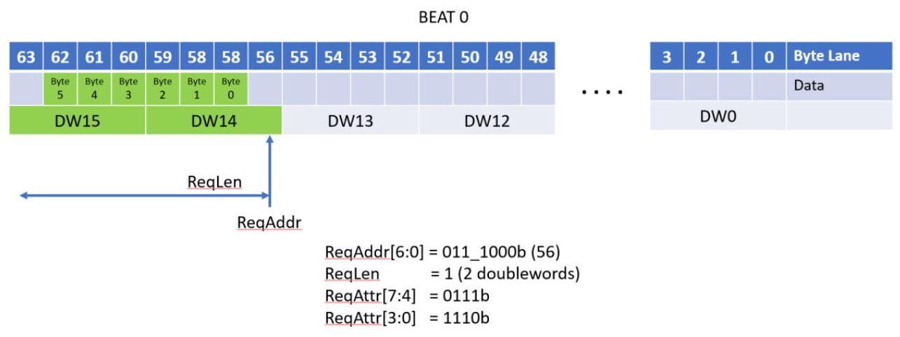
Figure 2-15 Six Byte Read Access Not Straddling a 64-Byte Boundary
图 2-15 不跨越 64 字节边界的六字节读取访问
In a two doubleword transfer, the ReqAttr[7:0] bit control the bytes within the two doublewords that are valid.
在双倍双字传输中，ReqAttr[7:0] 位控制着这两个双倍双字中有效的字节。
The next figure illustrates another two double word transfer, but one that spans a 64-byte boundary:
下一个图例说明了另一个双字传输，但这次跨越了64字节边界：
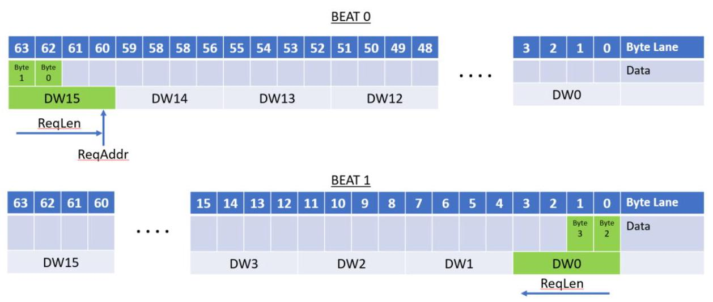
ReqAddr[6:0] = 011_1100b (60); ReqLen = 1 (2 doublewords); ReqAttr[7:4] = 0011b; ReqAttr[3:0] = 1100b
ReqAddr[6:0] = 011_1100b (60)；ReqLen = 1（2 个双字）；ReqAttr[7:4] = 0011b；ReqAttr[3:0] = 1100b
Figure 2-16 Four Byte Read Access Straddling a 64-Byte Boundary
图 2-16 跨越 64 字节边界的四字节读取访问
Because the transfer spans a 64-byte boundary, the transfer is broken up into two data beats. The ReqAttr[7:0] field controls which bytes are valid in the two doublewords spread across the two beats.
由于传输跨越了64字节边界，该传输被拆分为两个数据拍。ReqAttr[7:0] 字段控制跨这两个拍分布的两个双字中哪些字节有效。
Writes
Transfers of write data occur on a 64-byte OrigData field in the Originator Data Channel. Like the RdRspData field, the byte lanes of the OrigData field are numbered 0 to 63 from the low order address to the high order address and any given byte of data in a write is transported on the byte lane of the OrigData field that matches the alignment for the byte's address. The ReqAddr/ReqLen fields are defined for Writes as they are for Reads: the address is a doubleword address (ReqAddr[1:0] are 2'b00) and the ReqLen field is the number of doublewords to be transferred minus one. As with Reads, writes can be up to a maximum of 256 bytes and may not cross a 256 byte boundary.
写数据通过发起者数据通道中的64字节OrigData字段进行传输。与RdRspData字段类似，OrigData字段的字节通道从低地址到高地址依次编号为0至63，写入的任何数据字节都会在与该字节地址对齐相匹配的OrigData字段字节通道上传输。写操作的ReqAddr/ReqLen字段定义与读操作相同：地址为双字地址（ReqAddr[1:0]为2'b00），ReqLen字段为待传输双字数量减一。与读操作一样，写操作最大为256字节，且不得跨越256字节边界。
As with Reads, if a Write spans a 64-byte boundary or boundaries (that is not a 256 byte boundary), the transfer utilizes multiple 64 byte beats to transfer the data and each beat is transferred exactly once. The "wrapping" of write data in a beat is not permitted. The first beat of a Write (OrigDataVld asserted) must occur on the same cycle as the Request for that write (ReqVld) and the subsequent data beats (if any) must occur in consecutive cycles in ascending address order. Write data beats are labeled by the OrigDataOffset field with a value of 0, 1, 2, or 3 indicating the data beat number in ascending address order (OrigDataOffset is 0 for the beat containing the initial doubleword).
与读取操作类似，如果写入跨越了一个或多个64字节边界（非256字节边界），则传输将使用多个64字节数据拍来传送数据，且每拍数据仅传送一次。不允许在数据拍内对写入数据进行“回绕”处理。写入的第一个数据拍（OrigDataVld 有效）必须与该写入请求（ReqVld）在同个周期内出现，后续数据拍（如有）必须按地址升序在连续周期内出现。写数据拍由 OrigDataOffset 字段标记，取值为0、1、2或3，表示按地址升序排列的数据拍编号（包含起始双字的数据拍 OrigDataOffset 为0）。
Write transfers have an additional 64-bit byte enable field - OrigDataByteEn -- that allows for individual bytes within a data beat to written or not in a write transfer. The OrigDataByteEn[0] signal indicates if byte lane 0 is to be written, OrigDataByteEn[1] indicates that byte lane 1 is to be written, and so on. For Write commands (not WriteFull commands), byte enables for byte lanes outside the region called out by ReqAddr/ReqLen must be set to 0 . All other byte enables (within the region called out by ReqAddr/ReqLen) may be '0' or '1'. These other byte enables may be sparse - that is there is no requirement that the byte enables must be consecutively set nor is there a requirement that any byte enables be set.
写传输具有一个附加的64位字节使能字段——OrigDataByteEn——允许在写传输中按数据拍内的每个字节分别决定是否写入。OrigDataByteEn[0]信号指示字节通道0是否被写入，OrigDataByteEn[1]指示字节通道1是否被写入，依此类推。对于Write命令（非WriteFull命令），位于ReqAddr/ReqLen所界定区域之外的字节通道的字节使能必须设置为0。所有其他字节使能（位于ReqAddr/ReqLen所界定区域内）可以为‘0’或‘1’。这些其他字节使能可以是稀疏的——也就是说，不要求字节使能必须连续置位，也不要求必须置位任何字节使能。
For WriteFull commands, the transfers are restricted to starting on a 64-byte boundary, being a multiple of 64 bytes in length, and not crossing a 256-byte boundary. For these transfers, all byte enables in the beats must be set to '1'.
对于WriteFull命令，传输被限制在64字节边界上开始，长度为64字节的倍数，且不能跨越256字节边界。对于这些传输，所有拍中的字节使能必须设置为'1'。
Ultra Accelerator Link Consortium Inc. (UALink) - UALink_200 Rev 1.0 Specification
超加速器链路联盟公司（UALink）- UALink_200 修订1.0规范
The follow figure shows the beat and byte lane assignments and the OrigDataByteEn values for a 16-byte write starting at address 0:
下图显示了从地址 0 开始的 16 字节写入操作的拍和字节通道分配以及 OrigDataByteEn 值：
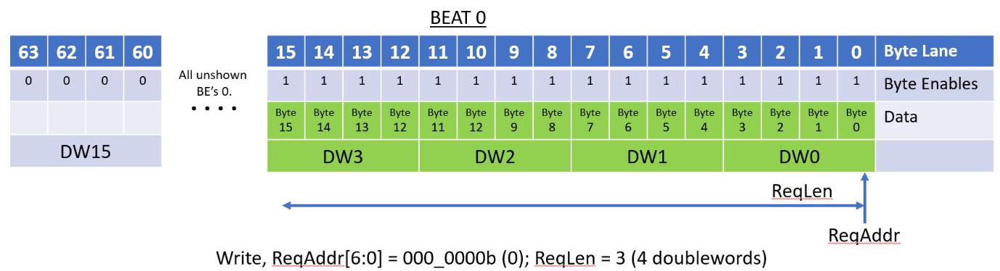
Figure 2-17 Four Doubleword Write Request Not Straddling a 64 Byte Boundary
图 2-17 未跨越 64 字节边界的四个双字写请求
The sixteen asserted byte enables starting at OrigDataByteEn[0] cause the first 16 bytes to be written.
从OrigDataByteEn[0]开始的十六个置位字节使能导致前16个字节被写入。
The following figure shows a sparse write contained within one beat:
下图显示了一个包含在一拍内的稀疏写入：
BEAT 0
拍0
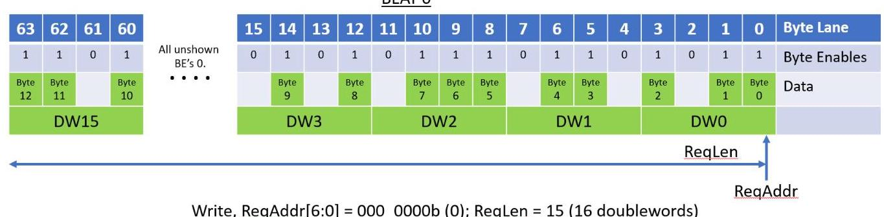
Figure 2-18 Sixteen Doubleword Write Request Not Straddling a 64-Byte Bounday
图2-18 不跨越64字节边界的十六个双字写请求
The various byte enables being on or off produce a sparse write. The ReqAddr/ReqLen are such that the write stays within a single beat.
各种字节使能的开启或关闭产生稀疏写入。ReqAddr/ReqLen 使得该写入保持在单个节拍内。
The following figure shows a sparse write spread across two beats:
下图展示了一个稀疏写入分布在两次节拍中的情形：
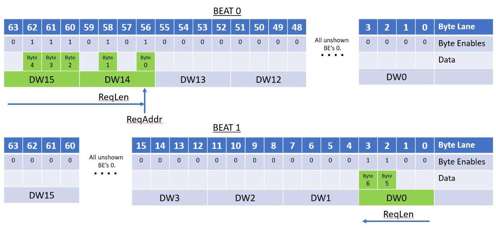
Write, ReqAddr[6:0] = 011_1000b (56); ReqLen = 2 (3 doublewords)
写操作，ReqAddr[6:0] = 011_1000b (56)；ReqLen = 2（3 个双字）
Figure 2-19 Three Doubleword Write Request Straddling a 64 Byte Boundary
图 2-19 跨越 64 字节边界的三双字写请求
The various byte enables being on or off produce a sparse write. The ReqAddr/ReqLen are such that the write spreads across two beats. A sparse write can spread across up to four beats.
各种字节使能信号的开或关会产生一个稀疏写操作。ReqAddr/ReqLen 的设置使得该写操作横跨两个节拍。一个稀疏写操作最多可以横跨四个节拍。
Unshown in these figures is the case where no byte enables are asserted. In such a case, the beats are still transferred on the OrigData field, but no updates are made to memory.
这些图中未显示没有字节使能有效的情况。在这种情况下，数据拍仍在 OrigData 字段上传输，但不会对内存进行任何更新。
The following figure shows a 128-byte WriteFull to address 0:
下图展示了一个向地址 0 发起的 128 字节 WriteFull 操作：
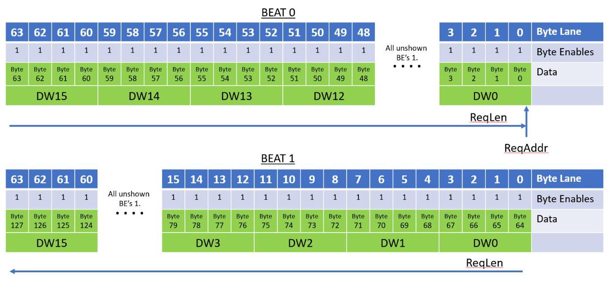
WriteFull, ReqAddr[6:0] = 000_0000b (0); ReqLen = 31 (32 doublewords)
WriteFull，ReqAddr[6:0] = 000_0000b (0)；ReqLen = 31（32个双字）
Figure 2-20 A 128 Byte Write Full Request (Requires Two Beats)
图 2-20 一个 128 字节的完整写入请求（需要两次节拍）
The WriteFull command allows the TL and PHY layers the option to compress out the byte enables. The byte enables must still appear on the UALink Protocol Level Interface.
WriteFull 命令允许 TL 和 PHY 层选择压缩掉字节使能。但字节使能仍须出现在 UALink 协议层接口上。
Atomics
Ultra Accelerator Link Consortium Inc. (UALink) - UALink_200 Rev 1.0 Specification
Ultra Accelerator Link Consortium Inc.（UALink） - UALink_200 Rev 1.0 规范
Originators issue Atomic commands to perform I/O coherent atomic (at the completer) read-modify-write operations. The AtomicR commands return the value read in the read-modify-write operation and AtomicNR commands do not return data. The semantics of the various AtomicR or AtomicNR operations are called out by the OpType sub-field in ReqAttr field and the size of the element(s) in memory (4-byte or 8-byte) that the Atomic operates on is specified by the OpSize sub-field in the ReqAttr field. The exact semantics for a given OpType field value is implementation specific as is whether the Atomic needs one operand (a single-operand atomic with one "Op1" operand) or two operands (a double-operand atomic with "Op1" and "Op2" operands).
发起者发出 Atomic 命令以执行 I/O 一致的原子（在完成端）读-修改-写操作。AtomicR 命令返回读-修改-写操作中读取的值，而 AtomicNR 命令不返回数据。各种 AtomicR 或 AtomicNR 操作的语义由 ReqAttr 字段中的 OpType 子字段指出，Atomic 操作的内存元素大小（4 字节或 8 字节）由 ReqAttr 字段中的 OpSize 子字段指定。对于给定的 OpType 字段值，其确切语义取决于具体实现，同样地，Atomic 是需要一个操作数（具有一个“Op1”操作数的单操作数原子操作）还是两个操作数（具有“Op1”和“Op2”操作数的双操作数原子操作）也取决于具体实现。
For all Atomics, the operand data is conveyed on the OrigData bus to the completer. For an AtomicR Atomic, the returned data and Response is conveyed on the Read Response/Data Channel. For an AtomicNR command, the status Response (without any data) is conveyed on the Write Response Channel.
对于所有原子操作，操作数数据通过原始数据总线传送到完成端。对于带数据返回的原子操作（AtomicR），返回的数据和响应在读响应/数据通道上传送。对于无数据返回的原子操作命令（AtomicNR），状态响应（无任何数据）在写响应通道上传送。
For all Atomics, each aligned 64-byte region of memory is divided into 16 aligned 4-byte elements for a 4-byte atomic or 8 aligned 8-byte elements for an 8-byte atomic. For single operand atomics, ReqAddr must be aligned to the size of the element operated on (4-byte or 8-byte), ReqLen must specify a length that is a multiple of the element size, and the Request may not cross a 64-byte boundary (i.e. all single operand atomics transfer their operand data in a single data beat). The operand value in each element in the OrigData field is used to perform the atomic read-modify-write for the corresponding location in memory. Similarly, data returned for a given element by an AtomicR Request is placed in the corresponding locations in the RdRspData field.
对于所有原子操作，内存中每个对齐的64字节区域被划分为16个对齐的4字节元素（用于4字节原子操作）或8个对齐的8字节元素（用于8字节原子操作）。对于单操作数原子操作，ReqAddr必须与所操作元素的大小（4字节或8字节）对齐，ReqLen必须指定为元素大小的整数倍的长度，并且该请求不得跨越64字节边界（即所有单操作数原子操作在单个数据节拍中传输其操作数数据）。OrigData字段中每个元素的操作数值用于对内存中相应位置执行原子读-修改-写。类似地，AtomicR Request为给定元素返回的数据放置在RdRspData字段中的相应位置。
Each 4 or 8 element in the 64 byte region of memory may be updated or not independently by setting or not setting all the byte enables for the element. All byte enables for each element must either be set to ' 1 ' or '0'. Partial byte enables within an element are not permitted. The elements that are updated may be sparse, that is there is no requirement that the elements that are updated are contiguous, nor is there a requirement that any element be updated at all. For an AtomicR Request, data for the elements read are returned in their naturally aligned positions in the RdRspData field. The data returned for an element whose byte enables were not set must be ignored by the Originator and should be driven to all '0's or all '1's by the Completer to prevent security leaks.
在64字节内存区域中，每个4或8字节元素均可独立决定是否更新，方法是将该元素的所有字节使能全部置为“1”或全部置为“0”。每个元素的字节使能必须全部为“1”或全部为“0”，不允许出现元素内的部分字节使能。被更新的元素之间可以是稀疏的，即不要求被更新的元素地址连续，也不要求必须有元素被更新。对于AtomicR请求，读取到的元素数据会按其自然对齐位置返回到RdRspData字段中。对于字节使能未被置位的元素，其返回的数据应被发起方忽略，并且完成方应将其驱动为全“0”或全“1”，以防止安全泄露。
The following figure illustrates the byte lane allocation for the Operands and (if present) returned data for an 8-byte single-operand Atomic. The ReqAddr is offset from address '0' and two sparse elements are operated on:
下图说明了8字节单操作数原子操作的操作数及（如果存在）返回数据的字节通道分配。请求地址从地址‘0’偏移，并且操作的两个稀疏元素为：
Operand Data for 8-byte Op1 AtomicR/AtomicNR
用于 8 字节 Op1 AtomicR/AtomicNR 的操作数数据
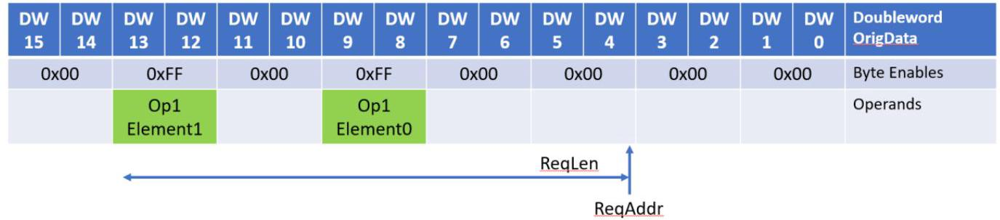
Returned Data for 8-byte Op1 AtomicR
8 字节 Op1 AtomicR 的返回数据
| DW 15 | DW 14 | DW 13 | DW 12 | DW 11 | DW 10 | DW 9 | DW 8 | DW 7 | DW 6 | DW 5 | DW 4 | DW 3 | DW 2 | DW 1 | DW 0 | Doubleword RdRspData |
| Data Element 1 | Data Element 0 | Returned Data for AtomicR | ||||||||||||||
Single op AtomicR/AtomicNR, ReqAddr[6:0] = 001_0000b (0); ReqLen = 9 (10 doublewords), OPSize = b'01' (8 bytes).
单一操作 AtomicR/AtomicNR，ReqAddr[6:0] = 001_0000b (0)；ReqLen = 9（10 个双字），OPSize = b'01'（8 字节）。
Figure 2-21 Single Operand (Eight-Byte Operands) Atomic
图 2-21 单操作数（八字节操作数）原子操作
The data elements, for an AtomicR, are returned in their naturally aligned byte lanes.
对于 AtomicR，数据元素在其自然对齐的字节通道中返回。
The following figure illustrates the byte lane allocation for the Operands and (if present) returned data for a 4-byte single-operand Atomic. The ReqAddr is at address '0' and five sparse elements are operated on:
下图展示了4字节单操作数原子操作中操作数及（若存在）返回数据的字节通道分配。请求地址（ReqAddr）位于地址“0”处，操作作用于五个稀疏元素上：
Operand Data for 4-byte Op1 AtomicR/AtomicNR
用于 4 字节 Op1 AtomicR/AtomicNR 的操作数数据
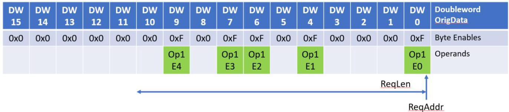
Returned Data for 4-byte Op1 AtomicR
4 字节 Op1 原子读操作的返回数据
| DW 15 | DW 14 | DW 13 | DW 12 | DW 11 | DW 10 | DW 9 | DW 8 | DW 7 | DW 6 | DW 5 | DW 4 | DW 3 | DW 2 | DW 1 | DW 0 | Doubleword RdRspData |
| Dat E4 | Dat E3 | Dat E2 | Dat E1 | Dat E0 | Returned Data for AtomicR |
Single op AtomicR/AtomicNR, ReqAddr[6:0] = 000_0000b (0); ReqLen = 10 (11 doublewords), OPSize = b'00' (4 bytes).
单个操作 AtomicR/AtomicNR，ReqAddr[6:0] = 000_0000b（0）；ReqLen = 10（11 个双字），OPSize = b'00'（4 字节）。
Figure 2-22 Single Operand (Four-Byte Operands) Atomic
图 2-22 单操作数（四字节操作数）原子操作
The data elements, for an AtomicR, are returned in their naturally aligned byte lanes.
对于 AtomicR 命令，数据元素按其自然对齐的字节通道返回。
The handling of double-operand Atomics is different than single-operand Atomics. The ReqLen for a double-operand always specifies a 64-byte transfer (ReqLen = 15) and the ReqAddr must be aligned on a 32-byte boundary. The double-operand atomic updates the 32 bytes of memory located at the address specified by ReqAddr. The operand data for a double-operand atomic, however, is transferred in one data beat with the Op1 operand data always occurring on byte lanes
双操作数原子操作的处理方式与单操作数原子操作不同。双操作数原子操作的 ReqLen 始终指定 64 字节传输（ReqLen = 15），且 ReqAddr 必须对齐到 32 字节边界。该双操作数原子操作更新位于 ReqAddr 指定地址处的 32 字节内存。然而，双操作数原子操作的操作数数据在一个数据节拍中传输，其中 Op1 操作数数据始终出现在字节通路上
UPLI Interface Definition and Operation Rules
UPLI 接口定义与操作规则
Ultra Accelerator Link Consortium Inc. (UALink) - UALink_200 Rev 1.0 Specification
Ultra Accelerator Link 联盟有限公司 (UALink) - UALink_200 修订版 1.0 规范
0 to 31 on the OrigData field and the Op2 operand data occurring on bytes lanes 32 to 63 on the OrigData field. The placement of the Op1 and Op2 Operand data is unaffected by ReqAddr.
Op1 操作数数据出现在 OrigData 字段的字节通道 0 至 31，而 Op2 操作数数据出现在 OrigData 字段的字节通道 32 至 63。Op1 和 Op2 操作数数据的放置不受 ReqAddr 影响。
The 32-byte Operand Data fields Op1 and Op2 are each broken up into 8 aligned 4-byte elements in memory for a 4-byte atomic or 4 aligned 8-byte elements for an 8-byte atomic. Corresponding Op1 and Op2 elements, by address, are utilized by the atomic to update the corresponding element in the 32-byte memory region specified by ReqAddr.
32字节的操作数字段Op1和Op2各自被分割为8个对齐的4字节元素（用于4字节原子操作）或4个对齐的8字节元素（用于8字节原子操作）。按地址对应的Op1和Op2元素被原子操作用来更新ReqAddr所指定的32字节内存区域中的对应元素。
As with single-operand Atomics, byte, the OrigDataByteEn byte enables are used to determine if a given element is to be updated and the byte enables may be sparse (dis-contiguous elements may be updated and no element may updated). Similarly to single-operand Atomics, the byte enables for the Op1 and Op2 operands for each element must all be asserted, or none asserted. No partial enables within an element's operands are permitted (a consequence of this condition is that the Op1 operand data byte enables must have the same values as the Op2 operand data byte enables).
与单操作数原子操作类似，OrigDataByteEn 字节使能用于确定给定元素是否要被更新，并且字节使能可以是稀疏的（可以更新非连续元素，也可以不更新任何元素）。同样类似于单操作数原子操作，每个元素的 Op1 和 Op2 操作数的字节使能必须全部有效，或全部无效。不允许在一个元素的操作数内进行部分使能（这一条件的后果是 Op1 操作数数据字节使能的值必须与 Op2 操作数数据字节使能的值相同）。
The following figure illustrates the byte lane allocation for the Operands and (if present) returned data for an 8-byte double-operand Atomic. The ReqAddr is offset from address '0x20h' and two sparse elements are operated on:
下图说明了8字节双操作数原子操作的操作数及（若存在）返回数据的字节通道分配情况。请求地址从地址“0x20h”处偏移，并对两个稀疏元素执行操作：
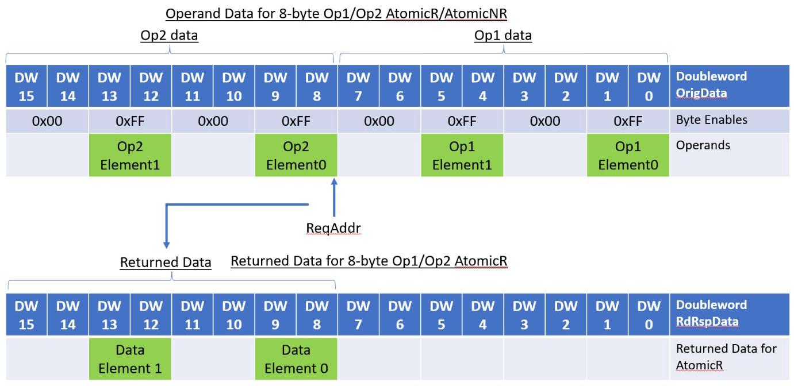
Double op AtomicR/AtomicNR, ReqAddr[6:0] = 010_0000b (0x20h); OPSize = b'01' (8 bytes).
双操作 AtomicR/AtomicNR，ReqAddr[6:0] = 010_0000b (0x20h)；OPSize = b'01' (8 字节)。
Figure 2-23 Double Operand (Eight-Byte Operands) Atomic, Data Returned in High 32 Bytes.
图 2-23 双操作数（八字节操作数）原子操作，数据返回在高 32 字节
The data elements, for an AtomicR, are returned in their naturally aligned byte lanes relative to the address specified by ReqAddr.
对于 AtomicR，数据元素根据 ReqAddr 指定的地址，在其自然对齐的字节通道中返回。
The following figure illustrates the byte lane allocation for the Operands and (if present) returned data for a 4-byte double-operand Atomic. The ReqAddr is at address '0' and four sparse elements are operated on:
以下图示说明了 4 字节双操作数原子操作的操作数和（如果存在）返回数据的字节通道分配。ReqAddr 位于地址“0”，并且对四个稀疏元素执行操作：
Ultra Accelerator Link Consortium Inc. (UALink) - UALink_200 Rev 1.0 Specification
超加速器链路联盟公司 (UALink) - UALink_200 Rev 1.0 规范
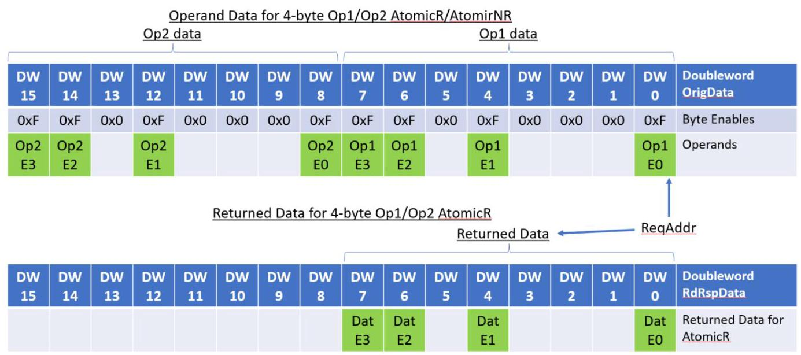
Double op AtomicR/AtomicNR, ReqAddr[6:0] = 000_0000b (0); OPSize = b'00' (4 bytes).
双操作 AtomicR/AtomicNR，ReqAddr[6:0] = 000_0000b (0)；OPSize = b'00' (4 字节)。
Figure 2-24 Double Operand (Four-Byte Operands) Atomic, Data Returned in Low 32 Bytes.
图 2-24 双操作数（四字节操作数）原子操作，数据返回在低 32 字节
The data elements, for an AtomicR, are returned in their naturally aligned byte lanes relative to the address specified by ReqAddr.
对于 AtomicR，数据元素以其相对于 ReqAddr 指定地址的自然对齐字节通道返回。
While the examples above do not explicitly illustrate one-byte and two-byte Elements in Atomic operations, the obvious substitutions for byte enables, operands and data, and their alignments for one and two-byte elements apply.
尽管上述示例未明确展示原子操作中的单字节和双字节元素，但对于字节使能、操作数和数据及其对齐方式的明显替换，也适用于单字节和双字节元素。
A Completer Device that does not support a given Atomic Request returns a SLVERR Response on the appropriate Read Response Channel (for AtomicR Requests) or Write Response Channel (for AtomicNR Requests).
不支持给定原子请求的完成器设备会在相应的读响应通道（对于 AtomicR 请求）或写响应通道（对于 AtomicNR 请求）上返回 SLVERR 响应。